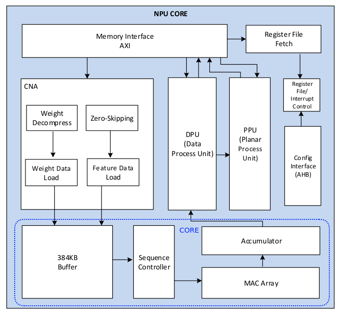

How to add a new backend to tinygrad: A Rockchip NPU example
Last update: Sep 20 2026
TLDR: This blog will mainly use DPU EW op for the 28 GroupOps.ALU, treat CMAC like tensor core for GEMM/CONV if the shape matches, otherwise will just use EW add/mul for GEMM.
Tinygrad is a zero-dependency minmial codebase (25407 core lines @20260920) to do ML in python, those lines already included a PyTorch like frontend and kernel space GPU driver down to MMIO written in user space, so makes it the perfect place to support USB3 eGPU thats can drives a car (https://www.youtube.com/watch?v=nmTepfv3Itg) and add new accelorator support.
"Your accelerator of choice only needs to support a total of ~25 low level ops." -- from tinygrad README (https://github.com/tinygrad/tinygrad/blob/ebf163682acfa4a6be2775c5efa02a503c86a220/README.md?plain=1#L112)
We will
- Part 1: Modify ops_python.py as starting point to understand the NPU and implements the 25 Ops
- Part 2: Run test_ops.py to see how many passes we can achieve with it
- Part 3: Write proper ops_rockchip.py from scratch before fixig failed cases
- Part 4: Fail case fix by Pattern Matcher
- Part 5: Add tests cases and Emulator for CI
- Part 5: Issues to be solved before a PR
U can follow among if u own an OrangePi 5 running the Orange pi Ubuntu 22.02 image.
Part 1: modify ops_python.py as starting point to understand the NPU and implements the 25 Ops
Ops.ADD
This approach was inspired by liej6799 (https://github.com/liej6799/tinygrad/blob/3588-new/tinygrad/runtime/ops_rockchip.py) who made the simplest ADD works on tinygrad while I was struggling how to port the registers and Ops I reversed (https://github.com/allbilly/npu/blob/master/include/rknnops.h) to tinygrad.
Lets begin with
git clone https://github.com/tinygrad/tinygrad
cd tinygrad && git checkout ebf1636
uv venv && source .venv/bin/activate
cp tinygrad/runtime/ops_python.py tinygrad/runtime/ops_rockchip.py
In tinygrad, u can choose a runtime with env like DEV=ROCKCHIP. If u want to run tests, some dependenceis are still needed like pytest and numpy/torch to generte reference output.
uv pip install -e . numpy torch pytest pytest-xdist --torch-backend=cpu
DEV=ROCKCHIP python test/backend/test_ops.py TestOps.test_add
The sequential replay checks use Python 3.12.12, NumPy 2.5.3, CPU Torch 2.14.0, pytest 9.1.1 and pytest-xdist 3.8.0 with the pinned tinygrad checkout above. The older timings below are recorded runs, not speed guarantees for this environment.
(tinygrad) orangepi@orangepi5:~/tinygrad$ DEV=ROCKCHIP python test/backend/test_ops.py TestOps.test_add
Traceback (most recent call last):
File "/home/orangepi/tinygrad/test/backend/test_ops.py", line 92, in <module>
class TestOps(unittest.TestCase):
File "/home/orangepi/tinygrad/test/backend/test_ops.py", line 727, in TestOps
@unittest.skipIf(isinstance(Device[Device.DEFAULT].renderer, NIRRenderer), "TODO: broken in LVP")
~~~~~~^^^^^^^^^^^^^^^^
File "/home/orangepi/tinygrad/tinygrad/device.py", line 32, in __getitem__
return self.__get_canonicalized_item(ix)
^^^^^^^^^^^^^^^^^^^^^^^^^^^^^^^^^
File "/home/orangepi/tinygrad/tinygrad/device.py", line 40, in __get_canonicalized_item
ret = self.get_class(ix)(ix)
^^^^^^^^^^^^^^^^^^
File "/home/orangepi/tinygrad/tinygrad/device.py", line 37, in get_class
return [cls for cname, cls in inspect.getmembers(importlib.import_module(f'{base}.runtime.ops_{x}')) if
(cname.lower() == x + "device")][0]
~~~~~~~~~~~~~~~~~~~~~~~~~~~~~~~~~~~~~~~~~~~~~~~~~~~~~~~~~~~~~~~~~~~~~~~~~~~~~~~~~~~~~~~~~~~~~~~~~~~~~~~~~~~~~~~~~~~~~
~~~~~~~~~~~~^^^
IndexError: list index out of range
This is because RockchipDevice was not found in our new ops_rockchip.py. Lets replace all "Python" with "Rockchip"
+supported_ops = {Ops.ADD}
+
-class PythonProgram(Program['PythonDevice']):
- def __init__(self, dev:'PythonDevice', obj:TinyELF):
+class RockchipProgram(Program['RockchipDevice']):
+ def __init__(self, dev:'RockchipDevice', obj:TinyELF):
self.uops: list[UOp] = pickle.loads(obj.lib)
- self.tensor_cores = PythonRenderer(obj.target).tensor_cores
+ self.tensor_cores = RockchipRenderer(obj.target).tensor_cores
self.uop_to_index: dict[UOp, int] = {u:i for i,u in enumerate(self.uops)}
self.loop_ends: dict[UOp, int] = {u.src[1]:i for i, u in enumerate(self.uops) if u.op == Ops.END}
def __call__(self, *bufs, global_size:tuple[int,int,int]=(1,1,1), local_size:tuple[int,int,int]=(1,1,1), vals:tuple[int, ...]=(), wait=False, **kw):
@@ -156,12 +156,12 @@ class PythonProgram(Program['PythonDevice']):
i += 1
return time.perf_counter() - st
-class PythonCompiler(Compiler):
+class RockchipCompiler(Compiler):
def compile(self, src:str) -> bytes: return base64.b64decode(src)
-class PythonRenderer(Renderer):
+class RockchipRenderer(Renderer):
- code_for_op = python_alu
+ code_for_op = dict.fromkeys(supported_ops)
- compiler = PythonCompiler()
+ compiler = RockchipCompiler()
def __init__(self, target:Target):
assert (emu:=getenv("EMULATE", "")) == "", ("EMULATE is deprecated, use DEV=PYTHON::" +
@@ -181,6 +181,6 @@ class PythonRenderer(Renderer):
def supported_dtypes(self): return {d for d in super().supported_dtypes() if d != dtypes.half or sys.version_info >= (3, 12)}
-class PythonDevice(Compiled):
+class RockchipDevice(Compiled):
def __init__(self, device:str):
- super().__init__(device, HostAllocator(self), [PythonRenderer], PythonProgram)
+ super().__init__(device, HostAllocator(self), [RockchipRenderer], RockchipProgram)
$ DEV=ROCKCHIP python test/backend/test_ops.py TestOps.test_add
test_add (__main__.TestOps.test_add) ...
testing [(45, 68), (45, 68)] torch/tinygrad fp: 0.26 / 263.81 ms bp: 1.07 / 2.80 ms
testing [] torch/tinygrad fp: 0.27 / 0.25 ms bp: nan / nan ms
testing [(45, 68), (45, 68)] torch/tinygrad fp: 0.06 / 107.37 ms bp: 0.49 / 0.73 ms
testing [(), ()] torch/tinygrad fp: 0.05 / 0.09 ms bp: 0.44 / 0.39 ms ok
----------------------------------------------------------------------
Ran 1 test in 0.494s
OK
Great, but it was running on the CPU not the NPU. We need to understand a bit more on the NPU first.
Rockchip NPU was derived from the open NVDLA (doc link) NPU from nvidia as described in mtx512 blog(https://jas-hacks.blogspot.com/2024/02/rk3588-reverse-engineering-rknn.html). Rockchip neither release the verilog nor RKNN (link) compiler and runtime, but they released the linux KMD rknpu_driver(https://github.com/allbilly/rknpu_driver) because of linux GPLv2 license. Thanks to prior work from phhusson (https://github.com/phhusson/rknpu-reverse-engineering) that introduced me the concept of IOCTL and GEM. Reading the rknpu_driver code we can easily find DRM_IOCTL_RKNPU_SUBMIT and the submit struct it needed. Rockchip proprietary runtime being closed source is not really a problem for us because it still needed some way to talk to linux KMD, so we can capture the RKNN bytes, replays it, and rewrite into readable code. With GDB and enough pantient, i captured the submit struct and bytes in each allocated BO/GEM and rewrote in C(https://github.com/allbilly/npu/blob/master/include/rknnops.h) according to the leaked TRM(https://github.com/liej6799/rk3588/blob/main/trm.pdf) and prior work from mtx512(https://github.com/mtx512/rk3588-npu) who did the GEMM reverse. Its a year long frustrating but rewarding process as SOTA GPT-5.1 back then was bad in register programming, it helps with decoding a bit but dont even think about auto debug why the replay/rewrite is not working, which forces me to read/program/debug everything myself. Most effort was in decoding CONV input/weight bytes packing for every shapes(https://github.com/allbilly/npu/blob/master/ops_reg/main.c) and decoding/programming the LUT silu (https://github.com/allbilly/npu/blob/master/ops_rknn/act/silu.py) and sigmoid(https://github.com/allbilly/npu/blob/master/ops_rknn/act/sigmoid.py). Details are not included in this blog, if u are still interested in my frustration, just point ur agent to commit history in allbilly/npu and allbilly/rk3588.
Rockchip and NVDLA

The NPU is a 3 core fixed stage pipeline processor, input and weight go through CORE (MAC array) -> DPU (elementwise op) -> PPU (pooling/reduction op). In NVDLA terms, CORE is CSC/CMAC/CACC(https://github.com/nvdla/hw/tree/nvdlav1/vmod/nvdla), DPU is SDP(https://github.com/nvdla/hw/tree/nvdlav1/vmod/nvdla/sdp), PPU is PDP(https://github.com/nvdla/hw/tree/nvdlav1/vmod/nvdla/pdp). This blog will mainly use DPU EW op for the 25 Ops, treat CMAC like tensor core for GEMM/CONV if the shape matches, otherwise will just use EW add/mul for GEMM.
Now to do a simple fp16 ADD example, this is also my NPU health check script.
cd ~ && git clone https://github.com/allbilly/rk3588
python rk3588/examples/simple_add.py
ret=0, handle=1, obj_addr=0xffffff8137dadc00, dma_addr=0xfffff000
Memory mapped at offset=0x100000000
ret=0, handle=2, obj_addr=0xffffff8137da8000, dma_addr=0xffffe000
Memory mapped at offset=0x100001000
ret=0, handle=3, obj_addr=0xffffff8137daec00, dma_addr=0xff800000
Memory mapped at offset=0x100002000
ret=0, handle=4, obj_addr=0xffffff8137dac400, dma_addr=0xff400000
Memory mapped at offset=0x100402000
ret=0, handle=5, obj_addr=0xffffff8137dab000, dma_addr=0xff000000
Memory mapped at offset=0x100802000
reset_npu ret=0
SUBMIT ret=0
ADD NPU=[8 8 8 8 8 8 8 8] expected=[8 8 8 8 8 8 8 8] PASS
what the script does is first open the NPU device to obtain fd, then use ctypes to create C struct, ioctl DRM_IOCTL_RKNPU_MEM_CREATE to allocate BO for task/regcmd/input/weight/output, then update dma_addr of input/weight/output in the register sequence, copy the registers to C array regcmd, set regcmd address in a task, and DRM_IOCTL_RKNPU_SUBMIT to submit the task. npu_regs was captured from RKNN simple add and removed all unesscary lines.
npu_regs = [
0x1001000001e5400c,
0x1001480000024010,
0x100100070007403c,
0x1001000000004030,
0x1001108202c04070,
0x200100000000500c,
0x2001000000005010,
0x2001000700075014,
0x2001400000085034,
(reg.TARGET_DPU << 48) | ((output_mem_create.dma_addr & 0xFFFFFFFF) << 16) | reg.DST_BASE_ADDR,
(reg.TARGET_RDMA << 48) | ((input_mem_create.dma_addr & 0xFFFFFFFF) << 16) | reg.RDMA_SRC_BASE_ADDR,
(reg.TARGET_RDMA << 48) | ((weight_mem_create.dma_addr & 0xFFFFFFFF) << 16) | reg.RDMA_EW_BASE_ADDR,
0x2001000178495044,
0x0081000000180008,
]
Dont worry, we will decode it later. The NPU programming model is mulitple NPU submits by host -> mulitple tasks in one submit -> fused mulitple ops in one task, e.g. CONV/MAC+ELEMENTWISE+BN+BS+RELU+POOL in one task.
Great, now we can port this to ops_rockchip.py and open the NPU device. In simple_add.py, we used os.open(f"/dev/dri/card1", os.O_RDWR), but in tinygrad we will use FileIOInterface like other runtime do.
AGENTS.md
-import pickle, base64, itertools, time, sys, ctypes
+import pickle, base64, itertools, time, sys, ctypes, os
+from tinygrad.runtime.support.hcq import FileIOInterface
@@
class RockchipDevice(Compiled):
def __init__(self, device:str):
+ self.fd_ctl = FileIOInterface("/dev/dri/card1", os.O_RDWR)
we also need the C struct and registers offset from rknpu_driver/inlcude/*.h (https://github.com/allbilly/rknpu_driver/tree/main/include) to be imported in python, here i will just reuse the autogen from liej6799(https://github.com/liej6799/tinygrad/blob/3588-new/tinygrad/runtime/autogen/rockchip.py)
cd ~/tinygrad
wget -O tinygrad/runtime/autogen/rockchip.py https://raw.githubusercontent.com/liej6799/tinygrad/5101a24d100dc08ef612fada1d0766b44f4cbad9/tinygrad/runtime/autogen/rockchip.py
Keep running the following commands from ~/tinygrad. This pinned register file has SHA256 2ae597cd73a2c2a4afa245f5afbddb416485fcd479529ed7e16f4ddaf31e2ebf.
And allocate task/regcmd/input/weight/output Buffer Object
-import pickle, base64, itertools, time, sys, ctypes, os
+import pickle, base64, itertools, time, sys, ctypes, os, mmap
+from tinygrad.runtime.autogen import rockchip as rk
@@
class RockchipDevice(Compiled):
def __init__(self, device:str):
self.fd_ctl = FileIOInterface("/dev/dri/card1", os.O_RDWR)
super().__init__(device, HostAllocator(self), [RockchipRenderer], RockchipProgram)
+ self.task_buf, self.task_mem = self._gpu_alloc(1024, rk.RKNPU_MEM_KERNEL_MAPPING)
+ self.regcmd_buf, self.regcmd_mem = self._gpu_alloc(8192)
+ self.input_buf, self.input_mem = self._gpu_alloc(4194304)
+ self.weight_buf, self.weight_mem = self._gpu_alloc(4194304)
+ self.output_buf, self.output_mem = self._gpu_alloc(4194304)
+
+ def _gpu_alloc(self, size:int, flags:int=0) -> tuple[int, rk.struct_rknpu_mem_create]:
+ mem = rk.DRM_IOCTL_RKNPU_MEM_CREATE(self.fd_ctl, size=size, flags=flags | rk.RKNPU_MEM_NON_CACHEABLE)
+ try:
+ mapping = rk.DRM_IOCTL_RKNPU_MEM_MAP(self.fd_ctl, handle=mem.handle)
+ addr = self.fd_ctl.mmap(0, mem.size, mmap.PROT_READ | mmap.PROT_WRITE, mmap.MAP_SHARED, mapping.offset)
+ except Exception:
+ rk.DRM_IOCTL_RKNPU_MEM_DESTROY(self.fd_ctl, handle=mem.handle, obj_addr=mem.obj_addr)
+ raise
+ return addr, mem
+
+ def _gpu_free(self, addr:int, mem:rk.struct_rknpu_mem_create) -> None:
+ FileIOInterface.munmap(addr, mem.size)
+ rk.DRM_IOCTL_RKNPU_MEM_DESTROY(self.fd_ctl, handle=mem.handle, obj_addr=mem.obj_addr)
Next, update dma_addr of input/weight/output in the register sequence, dma_addr are owned by RockchipDevice so we can get it with self.dev.output_mem.dma_addr
class RockchipProgram(Program['RockchipDevice']):
@@
def __init__(self, dev:'RockchipDevice', obj:TinyELF):
+ self.dev = dev
self.uops: list[UOp] = pickle.loads(obj.lib)
self.tensor_cores = RockchipRenderer(obj.target).tensor_cores
self.uop_to_index: dict[UOp, int] = {u:i for i,u in enumerate(self.uops)}
self.loop_ends: dict[UOp, int] = {u.src[1]:i for i, u in enumerate(self.uops) if u.op == Ops.END}
+ self.npu_regs = [
+ 0x1001000001e5400c,
+ 0x1001480000024010,
+ 0x100100070007403c,
+ 0x1001000000004030,
+ 0x1001108202c04070,
+ 0x200100000000500c,
+ 0x2001000000005010,
+ 0x2001000700075014,
+ 0x2001400000085034,
+ ((rk.DPU + 1) << 48) | ((self.dev.output_mem.dma_addr & 0xFFFFFFFF) << 16) | rk.REG_DPU_DST_BASE_ADDR,
+ ((rk.DPU_RDMA + 1) << 48) | ((self.dev.input_mem.dma_addr & 0xFFFFFFFF) << 16) | rk.REG_DPU_RDMA_RDMA_SRC_BASE_ADDR,
+ ((rk.DPU_RDMA + 1) << 48) | ((self.dev.weight_mem.dma_addr & 0xFFFFFFFF) << 16) | rk.REG_DPU_RDMA_RDMA_EW_BASE_ADDR,
+ 0x2001000178495044,
+ 0x0081000000180008,
+ ]
Next, copy the registers to the C array regcmd, set the regcmd DMA address in a task, prepare the submut struct and submit with DRM_IOCTL_RKNPU_SUBMIT we will add a function submit() in RockchipProgram
class RockchipProgram(Program['RockchipDevice']):
+ def submit(self) -> None:
+ regs = self.npu_regs
+ # copy the registers to the C array regcmd
+ ctypes.memset(self.dev.regcmd_buf, 0, self.dev.regcmd_mem.size)
+ regcmd = (ctypes.c_uint64 * len(regs)).from_address(self.dev.regcmd_buf)
+ regcmd[:] = list(regs)
+
+ # set the regcmd DMA address in a task
+ tasks = ctypes.cast(self.dev.task_buf, ctypes.POINTER(rk.struct_rknpu_task))
+ tasks[0] = rk.struct_rknpu_task(
+ flags=0,
+ op_idx=4,
+ enable_mask=0x18,
+ int_mask=0x300,
+ int_clear=0x1ffff,
+ int_status=0,
+ regcfg_amount=len(regs),
+ regcfg_offset=0,
+ regcmd_addr=self.dev.regcmd_mem.dma_addr
+ )
+
+ # prepare the submut struct
+ submit = rk.struct_rknpu_submit(
+ flags=rk.RKNPU_JOB_PC | rk.RKNPU_JOB_BLOCK | rk.RKNPU_JOB_PINGPONG,
+ timeout=6000,
+ task_start=0,
+ task_number=1,
+ task_counter=0,
+ priority=0,
+ task_obj_addr=self.dev.task_mem.obj_addr,
+ core_mask=1,
+ fence_fd=-1
+ )
+ submit.subcore_task[0] = rk.struct_rknpu_subcore_task(task_start=0, task_number=1) # assigned to core 0
+ submit.subcore_task[1] = rk.struct_rknpu_subcore_task(task_start=1, task_number=0)
+ submit.subcore_task[2] = rk.struct_rknpu_subcore_task(task_start=2, task_number=0)
+
+ # submit with DRM_IOCTL_RKNPU_SUBMIT
+ rk.DRM_IOCTL_RKNPU_SUBMIT(self.dev.fd_ctl, __payload=submit)
and then pack our inputs
-import pickle, base64, itertools, time, sys, ctypes, os, mmap
+import pickle, base64, itertools, time, sys, ctypes, os, mmap, struct
@@
class RockchipProgram(Program['RockchipDevice']):
@@
def __init__(self, dev:'RockchipDevice', obj:TinyELF):
self.dev = dev
+ self.supported_ops = supported_ops
self.supported_ops uses the shared module-level set introduced above. It currently contains only ADD. At this step the runtime uses set membership to select the NPU execution path, and the renderer uses the same set to select code-generation rewrites. The captured register sequence remains hardcoded for ADD.
class RockchipProgram(Program['RockchipDevice']):
+ def add(self, a:list[float], b:list[float]) -> list[float]:
+ assert b is not None and len(a) == len(b)
+ result:list = []
+ # The captured register sequence processes eight FP16 elements per submission.
+ for start in range(0, len(a), 8):
+ lanes, rhs = a[start:start+8], b[start:start+8]
+ packed = struct.pack("<8e", *(lanes + [0] * (8-len(lanes))))
+ to_mv(self.dev.input_buf, 16)[:] = packed
+ to_mv(self.dev.weight_buf, 16)[:] = struct.pack("<8e", *(rhs + [0.0] * (8 - len(rhs))))
+ self.submit()
+ result.extend(struct.unpack("<8e", to_mv(self.dev.output_buf, 16))[:len(lanes)])
+ return result
but exec_alu() is still doing the calculation on CPU and stores result to values[u], we want it runs on NPU instead.
- values[u] = [exec_alu(u.op, u.dtype, p) for p in zip(*src_values)]
+ if dtypes.is_float(u.dtype):
+ if u.op not in self.supported_ops or u.dtype != dtypes.half:
+ raise NotImplementedError(f"ROCKCHIP NPU does not support {u.op} with {u.dtype}")
+ values[u] = self.add(*src_values)
+ else:
+ values[u] = [exec_alu(u.op, u.dtype, p) for p in zip(*src_values)]
Floating-point ALU operations now either run on the NPU or raise a clear error. Our map only contains ADD and the captured registers use FP16, so FP32 ADD and unsupported floating-point operations are rejected. Non-floating-point ALU operations, including integer address calculations, still use the CPU interpreter. This avoids a successful ROCKCHI-labelled floating-point kernel silently calculating on the CPU.
and for simplicity, comment the other cases and leave the first one
class TestOps(unittest.TestCase):
@@
def test_add(self):
helper_test_op([(45,68), (45,68)], lambda x,y: x+y, Tensor.add)
+ # helper_test_op([], lambda: torch.tensor(1)+0.5, lambda: Tensor(1)+0.5, forward_only=True)
+ # helper_test_op([(45,68), (45,68)], lambda x,y: x+y)
+ # helper_test_op([(), ()], lambda x,y: x+y)
- helper_test_op([], lambda: torch.tensor(1)+0.5, lambda: Tensor(1)+0.5, forward_only=True)
- helper_test_op([(45,68), (45,68)], lambda x,y: x+y)
- helper_test_op([(), ()], lambda x,y: x+y)
$ DEV=ROCKCHIP python test/backend/test_ops.py TestOps.test_add
NotImplementedError: ROCKCHIP NPU does not support Ops.ADD with dtypes.float
----------------------------------------------------------------------
Ran 1 test in 0.191s
FAILED (errors=1)
Its raise NotImplementedError as DEFAULT_FLOAT is fp32, lets set as HALF
$ DEFAULT_FLOAT=HALF DEV=ROCKCHIP python test/backend/test_ops.py TestOps.test_add
test_add (__main__.TestOps.test_add) ...
testing [(45, 68), (45, 68)] torch/tinygrad fp: 0.64 / 390.55 ms bp: 0.98 / 3.25 ms ok
----------------------------------------------------------------------
Ran 1 test in 0.496s
OK
Great its run, lets check whats happening with DEBUG=5
$ DEBUG=5 DEFAULT_FLOAT=HALF DEV=ROCKCHIP python test/backend/test_ops.py TestOps.test_add | grep "\*\*\*"
compiling E_255_4_3 : 100%|█| 1/1 [00:00<00:00, 12.38it/s]
compiling E_1020_3 : 100%|█| 1/1 [00:00<00:00, 36.65it/s]
ok
----------------------------------------------------------------------
Ran 1 test in 0.615s
OK
*** ROCKCHI 1 copy 5.98 KB, ROCKCHI <- NPY arg 2 mem 0.00 GB tm 4985.97us/ 4.99ms ( 0 GFLOPS 0|0 GB/s)
*** ROCKCHI 2 copy 5.98 KB, ROCKCHI <- NPY arg 2 mem 0.00 GB tm 2234.13us/ 7.22ms ( 0 GFLOPS 0|0 GB/s)
*** ROCKCHI 3 E_255_4_3 arg 3 mem 0.00 GB tm 323.77ms/ 330.99ms ( 0 GFLOPS 0|0 GB/s)
*** CPU 4 E_1020_3 arg 1 mem 0.00 GB tm 28.58us/ 331.02ms ( 0 GFLOPS 0|0 GB/s)
*** CPU 5 E_1020_3 arg 1 mem 0.00 GB tm 23.92us/ 331.04ms ( 0 GFLOPS 0|0 GB/s)
Why the last 2 kernels running on CPU not ROCKCHIP? Turns out those are the backward kernel that we shd just skips at this stage with FORWARD_ONLY=1
$ DEBUG=5 FORWARD_ONLY=1 DEFAULT_FLOAT=HALF DEV=ROCKCHIP python test/backend/test_ops.py TestOps.test_add | grep "\*\*\*"
compiling E_255_4_3 : 100%|█| 1/1 [00:00<00:00, 12.31it/s]
ok
----------------------------------------------------------------------
Ran 1 test in 0.411s
OK
*** ROCKCHI 1 copy 5.98 KB, ROCKCHI <- NPY arg 2 mem 0.00 GB tm 5080.76us/ 5.08ms ( 0 GFLOPS 0|0 GB/s)
*** ROCKCHI 2 copy 5.98 KB, ROCKCHI <- NPY arg 2 mem 0.00 GB tm 2346.71us/ 7.43ms ( 0 GFLOPS 0|0 GB/s)
*** ROCKCHI 3 E_255_4_3 arg 3 mem 0.00 GB tm 220.15ms/ 227.58ms ( 0 GFLOPS 0|0 GB/s)
Great now all kernels are on ROCKCHIP and we shd uncomment the remaining cases in test_add one by one
class TestOps(unittest.TestCase):
@@
def test_add(self):
helper_test_op([(45,68), (45,68)], lambda x,y: x+y, Tensor.add)
+ helper_test_op([], lambda: torch.tensor(1)+0.5, lambda: Tensor(1)+0.5, forward_only=True)
+ helper_test_op([(45,68), (45,68)], lambda x,y: x+y)
+ helper_test_op([(), ()], lambda x,y: x+y)
- # helper_test_op([], lambda: torch.tensor(1)+0.5, lambda: Tensor(1)+0.5, forward_only=True)
- # helper_test_op([(45,68), (45,68)], lambda x,y: x+y)
- # helper_test_op([(), ()], lambda x,y: x+y)
The scalar case also needs both frameworks to use the same default float dtype. DEFAULT_FLOAT=HALF changes tinygrad, not Torch, so it otherwise gives dtype mismatch: tinygrad=float16 | torch=float32. Add this in test/backend/test_ops.py before continuing; the dtype assertion stays unchanged:
from tinygrad.renderer.nir import NIRRenderer
+
+# Match scalar promotion when DEFAULT_FLOAT selects a non-FP32 test dtype.
+torch.set_default_dtype(getattr(torch, dtypes.default_float.name))
TINY_BACKEND = getenv("TINY_BACKEND")
Ops.MUL
We passed test_add on NPU, next for MUL. To add NPU MUL support, we shdnt rely on the hardcoded hex blob any more. I wrote a decode script(https://github.com/allbilly/npu/blob/master/ops_reg/dump.py) to decode the RKNN weight BO, why weight u might ask, because RKNN put weight and regcmd in the same BO. You can use it with RKNN gdb here(https://github.com/allbilly/npu/blob/master/ops_reg/run.sh) and here(https://github.com/allbilly/npu/blob/master/ops_reg/test.gdb)
The decoded registers are in ~/rk3588/examples/elementwise.py. The local example now has CAST_BOOL_HALF, which runs an INT16 MUL on 0/1 lanes to form the FP16 bit patterns, and CAST_HALF_BOOL, which converts an FP16 0/1 mask to packed bool bytes. We will expose those CASTs to tinygrad later; for now we can carry their register modes into the builder.
Most important one for us is EW_CFG, and TRM shows
| Bit | Attr | Reset | Description |
|---|---|---|---|
| 31 | RW | 0x0 |
ew_cvt_type — Convert type of EW input conversion when input is 0.5.1'd0: Mul first1'd1: Add first |
| 30 | RW | 0x0 |
ew_cvt_round — Rounding type of EW input conversion when input is 0.5.1'd0: If the integer is odd, carry 11'd1: Carry 1 no matter what the integer is |
| 29:28 | RW | 0x0 |
ew_data_mode — Data mode of the data from ERDMA. |
| 27:24 | RO | 0x0 |
Reserved. |
| 23:22 | RW | 0x0 |
edata_size — Data size of the cube from ERDMA.2'd0: 4-bit2'd1: 8-bit2'd2: 16-bit2'd3: 32-bit |
| 21 | RW | 0x0 |
ew_equal_en — Min/max equal enable.1'd0: Disable1'd1: Enable |
| 20 | RW | 0x0 |
ew_binary_en — Min/max binary enable.1'd0: Disable1'd1: Enable |
| 19:16 | RW | 0x0 |
ew_alu_algo — EW core ALU operation type.4'd0: Max4'd1: Min4'd2: Add4'd3: Div4'd4: Minus4'd5: Abs4'd6: Neg4'd7: Floor4'd8: Ceil |
| 15:11 | RO | 0x0 |
Reserved. |
| 10 | RW | 0x0 |
ew_relux_en — Enable RELUX.1'd0: Disable1'd1: Enable |
| 9 | RW | 0x0 |
ew_relu_bypass — Bypass EW core RELU operation.1'd0: Do not bypass1'd1: Bypass |
| 8 | RW | 0x0 |
ew_op_cvt_bypass — Bypass EW input converter.1'd0: Do not bypass1'd1: Bypass |
| 7 | RW | 0x0 |
ew_lut_bypass — Bypass LUT.1'd0: Do not bypass1'd1: Bypass |
| 6 | RW | 0x0 |
ew_op_src — Operand source.1'd0: From configure register1'd1: From outside |
| 5 | RW | 0x0 |
ew_mul_prelu — Enable MUL PRELU.1'd0: Disable1'd1: Enable |
| 4:3 | RO | 0x0 |
Reserved. |
| 2 | RW | 0x0 |
ew_op_type — Operator type.1'd0: ALU1'd1: MUL |
| 1 | RW | 0x0 |
ew_op_bypass — Bypass EW core ALU and MUL operation.1'd0: Do not bypass1'd1: Bypass |
| 0 | RW | 0x0 |
ew_bypass — Bypass EW core.1'd0: Do not bypass EW core1'd1: Bypass EW core |
At first glance, ew_alu_algo looks interesting, but it doesnt contains MUL we want
ew_alu_algo
| Value | Operation |
|:------:|-----------|
| 4'd0 | Max |
| 4'd1 | Min |
| 4'd2 | Add |
| 4'd3 | Div |
| 4'd4 | Minus |
| 4'd5 | Abs |
| 4'd6 | Neg |
| 4'd7 | Floor |
| 4'd8 | Ceil |
MUL is is in ew_op_type
| Value | Operator Type |
|:------:|---------------|
| 1'd0 | ALU |
| 1'd1 | MUL |
And from the RKNN capture and playing around with different val, "MUL" would need to set not only DPU_EW_CFG_EW_OP_TYPE but also DPU_EW_CFG_EW_OP_CVT_BYPASS
The following is extracted from our local elementwise.py in allbilly/rk3588. Its extended modes are not all committed upstream yet; use the complete diff below for this tutorial, not a fresh checkout's register list.
The byte-output mode processes sixteen lanes per task: MRDMA reads the first eight FP16 values, ERDMA reads the next eight, and the output is sixteen bytes. The example pads the last atom and submits these conversion atoms separately. CAST_HALF_BOOL rejects inputs other than 0/1.
int16_mode = op == "CAST_BOOL_HALF"
byte_output = op == "CAST_HALF_BOOL"
out_precision = 0 if byte_output else 1 if int16_mode else (2 if hw_out_fp16 else 5)
precision = 1 if int16_mode else 2
out_cvt_scale = (1 if fdiv_op or int16_mode or byte_output else ((1 << 16) | 1)) if hw_out_fp16 else 0
task_regs.append([
E(reg.DPU, reg.S_POINTER, 0x0000000E),
E(reg.DPU, reg.FEATURE_MODE_CFG,
((byte_output << 31) | # DPU_FEATURE_MODE_CFG_COMB_USE
(15 << 5) | # DPU_FEATURE_MODE_CFG_BYPASS
(2 << 1) | # DPU_FEATURE_MODE_CFG_MODE
1) # DPU_FEATURE_MODE_CFG_FLYING_MODE
),
E(reg.DPU, reg.DATA_FORMAT,
((out_precision << 29) | # DPU_DATA_FORMAT_OUT_PRECISION
(precision << 26) | # DPU_DATA_FORMAT_IN_PRECISION
precision) # DPU_DATA_FORMAT_PROC_PRECISION
),
E(reg.DPU, reg.DATA_CUBE_WIDTH, dataout_width),
E(reg.DPU, reg.DATA_CUBE_HEIGHT, 0),
E(reg.DPU, reg.DATA_CUBE_NOTCH, 0),
E(reg.DPU, reg.DATA_CUBE_CHANNEL,
(((15 if byte_output else 7) << 16) | # DPU_DATA_CUBE_CHANNEL_CUBE
(15 if byte_output else 7)) # DPU_DATA_CUBE_CHANNEL_ATOMICS
),
# Each task owns its bypass state, including after BS/BN comparisons.
E(reg.DPU, reg.BS_CFG,
((1 << 6) | # DPU_BS_CFG_BS_RELU_BYPASS
((not byte_output) << 4) | # DPU_BS_CFG_BS_MUL_BYPASS
(1 << 1) | # DPU_BS_CFG_BS_ALU_BYPASS
(not byte_output)) # DPU_BS_CFG_BS_BYPASS
),
E(reg.DPU, reg.BN_CFG,
(((2 if byte_output else 0) << 16) | # DPU_BN_CFG_BN_ALU_ALGO: ADD
(1 << 6) | # DPU_BN_CFG_BN_RELU_BYPASS
(1 << 4) | # DPU_BN_CFG_BN_MUL_BYPASS
((not byte_output) << 1) | # DPU_BN_CFG_BN_ALU_BYPASS
(not byte_output)) # DPU_BN_CFG_BN_BYPASS
),
# Clear operands and clamp values left by earlier BS/BN tasks.
E(reg.DPU, reg.BS_ALU_CFG, 0),
E(reg.DPU, reg.BS_MUL_CFG,
(int(np.float16(1.0).view(np.uint16)) << 16) if byte_output else 0), # DPU_BS_MUL_CFG_BS_MUL_OPERAND
E(reg.DPU, reg.BN_ALU_CFG, 0),
E(reg.DPU, reg.BN_MUL_CFG, 0),
E(reg.DPU, reg.BS_RELUX_CMP_VALUE, 0),
E(reg.DPU, reg.BN_RELUX_CMP_VALUE, 0),
E(reg.DPU, reg.EW_CFG,
((1 << 9) | # DPU_EW_CFG_EW_RELU_BYPASS
(1 << 8) | # DPU_EW_CFG_EW_OP_CVT_BYPASS
(1 << 7) | # DPU_EW_CFG_EW_LUT_BYPASS
(1 << 1) | # DPU_EW_CFG_EW_OP_BYPASS
1) if byte_output else # DPU_EW_CFG_EW_BYPASS
# selects MAX=0, ADD=2, FDIV=3, SUB=4 when EW_OP_TYPE[2]=0.
# MUL/NEG/CAST_BOOL_HALF use EW_OP_TYPE[2]=1 instead of an ALU selector.
# Base config: data_mode=1, data_size=2, relu_bypass=1, lut_bypass=1, op_src=1
((1 << 28) | # DPU_EW_CFG_EW_DATA_MODE
(2 << 22) | # DPU_EW_CFG_EDATA_SIZE
({"MAX": 0, "ADD": 2, "FDIV": 3, "SUB": 4}.get(op, 0) << 16) | # DPU_EW_CFG_EW_ALU_ALGO
(1 << 9) | # DPU_EW_CFG_EW_RELU_BYPASS
((op in ("MUL", "NEG", "FDIV") and not int16_mode) << 8) | # DPU_EW_CFG_EW_OP_CVT_BYPASS
(1 << 7) | # DPU_EW_CFG_EW_LUT_BYPASS
(1 << 6) | # DPU_EW_CFG_EW_OP_SRC
((op in ("MUL", "NEG", "CAST_BOOL_HALF")) << 2)) # DPU_EW_CFG_EW_OP_TYPE: MUL (0 selects ALU)
),
E(reg.DPU, reg.EW_CVT_SCALE_VALUE, 1),
E(reg.DPU, reg.OUT_CVT_OFFSET, 0), # No bias from a previous output conversion.
E(reg.DPU, reg.OUT_CVT_SCALE, out_cvt_scale),
E(reg.DPU, reg.OUT_CVT_SHIFT, 0), # Clear exponent adjustment left by comparisons.
E(reg.RDMA, reg.RDMA_S_POINTER, 0x0000000E),
E(reg.RDMA, reg.RDMA_DATA_CUBE_WIDTH, dataout_width),
E(reg.RDMA, reg.RDMA_DATA_CUBE_HEIGHT, 0),
E(reg.RDMA, reg.RDMA_DATA_CUBE_CHANNEL, 15 if byte_output else 7),
E(reg.RDMA, reg.RDMA_ERDMA_CFG,
((1 << 30) | # DPU_RDMA_RDMA_ERDMA_CFG_ERDMA_DATA_MODE
(2 << 2)) # DPU_RDMA_RDMA_ERDMA_CFG_ERDMA_DATA_SIZE
),
E(reg.DPU, reg.DST_BASE_ADDR, output_addr),
E(reg.RDMA, reg.RDMA_SRC_BASE_ADDR, input_addr),
E(reg.RDMA, reg.RDMA_EW_BASE_ADDR, weight_addr),
E(reg.RDMA, reg.RDMA_FEATURE_MODE_CFG,
(((3 if byte_output else 0) << 8) | # DPU_RDMA_RDMA_FEATURE_MODE_CFG_COMB_USE
(precision << 15) | # DPU_RDMA_RDMA_FEATURE_MODE_CFG_IN_PRECISION
(15 << 11) | # DPU_RDMA_RDMA_FEATURE_MODE_CFG_BURST_LEN
(precision << 5) | # DPU_RDMA_RDMA_FEATURE_MODE_CFG_PROC_PRECISION
((not fdiv_op and not int16_mode) << 3) | # DPU_RDMA_RDMA_FEATURE_MODE_CFG_MRDMA_FP16TOFP32_EN
1) # DPU_RDMA_RDMA_FEATURE_MODE_CFG_FLYING_MODE
),
E(reg.RDMA, reg.RDMA_SURF_NOTCH, (1 if byte_output else 0) << 4), # RDMA_SURF_NOTCH_ADDR
E(reg.RDMA, reg.RDMA_EW_SURF_NOTCH, (1 if byte_output else 0) << 4), # RDMA_EW_SURF_NOTCH
])
if byte_output:
task_regs[-1] += [
E(reg.DPU, reg.BS_OW_CFG, 1 << 1), # DPU_BS_OW_CFG_OD_BYPASS
E(reg.DPU, reg.WDMA_SIZE_0, 15), # DPU_WDMA_SIZE_0_CHANNEL_WDMA
E(reg.DPU, reg.WDMA_SIZE_1, 0), # DPU_WDMA_SIZE_1_WIDTH/HEIGHT_WDMA
E(reg.DPU, reg.DST_SURF_STRIDE, 1 << 4), # DPU_DST_SURF_STRIDE
E(reg.DPU, reg.SURFACE_ADD, 1 << 4), # DPU_SURFACE_ADD_SURF_ADD
E(reg.RDMA, reg.RDMA_BRDMA_CFG, 0),
E(reg.RDMA, reg.RDMA_NRDMA_CFG, 0),
E(reg.RDMA, reg.RDMA_EW_SURF_STRIDE, 2 << 4), # RDMA_EW_SURF_STRIDE
]
Now replace the hardcoded hex blob in npu_regs in RockchipProgram.
Note that elementwise.py is desiged to be single python file so it uses hardcoded numeric shifts
Here we use the rk shifts CONSTANT from autogen
supported_ops lists the UOps we accept. ew_alu_algo lists the hardware ALU selectors; having a selector in that table does not enable a new UOp. MUL uses the multiplier, so its ALU selector stays 0.
The reference uses MUL by -1 for NEG. Probing EW selector 6 also negated finite values, signed zeros and infinities, so we use that native NEG mode here. It needs no immediate -1 register.
-supported_ops = {Ops.ADD}
+supported_ops = {Ops.ADD, Ops.MUL}
+
+ew_alu_algo = {"MAX": 0, "MIN": 1, "ADD": 2, "DIV": 3, "SUB": 4, "ABS": 5, "NEG": 6, "FLOOR": 7, "CEIL": 8}
+op_to_ew = {Ops.ADD: "ADD", Ops.SUB: "SUB", Ops.MAX: "MAX", Ops.FDIV: "DIV", Ops.NEG: "NEG"}
+
+def fp16(value:float) -> int: return int.from_bytes(struct.pack("<e", value), "little")
@@
class RockchipProgram(Program['RockchipDevice']):
+ @staticmethod
+ def EMIT(target:int, reg:int, value:int) -> int: return ((target + 1) << 48) | ((value & 0xFFFFFFFF) << 16) | reg
+
@@
+ self.npu_regs:list[int] = []
+
+ def build_registers(self, op:Ops, int16_mode:bool=False, arg:tuple[str, DType]|None=None, byte_output:bool=False,
+ input_addr:int|None=None, weight_addr:int|None=None, output_addr:int|None=None) -> None:
+ E = self.EMIT
+ exp_shift = arg == ("fp16_exponent_shift_minus(16)", dtypes.half)
+ unary = op in GroupOp.Unary
+ # MUL uses the multiplier, so its ALU selector stays 0.
+ if op is Ops.CUSTOM:
+ alu_algo = ew_alu_algo.get(arg[0], 0)
+ else:
+ alu_algo = ew_alu_algo[op_to_ew[op]] if op in op_to_ew else 0
+ if op not in op_to_ew and op not in (Ops.MUL, Ops.NEG, Ops.CUSTOM):
+ raise NotImplementedError(f"ROCKCHIP requires lowering or a dedicated handler for {op}")
+ pc_enable = 0x80 # E adds 1: operation-enable target 0x0081, distinct from rk.PC (PC register writes).
+ precision = 1 if int16_mode else 2
self.npu_regs = [
- 0x1001000001e5400c,
- 0x1001480000024010,
- 0x100100070007403c,
- 0x1001000000004030,
- 0x1001108202c04070,
- 0x200100000000500c,
- 0x2001000000005010,
- 0x2001000700075014,
- 0x2001400000085034,
- ((rk.DPU + 1) << 48) | ((self.dev.output_mem.dma_addr & 0xFFFFFFFF) << 16) | rk.REG_DPU_DST_BASE_ADDR,
- ((rk.DPU_RDMA + 1) << 48) | ((self.dev.input_mem.dma_addr & 0xFFFFFFFF) << 16) | rk.REG_DPU_RDMA_RDMA_SRC_BASE_ADDR,
- ((rk.DPU_RDMA + 1) << 48) | ((self.dev.weight_mem.dma_addr & 0xFFFFFFFF) << 16) | rk.REG_DPU_RDMA_RDMA_EW_BASE_ADDR,
- 0x2001000178495044,
- 0x0081000000180008,
- ]
+ E(rk.DPU, rk.REG_DPU_S_POINTER, 0xE),
+ E(rk.DPU, rk.REG_DPU_FEATURE_MODE_CFG,
+ (byte_output << rk.DPU_FEATURE_MODE_CFG_COMB_USE__SHIFT) |
+ (15 << rk.DPU_FEATURE_MODE_CFG_BURST_LEN__SHIFT) |
+ (2 << rk.DPU_FEATURE_MODE_CFG_OUTPUT_MODE__SHIFT) |
+ (1 << rk.DPU_FEATURE_MODE_CFG_FLYING_MODE__SHIFT)),
+ E(rk.DPU, rk.REG_DPU_DATA_FORMAT,
+ ((0 if byte_output else precision) << rk.DPU_DATA_FORMAT_OUT_PRECISION__SHIFT) |
+ (precision << rk.DPU_DATA_FORMAT_IN_PRECISION__SHIFT) |
+ (precision << rk.DPU_DATA_FORMAT_PROC_PRECISION__SHIFT)),
+ E(rk.DPU, rk.REG_DPU_DATA_CUBE_WIDTH, 0),
+ E(rk.DPU, rk.REG_DPU_DATA_CUBE_HEIGHT, 0),
+ E(rk.DPU, rk.REG_DPU_DATA_CUBE_NOTCH_ADDR, 0),
+ E(rk.DPU, rk.REG_DPU_DATA_CUBE_CHANNEL,
+ ((15 if byte_output else 7) << rk.DPU_DATA_CUBE_CHANNEL_ORIG_CHANNEL__SHIFT) |
+ ((15 if byte_output else 7) << rk.DPU_DATA_CUBE_CHANNEL_CHANNEL__SHIFT)),
+ E(rk.DPU, rk.REG_DPU_BS_CFG,
+ ((0 if byte_output else 2) << rk.DPU_BS_CFG_BS_ALU_ALGO__SHIFT) |
+ (1 << rk.DPU_BS_CFG_BS_ALU_BYPASS__SHIFT) |
+ (1 << rk.DPU_BS_CFG_BS_RELU_BYPASS__SHIFT) if exp_shift or byte_output else
+ (1 << rk.DPU_BS_CFG_BS_BYPASS__SHIFT) | (1 << rk.DPU_BS_CFG_BS_ALU_BYPASS__SHIFT) |
+ (1 << rk.DPU_BS_CFG_BS_MUL_BYPASS__SHIFT) | (1 << rk.DPU_BS_CFG_BS_RELU_BYPASS__SHIFT)),
+ E(rk.DPU, rk.REG_DPU_BN_CFG,
+ (2 << rk.DPU_BN_CFG_BN_ALU_ALGO__SHIFT) | (1 << rk.DPU_BN_CFG_BN_MUL_BYPASS__SHIFT) |
+ (1 << rk.DPU_BN_CFG_BN_RELU_BYPASS__SHIFT) if byte_output else
+ (1 << rk.DPU_BN_CFG_BN_BYPASS__SHIFT) | (1 << rk.DPU_BN_CFG_BN_ALU_BYPASS__SHIFT) |
+ (1 << rk.DPU_BN_CFG_BN_MUL_BYPASS__SHIFT) | (1 << rk.DPU_BN_CFG_BN_RELU_BYPASS__SHIFT)),
+ E(rk.DPU, rk.REG_DPU_BS_ALU_CFG, 0),
+ E(rk.DPU, rk.REG_DPU_BS_MUL_CFG,
+ (fp16(1.0) << rk.DPU_BS_MUL_CFG_BS_MUL_OPERAND__SHIFT) if exp_shift or byte_output else 0),
+ E(rk.DPU, rk.REG_DPU_BS_OW_CFG, 1 << rk.DPU_BS_OW_CFG_OD_BYPASS__SHIFT),
+ E(rk.DPU, rk.REG_DPU_WDMA_SIZE_0, 15 if byte_output else 7),
+ E(rk.DPU, rk.REG_DPU_WDMA_SIZE_1, 0),
+ E(rk.DPU, rk.REG_DPU_BN_MUL_CFG, 0),
+ E(rk.DPU, rk.REG_DPU_BN_ALU_CFG, 0),
+ E(rk.DPU, rk.REG_DPU_BN_RELUX_CMP_VALUE, 0),
+ E(rk.DPU, rk.REG_DPU_EW_CFG,
+ (1 << rk.DPU_EW_CFG_EW_BYPASS__SHIFT) | (1 << rk.DPU_EW_CFG_EW_OP_BYPASS__SHIFT) |
+ (1 << rk.DPU_EW_CFG_EW_OP_CVT_BYPASS__SHIFT) | (1 << rk.DPU_EW_CFG_EW_LUT_BYPASS__SHIFT) |
+ (1 << rk.DPU_EW_CFG_EW_RELU_BYPASS__SHIFT) if exp_shift or byte_output else
+ (1 << rk.DPU_EW_CFG_EW_DATA_MODE__SHIFT) |
+ (2 << rk.DPU_EW_CFG_EDATA_SIZE__SHIFT) |
+ (alu_algo << rk.DPU_EW_CFG_EW_ALU_ALGO__SHIFT) |
+ (1 << rk.DPU_EW_CFG_EW_RELU_BYPASS__SHIFT) |
+ ((not int16_mode and op in (Ops.MUL, Ops.FDIV)) << rk.DPU_EW_CFG_EW_OP_CVT_BYPASS__SHIFT) |
+ (1 << rk.DPU_EW_CFG_EW_LUT_BYPASS__SHIFT) |
+ ((not unary) << rk.DPU_EW_CFG_EW_OP_SRC__SHIFT) |
+ ((op is Ops.MUL) << rk.DPU_EW_CFG_EW_OP_TYPE__SHIFT)),
+ E(rk.DPU, rk.REG_DPU_EW_CVT_SCALE_VALUE, 1),
+ E(rk.DPU, rk.REG_DPU_OUT_CVT_OFFSET, 0),
+ E(rk.DPU, rk.REG_DPU_OUT_CVT_SHIFT, (16 if exp_shift else 0) << rk.DPU_OUT_CVT_SHIFT_MINUS_EXP__SHIFT),
+ E(rk.DPU, rk.REG_DPU_SURFACE_ADD,
+ (1 if byte_output else 2 if int16_mode or exp_shift else 4) << rk.DPU_SURFACE_ADD_SURF_ADD__SHIFT),
+ E(rk.DPU, rk.REG_DPU_OUT_CVT_SCALE,
+ ((not int16_mode and not byte_output and op is not Ops.FDIV) << rk.DPU_OUT_CVT_SCALE_FP32TOFP16_EN__SHIFT) |
+ (1 << rk.DPU_OUT_CVT_SCALE_OUT_CVT_SCALE__SHIFT)),
+ E(rk.DPU_RDMA, rk.REG_DPU_RDMA_RDMA_S_POINTER, 0xE),
+ E(rk.DPU_RDMA, rk.REG_DPU_RDMA_RDMA_DATA_CUBE_WIDTH, 0),
+ E(rk.DPU_RDMA, rk.REG_DPU_RDMA_RDMA_DATA_CUBE_HEIGHT, 0),
+ E(rk.DPU_RDMA, rk.REG_DPU_RDMA_RDMA_DATA_CUBE_CHANNEL, 15 if byte_output else 7),
+ E(rk.DPU_RDMA, rk.REG_DPU_RDMA_RDMA_ERDMA_CFG,
+ (1 << rk.DPU_RDMA_RDMA_ERDMA_CFG_ERDMA_DATA_MODE__SHIFT) |
+ (2 << rk.DPU_RDMA_RDMA_ERDMA_CFG_ERDMA_DATA_SIZE__SHIFT) |
+ ((exp_shift or unary) << rk.DPU_RDMA_RDMA_ERDMA_CFG_ERDMA_DISABLE__SHIFT)),
+ E(rk.DPU, rk.REG_DPU_DST_BASE_ADDR, self.dev.output_mem.dma_addr if output_addr is None else output_addr),
+ E(rk.DPU_RDMA, rk.REG_DPU_RDMA_RDMA_SRC_BASE_ADDR, self.dev.input_mem.dma_addr if input_addr is None else input_addr),
+ E(rk.DPU_RDMA, rk.REG_DPU_RDMA_RDMA_FEATURE_MODE_CFG,
+ ((3 if byte_output else 0) << rk.DPU_RDMA_RDMA_FEATURE_MODE_CFG_COMB_USE__SHIFT) |
+ (precision << rk.DPU_RDMA_RDMA_FEATURE_MODE_CFG_IN_PRECISION__SHIFT) |
+ (15 << rk.DPU_RDMA_RDMA_FEATURE_MODE_CFG_BURST_LEN__SHIFT) |
+ (precision << rk.DPU_RDMA_RDMA_FEATURE_MODE_CFG_PROC_PRECISION__SHIFT) |
+ ((not int16_mode and op is not Ops.FDIV) << rk.DPU_RDMA_RDMA_FEATURE_MODE_CFG_MRDMA_FP16TOFP32_EN__SHIFT) |
+ (1 << rk.DPU_RDMA_RDMA_FEATURE_MODE_CFG_FLYING_MODE__SHIFT)),
+ E(rk.DPU_RDMA, rk.REG_DPU_RDMA_RDMA_SURF_NOTCH,
+ (1 if byte_output else 0) << rk.DPU_RDMA_RDMA_SURF_NOTCH_SURF_NOTCH_ADDR__SHIFT),
+ E(rk.DPU_RDMA, rk.REG_DPU_RDMA_RDMA_EW_SURF_NOTCH,
+ (1 if byte_output else 0) << rk.DPU_RDMA_RDMA_EW_SURF_NOTCH_EW_SURF_NOTCH__SHIFT),
+ ]
+ if exp_shift or byte_output:
+ self.npu_regs += [
+ E(rk.DPU_RDMA, rk.REG_DPU_RDMA_RDMA_BRDMA_CFG, 0 if byte_output else 1),
+ E(rk.DPU_RDMA, rk.REG_DPU_RDMA_RDMA_NRDMA_CFG, 0 if byte_output else 1),
+ E(rk.DPU, rk.REG_DPU_DST_SURF_STRIDE, (1 if byte_output else 2) << rk.DPU_DST_SURF_STRIDE_DST_SURF_STRIDE__SHIFT),
+ E(rk.DPU_RDMA, rk.REG_DPU_RDMA_RDMA_EW_SURF_STRIDE, 2 << rk.DPU_RDMA_RDMA_EW_SURF_STRIDE_EW_SURF_STRIDE__SHIFT),
+ ]
+ if not unary:
+ self.npu_regs.append(E(rk.DPU_RDMA, rk.REG_DPU_RDMA_RDMA_EW_BASE_ADDR,
+ self.dev.weight_mem.dma_addr if weight_addr is None else weight_addr))
+ self.npu_regs.append(E(pc_enable, rk.REG_PC_OPERATION_ENABLE,
+ rk.GLOBAL_OPERATION_ENABLE_DPU_OP_EN__MASK | rk.GLOBAL_OPERATION_ENABLE_DPU_RDMA_OP_EN__MASK))
@@
- def add(self, a:list[float], b:list[float]) -> list[float]:
+ def alu(self, op:Ops, a:list[float], b:list[float]) -> list[float]:
assert b is not None and len(a) == len(b)
+ self.build_registers(op)
result:list = []
@@
if dtypes.is_float(u.dtype):
if u.op not in self.supported_ops or u.dtype != dtypes.half:
raise NotImplementedError(f"ROCKCHIP NPU does not support {u.op} with {u.dtype}")
- values[u] = self.add(*src_values)
+ values[u] = self.alu(u.op, *src_values)
else:
values[u] = [exec_alu(u.op, u.dtype, p) for p in zip(*src_values)]
The decoded builder includes both operand routes. Binary ADD and MUL use EW_OP_SRC=1 and read the second tensor through ERDMA. Native NEG uses EW_OP_SRC=0 and disables ERDMA. The FDIV converter settings are here too. Neither NEG nor FDIV is exposed in supported_ops yet; this keeps the register setup together while the next step still tests only ADD and MUL.
The builder also carries the example's CAST_BOOL_HALF INT16 mode and CAST_HALF_BOOL byte-output mode now, but does not expose those CASTs to tinygrad yet. Both paths explicitly initialize their register state. The optional DMA addresses keep the example's variable input/weight/output addresses; omitting them uses the device's default buffers. The exponent-shift mode multiplies by 1 and adjusts the exponent; its MUL inf input will be a separate UOp.
The local elementwise.py extension's CAST_HALF_BOOL probe passed sizes 1, 3, 7, 8, 9, 15, 16, 17, 31, 32 and 4096, checking raw packed bytes as well as bool values. A fresh upstream checkout does not include that mode yet. For this tutorial, use the complete register diff above; we will test it through tinygrad when we enable the mask CAST below.
now lets run test_add, test_tiny_mul and test_mul
$ DEBUG=5 NOOPT=1 FORWARD_ONLY=1 DEFAULT_FLOAT=HALF DEV=ROCKCHIP python test/backend/test_ops.py TestOps.test_tiny_mul
*** ROCKCHI 3 E_64 arg 3 mem 0.00 GB tm 13.12ms/ 24.23ms ( 0 GFLOPS 0|0 GB/s)
Ran 1 test in 0.150s
OK
$ DEBUG=5 NOOPT=1 FORWARD_ONLY=1 DEFAULT_FLOAT=HALF DEV=ROCKCHIP python test/backend/test_ops.py TestOps.test_add
*** ROCKCHI 1 copy 5.98 KB, ROCKCHI <- NPY arg 2 mem 0.00 GB tm 5097.38us/ 5.10ms ( 0 GFLOPS 0|0 GB/s)
*** ROCKCHI 2 copy 5.98 KB, ROCKCHI <- NPY arg 2 mem 0.00 GB tm 2259.80us/ 7.36ms ( 0 GFLOPS 0|0 GB/s)
*** ROCKCHI 3 E_3060 arg 3 mem 0.00 GB tm 752.22ms/ 759.58ms ( 0 GFLOPS 0|0 GB/s)
*** CPU 4 E arg 1 mem 0.00 GB tm 21.87us/ 759.60ms ( 0 GFLOPS 0|0 GB/s)
*** ROCKCHI 5 copy 5.98 KB, ROCKCHI <- NPY arg 2 mem 0.00 GB tm 1292.36us/ 760.89ms ( 0 GFLOPS 0|0 GB/s)
*** ROCKCHI 6 copy 5.98 KB, ROCKCHI <- NPY arg 2 mem 0.00 GB tm 1045.32us/ 761.94ms ( 0 GFLOPS 0|0 GB/s)
*** ROCKCHI 7 E_3060 arg 3 mem 0.00 GB tm 568.81ms/ 1330.75ms ( 0 GFLOPS 0|0 GB/s)
*** CPU 8 E arg 1 mem 0.00 GB tm 11.37us/ 1330.76ms ( 0 GFLOPS 0|0 GB/s)
Ran 1 test in 1.581s
OK
$ DEBUG=5 NOOPT=1 FORWARD_ONLY=1 DEFAULT_FLOAT=HALF DEV=ROCKCHIP python test/backend/test_ops.py TestOps.test_mul
*** ROCKCHI 1 copy 8.00 KB, ROCKCHI <- NPY arg 2 mem 0.00 GB tm 5286.96us/ 5.29ms ( 0 GFLOPS 0|0 GB/s)
*** ROCKCHI 2 copy 8.00 KB, ROCKCHI <- NPY arg 2 mem 0.00 GB tm 2315.21us/ 7.60ms ( 0 GFLOPS 0|0 GB/s)
*** ROCKCHI 3 E_4096 arg 3 mem 0.00 GB tm 891.25ms/ 898.85ms ( 0 GFLOPS 0|0 GB/s)
*** ROCKCHI 4 copy 8.00 KB, ROCKCHI <- NPY arg 2 mem 0.00 GB tm 1318.31us/ 900.17ms ( 0 GFLOPS 0|0 GB/s)
*** ROCKCHI 5 copy 8.00 KB, ROCKCHI <- NPY arg 2 mem 0.00 GB tm 1114.44us/ 901.28ms ( 0 GFLOPS 0|0 GB/s)
*** ROCKCHI 6 E_4096 arg 3 mem 0.00 GB tm 907.43ms/ 1808.71ms ( 0 GFLOPS 0|0 GB/s)
*** CPU 7 E arg 1 mem 0.00 GB tm 23.62us/ 1808.73ms ( 0 GFLOPS 0|0 GB/s)
Ran 1 test in 2.141s
OK
CPU kernel was observed when running test_mul [(), ()], with same reason mentioend in test_add
Ops.SUB and Ops.NEG
next we do test_sub and test_neg, test_sub is simply add Ops.SUB to supported_ops, while Ops.NEG is an unary Ops, so we use its native ALU mode and need some fix to expect single input here
-supported_ops = {Ops.ADD, Ops.MUL}
+supported_ops = {Ops.ADD, Ops.MUL, Ops.SUB, Ops.NEG}
@@
- def alu(self, op:Ops, a:list[float], b:list[float]) -> list[float]:
+ def alu(self, op:Ops, a:list[float], b:list[float]|None=None) -> list[float]:
- assert b is not None and len(a) == len(b)
+ if b is None:
+ assert op in GroupOp.Unary
+ else:
+ assert len(a) == len(b)
self.build_registers(op)
@@
- lanes, rhs = a[start:start+8], b[start:start+8]
+ lanes = a[start:start+8]
packed = struct.pack("<8e", *(lanes + [0] * (8-len(lanes))))
to_mv(self.dev.input_buf, 16)[:] = packed
- to_mv(self.dev.weight_buf, 16)[:] = struct.pack("<8e", *(rhs + [0.0] * (8 - len(rhs))))
+ if b is not None:
+ rhs = b[start:start+8]
+ to_mv(self.dev.weight_buf, 16)[:] = struct.pack("<8e", *(rhs + [0.0] * (8 - len(rhs))))
$ DEBUG=5 NOOPT=1 FORWARD_ONLY=1 DEFAULT_FLOAT=HALF DEV=ROCKCHIP \
python -m pytest -n0 -q -s \
test/backend/test_ops.py::TestOps::test_sub \
test/backend/test_ops.py::TestOps::test_neg \
test/backend/test_ops.py::TestOps::test_add \
test/backend/test_ops.py::TestOps::test_tiny_mul \
test/backend/test_ops.py::TestOps::test_mul
*** ROCKCHI 3 E_2925 arg 3 mem 0.00 GB tm 565.83ms/ 573.58ms ( 0 GFLOPS 0|0 GB/s)
*** ROCKCHI 6 E_2925 arg 3 mem 0.00 GB tm 567.44ms/ 1143.54ms ( 0 GFLOPS 0|0 GB/s)
*** CPU 7 E arg 1 mem 0.00 GB tm 21.00us/ 1143.56ms ( 0 GFLOPS 0|0 GB/s)
*** ROCKCHI 9 E_2925 arg 2 mem 0.00 GB tm 503.06ms/ 1648.11ms ( 0 GFLOPS 0|0 GB/s)
*** ROCKCHI 11 E_2925 arg 2 mem 0.00 GB tm 495.21ms/ 2144.67ms ( 0 GFLOPS 0|0 GB/s)
*** CPU 12 E arg 1 mem 0.00 GB tm 10.50us/ 2144.68ms ( 0 GFLOPS 0|0 GB/s)
*** ROCKCHI 15 E_3060 arg 3 mem 0.00 GB tm 667.54ms/ 2814.86ms ( 0 GFLOPS 0|0 GB/s)
*** CPU 16 E arg 1 mem 0.00 GB tm 9.33us/ 2814.87ms ( 0 GFLOPS 0|0 GB/s)
*** ROCKCHI 19 E_3060 arg 3 mem 0.00 GB tm 582.86ms/ 3400.13ms ( 0 GFLOPS 0|0 GB/s)
*** CPU 20 E arg 1 mem 0.00 GB tm 8.75us/ 3400.14ms ( 0 GFLOPS 0|0 GB/s)
*** ROCKCHI 23 E_64 arg 3 mem 0.00 GB tm 12.35ms/ 3415.11ms ( 0 GFLOPS 0|0 GB/s)
*** ROCKCHI 26 E_4096 arg 3 mem 0.00 GB tm 796.47ms/ 4214.25ms ( 0 GFLOPS 0|0 GB/s)
*** ROCKCHI 29 E_4096 arg 3 mem 0.00 GB tm 811.10ms/ 5027.76ms ( 0 GFLOPS 0|0 GB/s)
*** CPU 30 E arg 1 mem 0.00 GB tm 9.04us/ 5027.77ms ( 0 GFLOPS 0|0 GB/s)
5 passed in 8.14s
Great it works without the emulating in python warnings, also some cpu kernels are expected for costand folding case.
now we have ADD/MUL/SUB/NEG working, what are the remaining ones? The deifintion of the ~25 Ops is in GroupOp.ALU of tinygrad/uop/init.py, while the living definition is in ops_python.py
class GroupOp:
Unary = {Ops.EXP2, Ops.LOG2, Ops.SIN, Ops.SQRT, Ops.RECIPROCAL, Ops.NEG, Ops.TRUNC}
Binary = {Ops.ADD, Ops.MUL, Ops.CDIV, Ops.MAX, Ops.CMOD, Ops.CMPLT, Ops.CMPNE, Ops.CMPEQ,
Ops.XOR, Ops.SHL, Ops.SHR, Ops.OR, Ops.AND, Ops.THREEFRY, Ops.SUB, Ops.FDIV, Ops.POW, Ops.FLOORDIV, Ops.FLOORMOD}
Ternary = {Ops.WHERE, Ops.MULACC}
ALU = set.union(Unary, Binary, Ternary)
Broadcastable = set.union(Binary, Ternary)
# TODO: is BITCAST always Elementwise if it's shape changing?
Elementwise = set.union(ALU, {Ops.CAST, Ops.BITCAST})
so GroupOp.ALU counts 28 Ops, and GroupOp.Elementwise counts 30 Ops with Ops.CAST and Ops.BITCASE and we already got NEG/ADD/MUL/SUB running,
| Group | Working now | Remaining |
|---|---|---|
GroupOp.Unary |
NEG |
EXP2, LOG2, RECIPROCAL |
SIN, SQRT, TRUNC |
||
GroupOp.Binary |
ADD, MUL, SUB |
AND, CDIV, CMOD |
CMPEQ, CMPLT, CMPNE |
||
FDIV, FLOORDIV, FLOORMOD |
||
MAX, OR, POW |
||
SHL, SHR, THREEFRY, XOR |
||
GroupOp.Ternary |
— | MULACC, WHERE |
Elementwise extras |
— | CAST, BITCAST |
| Total | 4 / 30 | 26 / 30 |
Ops.FDIV
Just like what we did on Ops.SUB and Ops.NEG, we will expand the coverage in supported_ops to see what all those DPU_EW_ALU_ALGO bring us
-supported_ops = {Ops.ADD, Ops.MUL, Ops.SUB, Ops.NEG}
+supported_ops = {Ops.ADD, Ops.MUL, Ops.SUB, Ops.NEG, Ops.FDIV}
$ DEBUG=5 NOOPT=1 FORWARD_ONLY=1 DEFAULT_FLOAT=HALF DEV=ROCKCHIP python test/backend/test_ops.py TestOps.test_div
*** ROCKCHI 1 copy 5.71 KB, ROCKCHI <- NPY arg 2 mem 0.00 GB tm 5282.29us/ 5.28ms ( 0 GFLOPS 0|0 GB/s)
*** ROCKCHI 2 copy 5.71 KB, ROCKCHI <- NPY arg 2 mem 0.00 GB tm 2330.96us/ 7.61ms ( 0 GFLOPS 0|0 GB/s)
*** ROCKCHI 3 E_2925 arg 3 mem 0.00 GB tm 539.16ms/ 546.78ms ( 0 GFLOPS 0|0 GB/s)
*** ROCKCHI 4 copy 5.71 KB, ROCKCHI <- NPY arg 2 mem 0.00 GB tm 1314.81us/ 548.09ms ( 0 GFLOPS 0|0 GB/s)
*** ROCKCHI 5 copy 5.71 KB, ROCKCHI <- NPY arg 2 mem 0.00 GB tm 1138.94us/ 549.23ms ( 0 GFLOPS 0|0 GB/s)
*** ROCKCHI 6 E_2925 arg 3 mem 0.00 GB tm 508.98ms/ 1058.21ms ( 0 GFLOPS 0|0 GB/s)
*** CPU 7 E arg 1 mem 0.00 GB tm 42.29us/ 1058.25ms ( 0 GFLOPS 0|0 GB/s)
1 passed in 3.95s
Ops.FDIV is an easy win and passed test_div, note that the NPU edge case handling is non-standard,
e.g.+0 / -2 returns +0 and -0 / -2 returns -0, which is opposite of IEEE division, comparison still pass but keep this in mind, we might need to handle them with pattern matcher later.
Ops.RECIPROCAL
How about RECIPROCAL? We can do RECIP = 1 / x with FDIV
-supported_ops = {Ops.ADD, Ops.MUL, Ops.SUB, Ops.NEG, Ops.FDIV}
+supported_ops = {Ops.ADD, Ops.MUL, Ops.SUB, Ops.NEG, Ops.FDIV, Ops.MAX, Ops.RECIPROCAL}
@@
-import pickle, base64, itertools, time, sys, ctypes, os, mmap, struct
+import pickle, base64, itertools, time, sys, ctypes, os, mmap, struct, math
+
@@
- def alu(self, op:Ops, a:list[float], b:list[float]|None=None) -> list[float]:
+ def run_npu(self, op:Ops, a:list, b:list|None=None) -> list:
+ if op is Ops.RECIPROCAL:
+ if any(x == -math.inf or (x == 0 and math.copysign(1.0, x) < 0) for x in a):
+ raise NotImplementedError("ROCKCHIP NPU RECIPROCAL does not preserve the sign of negative zero or negative infinity")
+ return self.run_npu(Ops.FDIV, [1.0] * len(a), a)
@@
- if dtypes.is_float(u.dtype):
- if u.op not in self.supported_ops or u.dtype != dtypes.half:
- raise NotImplementedError(f"ROCKCHIP NPU does not support {u.op} with {u.dtype}")
- values[u] = self.alu(u.op, *src_values)
- else:
- values[u] = [exec_alu(u.op, u.dtype, p) for p in zip(*src_values)]
+ if u.op not in self.supported_ops or u.dtype != dtypes.half:
+ raise NotImplementedError(f"ROCKCHIP NPU does not support {u.op} with {u.dtype}")
+ values[u] = self.run_npu(u.op, *src_values)
Python only prepares the constant ones; FDIV runs on the NPU. No new register mode is needed. The direct RECIPROCAL check passed 14 values, including positive and negative finite inputs, +0, +inf and NaN. But FDIV gave +inf for 1 / -0 and +0 for 1 / -inf, so this RECIPROCAL path rejects those two inputs for now. Expressions already lowered to FDIV still have the FDIV limitations above.
Rerun the division test:
$ DEBUG=5 NOOPT=1 FORWARD_ONLY=1 DEFAULT_FLOAT=HALF DEV=ROCKCHIP python test/backend/test_ops.py TestOps.test_div
*** ROCKCHI 3 E_2925 arg 3 mem 0.00 GB tm 541.86ms/ 549.35ms ( 0 GFLOPS 0|0 GB/s)
*** ROCKCHI 6 E_2925 arg 3 mem 0.00 GB tm 527.58ms/ 1079.32ms ( 0 GFLOPS 0|0 GB/s)
Ran 1 test in 1.322s
OK
Ops.MAX
Ops.MAX is different though, we didnt pass test_maximum (not using test_max here, its for reduction)
$ DEBUG=5 NOOPT=1 FORWARD_ONLY=1 DEFAULT_FLOAT=HALF DEV=ROCKCHIP python test/backend/test_ops.py TestOps.test_maximum
NotImplementedError: ROCKCHIP NPU does not support Ops.OR with dtypes.bool
----------------------------------------------------------------------
Ran 1 test in 0.906s
FAILED (errors=1)
why test_maximum is calling Ops.OR? We can check each test cases inside test_maximum and find out its caused by this boolean case
helper_test_op(None, torch.maximum, Tensor.maximum, vals=[[True, False, False], [True, True, False]], forward_only=True)
lets comment out other case and inspect its UOps list with TRACE=1
class TestOps(unittest.TestCase):
@@
def test_maximum(self):
+ # helper_test_op([(45,65), (45,65)], torch.maximum, Tensor.maximum)
+ # helper_test_op([(), ()], torch.maximum, Tensor.maximum)
+ # helper_test_op(None, torch.maximum, Tensor.maximum, vals=[[1., 0., 3., -4.], 3.])
+ # helper_test_op(None, torch.maximum, Tensor.maximum, vals=[[1., 0., 3., -4.], [-1., -2., 3., 0.]])
+ # helper_test_op(None, torch.maximum, Tensor.maximum,
+ # vals=[[-1234, 0, 1234, dtypes.int.max, dtypes.int.min], dtypes.int.max], forward_only=True)
+ # helper_test_op(None, torch.maximum, Tensor.maximum,
+ # vals=[[-1234, 0, 1234, dtypes.int.max, dtypes.int.min], dtypes.int.min], forward_only=True)
+ # helper_test_op(None, torch.maximum, Tensor.maximum, vals=[[True, False, False], True], forward_only=True)
- helper_test_op([(45,65), (45,65)], torch.maximum, Tensor.maximum)
- helper_test_op([(), ()], torch.maximum, Tensor.maximum)
- helper_test_op(None, torch.maximum, Tensor.maximum, vals=[[1., 0., 3., -4.], 3.])
- helper_test_op(None, torch.maximum, Tensor.maximum, vals=[[1., 0., 3., -4.], [-1., -2., 3., 0.]])
- helper_test_op(None, torch.maximum, Tensor.maximum,
- vals=[[-1234, 0, 1234, dtypes.int.max, dtypes.int.min], dtypes.int.max], forward_only=True)
- helper_test_op(None, torch.maximum, Tensor.maximum,
- vals=[[-1234, 0, 1234, dtypes.int.max, dtypes.int.min], dtypes.int.min], forward_only=True)
- helper_test_op(None, torch.maximum, Tensor.maximum, vals=[[True, False, False], True], forward_only=True)
helper_test_op(None, torch.maximum, Tensor.maximum, vals=[[True, False, False], [True, True, False]], forward_only=True)
+ # # test applying to different dtype
+ # helper_test_op(None, torch.maximum, Tensor.maximum, vals=[[1, 2, 3], 1.2], forward_only=True)
+ # helper_test_op(None, torch.maximum, Tensor.maximum, vals=[[True, False, False], 1.2], forward_only=True)
+ # helper_test_op(None, torch.maximum, Tensor.maximum, vals=[[True, False, False], 3], forward_only=True)
- # test applying to different dtype
- helper_test_op(None, torch.maximum, Tensor.maximum, vals=[[1, 2, 3], 1.2], forward_only=True)
- helper_test_op(None, torch.maximum, Tensor.maximum, vals=[[True, False, False], 1.2], forward_only=True)
- helper_test_op(None, torch.maximum, Tensor.maximum, vals=[[True, False, False], 3], forward_only=True)
$ TRACE=1 NOOPT=1 FORWARD_ONLY=1 DEFAULT_FLOAT=HALF DEV=ROCKCHIP python test/backend/test_ops.py TestOps.test_maximum
test_maximum (__main__.TestOps.test_maximum) ... 0 Ops.PARAM dtypes.bool ParamArg(0, dtypes.bool, 3, device='ROCKCHIP') [] []
1 Ops.PARAM dtypes.bool ParamArg(1, dtypes.bool, 3, device='ROCKCHIP') [] []
2 Ops.PARAM dtypes.bool ParamArg(2, dtypes.bool, 3, device='ROCKCHIP') [] []
3 Ops.CONST dtypes.weakint 3 [] []
4 Ops.CAST dtypes.int dtypes.int [[3]] [dtypes.weakint]
5 Ops.SPECIAL dtypes.int gidx0 [[3]] [dtypes.int]
6 Ops.INDEX dtypes.bool None [[<memory at 0x7f6500fdc0>], [0]] [dtypes.bool, dtypes.int]
7 Ops.LOAD dtypes.bool None [[(<memory at 0x7f6500fdc0>, 0)]] [dtypes.bool]
8 Ops.INDEX dtypes.bool None [[<memory at 0x7f6500ff40>], [0]] [dtypes.bool, dtypes.int]
9 Ops.LOAD dtypes.bool None [[(<memory at 0x7f6500ff40>, 0)]] [dtypes.bool]
10 Ops.INDEX dtypes.bool None [[<memory at 0x7f6500fa00>], [0]] [dtypes.bool, dtypes.int]
11 Ops.OR dtypes.bool None [[True], [True]] [dtypes.bool, dtypes.bool]
OR using VIZ=1
$ VIZ=1 NOOPT=1 FORWARD_ONLY=1 DEFAULT_FLOAT=HALF DEV=ROCKCHIP python test/backend/test_ops.py TestOps.test_maximum
Ops.OR
We found tinygrad rewrite Ops.MAX(dtypes.bool) into Ops.OR(dtypes.bool) for bool input, which we were only allowing dtypes.half before.
The solution is Pattern Matcher, its rewrite the UOps tree according to a predefined rule.
We can add one to rewrite Ops.OR(dtypes.bool) into Ops.MAX(dtypes.half) in RockchipRenderer.extra_matcher and RockchipProgram would recieved the rewritten Uops tree
-from tinygrad.uop.ops import exec_alu, python_alu, Ops, UOp, GroupOp
+from tinygrad.uop.ops import python_alu, Ops, UOp, GroupOp, PatternMatcher, UPat
@@
class RockchipRenderer(Renderer):
code_for_op = dict.fromkeys(supported_ops)
+ extra_matcher = PatternMatcher([
+ # Bool OR is MAX of the FP16 0/1 inputs.
+ (UPat(Ops.OR, dtypes.bool, name="u"),
+ lambda u: u.src[0].cast(dtypes.half).maximum(u.src[1].cast(dtypes.half)).cast(dtypes.bool)),
+ ])
As we are using cast, we need another NPU gate around elif u.op is Ops.CAST
elif u.op is Ops.CAST:
+ if (src_dtypes[0], u.dtype) == (dtypes.bool, dtypes.half):
+ raise NotImplementedError(f"ROCKCHIP NPU CAST from {src_dtypes[0]} to {u.dtype} is not implemented")
- values[u] = [truncate.get(u.dtype, lambda dt: dt)(u.dtype.const(x)) for x in src_values[0]]
+ else:
+ if (src_dtypes[0], u.dtype) == (dtypes.half, dtypes.bool):
+ print(f"warning: {u.op} from {src_dtypes[0]} to {u.dtype} is not supported on ROCKCHIP NPU, emulating in python")
+ values[u] = [truncate.get(u.dtype, lambda dt: dt)(u.dtype.const(x)) for x in src_values[0]]
$ TRACE=1 DEV=ROCKCHIP NOOPT=1 FORWARD_ONLY=1 DEFAULT_FLOAT=HALF python test/backend/test_ops.py TestOps.test_maximum
test_maximum (__main__.TestOps.test_maximum) ... 0 Ops.PARAM dtypes.bool ParamArg(0, dtypes.bool, 3, device='ROCKCHIP') [] []
1 Ops.PARAM dtypes.bool ParamArg(1, dtypes.bool, 3, device='ROCKCHIP') [] []
2 Ops.PARAM dtypes.bool ParamArg(2, dtypes.bool, 3, device='ROCKCHIP') [] []
3 Ops.CONST dtypes.weakint 3 [] []
4 Ops.CAST dtypes.int dtypes.int [[3]] [dtypes.weakint]
5 Ops.SPECIAL dtypes.int gidx0 [[3]] [dtypes.int]
6 Ops.INDEX dtypes.bool None [[<memory at 0x7f5e7bfb80>], [0]] [dtypes.bool, dtypes.int]
7 Ops.LOAD dtypes.bool None [[(<memory at 0x7f5e7bfb80>, 0)]] [dtypes.bool]
8 Ops.INDEX dtypes.bool None [[<memory at 0x7f5e7bfd00>], [0]] [dtypes.bool, dtypes.int]
9 Ops.LOAD dtypes.bool None [[(<memory at 0x7f5e7bfd00>, 0)]] [dtypes.bool]
10 Ops.INDEX dtypes.bool None [[<memory at 0x7f5e7bf7c0>], [0]] [dtypes.bool, dtypes.int]
11 Ops.CAST dtypes.half dtypes.half [[True]] [dtypes.bool]
ERROR
NotImplementedError: ROCKCHIP NPU bool-to-half CAST is not implemented
Ops.CAST: bool to FP16
As expected, NPU Ops.CAST NotImplementedError raised Lets implement the bool-to-half CAST on NPU with bool_mask * 0x3c00 (1.0 in fp16)
def run_npu(self, op:Ops, a:list, b:list|None=None) -> list:
@@
- if b is None:
- assert op in GroupOp.Unary
- else:
- assert len(a) == len(b)
- self.build_registers(op)
+ if b is None:
+ assert op in GroupOp.Unary | {Ops.CAST}
+ else:
+ assert len(a) == len(b)
+ if op is Ops.CAST:
+ # result = mask * fp16(1.0)
+ self.build_registers(Ops.MUL, int16_mode=True)
+ to_mv(self.dev.weight_buf, 16)[:] = struct.pack("<H", fp16(1.0)) * 8
+ else: self.build_registers(op)
result:list = []
@@
lanes = a[start:start+8]
- packed = struct.pack("<8e", *(lanes + [0] * (8-len(lanes))))
+ # Bool-to-half CAST packs INT16 0/1 (8h); half-to-bool CAST and arithmetic pack FP16 (8e).
+ packed = struct.pack("<8h" if op is Ops.CAST else "<8e", *(lanes + [0] * (8-len(lanes))))
to_mv(self.dev.input_buf, 16)[:] = packed
@@
elif u.op is Ops.CAST:
if (src_dtypes[0], u.dtype) == (dtypes.bool, dtypes.half):
- raise NotImplementedError(f"ROCKCHIP NPU CAST from {src_dtypes[0]} to {u.dtype} is not implemented")
+ values[u] = self.run_npu(Ops.CAST, src_values[0])
else:
if (src_dtypes[0], u.dtype) == (dtypes.half, dtypes.bool):
print(f"warning: {u.op} from {src_dtypes[0]} to {u.dtype} is not supported on ROCKCHIP NPU, emulating in python")
values[u] = [truncate.get(u.dtype, lambda dt: dt)(u.dtype.const(x)) for x in src_values[0]]
$ TRACE=1 DEV=ROCKCHIP NOOPT=1 FORWARD_ONLY=1 DEFAULT_FLOAT=HALF python test/backend/test_ops.py TestOps.test_maximum
11 Ops.CAST dtypes.half dtypes.half [[True]] [dtypes.bool]
12 Ops.CAST dtypes.half dtypes.half [[True]] [dtypes.bool]
15 Ops.MAX dtypes.half None [[1.0], [1.0]] [dtypes.half, dtypes.half]
16 Ops.CMPNE dtypes.bool None [[1.0], [0.0]] [dtypes.half, dtypes.half]
NotImplementedError: ROCKCHIP NPU does not support Ops.CMPNE with dtypes.bool
Ran 1 test in 0.223s
FAILED (errors=1)
Ops.CMPNE
Great, we have bool-to-FP16 Ops.CAST working on NPU already, but Ops.CMPNE still raises NotImplementedError. It is just the last step in our pattern matcher cast fp16 back to bool usig x != 0.0,
CMPEQ and CMPNE is very interesting here, as the NPU does not expose COMPARE/EQUAL/IF implementation, all we got are just MUL and those in EW_ALU_ALGO and RELU if u already found it in the registers name. You cannot find any CMPEQ/CMPNQ alternative in RKNN compiled capture either, it just offload it to CPU.
I have stucked for a week or two, and comes up with this idea by myself during a shower, GPT back then cant even port my NPU C code to Python.
Looks diffcult but not really that hard if u put it into a spreadsheet.
| Stage | Operation / Constant | delta | delta | delta | delta | delta |
|---|---|---|---|---|---|---|
| task1 EW SUB | B - A |
-4 | -2 | 0 | 2 | 4 |
| task2 BS MUL | * inf |
-inf |
-inf |
NaN (0x7c01) |
inf |
inf |
| EXPON SHF MINUS | exp shift 16 |
-1 | -1 | 1.0009765625 | 1 | 1 |
| task3 BS SUB | - 1 |
-2 | -2 | 0.0009765625 | 0 | 0 |
| BS MUL | * 1024 |
-2048 | -2048 | 1 | 0 | 0 |
| BS ReLU | max(x, 0) |
0 | 0 | 1 | 0 | 0 |
-
First we find the delta between A and B, B-A or A-B doesnt matter, and we need delta == 0, but how can we do CMPEQ(delta, 0) while we are currently implementing CMPEQ itself? Its totally possible with the following bits trick.
-
Next, we dont need another CMPEQ, my shower thought was to trigger out fp16 edge cases could help us here. We want to make value with 0 different to other value, and other value got the same value, such that {"0": "A", "others":"B"} just like an IF. The floating edge cases mostly play with 0 and INF and overflow. So,
Viola! Thats exactly what we needed. In the table, we got -inf for negative delta and NaN for 0 and inf for positive inf, but we still need to normalize -inf and inf into same value later. -
Next, we need to turn the inf and NaN back to numbers. I found an interesting register named DPU_OUT_CVT_SHIFT_MINUS_EXP which minus exponent value from a fp16 value. So, with a floating point playground(https://evanw.github.io/float-toy/) we can see fp16
-inf = 0xFC00 = -1 * 2^16 * 1 NaN = 0x7C01 (observed on this NPU; fraction bits = 1/1024) inf = 0x7C00 = 1 * 2^16 * 1 set f = exponent_shift_minus_16 f(-inf) = -1 * 2^(16-16) * 1 = -1 * 2^(0) * 1 = -1 f(NaN) = 1 * 2^(16-16) * (1 + 1/1024) = 1.0009765625 (0x3C01) f(inf) = 1 * 2^(16-16) * 1 = 1 * 2^(0) * 1 = 1 -
Next, subtract 1 so -1 and 1 become -2 and 0. Simple RELU can bring both to 0. So its explained the SUB and RELU. But what about MUL 1024? If we apply RELU(X-1) to last step result, we got
A simple MUL 1024 gets the CMPEQ result we need: 0.0009765625 * 1024 is exactly 1.0 (fp16 0x3c00), verified on the NPU with ReLUX disabled. Ordinary RELU removes the negative values, so no upper clamp is needed.
With MUL 1024 and ordinary RELU, 4112 mixed comparison lanes gave exact fp16 0/1, including subnormals, signed zero and partial atoms. The seven tests test_maximum, test_add, test_sub, test_neg, test_mul, test_tiny_mul and test_div gave 7 passed in 9.51s.
And thats our trick, now looking at the formula again and its not that diffcult to understand. And u might ask, what are those BS MUL in the table? Why not use EW MUL we have been using?
what are those BS MUL in the table? If u remember we have mentioned the NPU programming model is mulitple NPU submits by host -> mulitple tasks in one submit -> fused mulitple ops in one task, e.g. CONV/MAC+ELEMENTWISE+BN+BS+RELU+POOL in one task. Its because NVDLA was released in 2017, and it was designed for pipeline
matching those in popular Convulution model in 2017 like YOLO. On BS/BN, the input floating point precision requirement is different, and TRM also mentioned that they can perform RELUX as well.
Why not use EW MUL we have been using? Because we want to fuse multiple Ops into one task instead of issusing many task per Ops, like GPU kerenl fusion. But the pipeline runs in squential order, we cant put everything into one task. I have made CMPEQ into 3 task, task1 EW_SUB, task2 BS_MUL+EXPON_SHF_MINUS, task3 BS_SUB+BS_MUL+BS_RELU. Other combination might still works and might be faster as well.
But we are not actually fusing those Ops here, i want them to be sepearted in UOps tree for readabiliy, later maybe we can fuse them with pattern matcher.
so lets implement Ops.CMPEQ in ops_rockchip.py and do Ops.CMPNE with 1 - CMPEQ(A, B)
-supported_ops = {Ops.ADD, Ops.MUL, Ops.SUB, Ops.NEG, Ops.FDIV, Ops.MAX, Ops.RECIPROCAL}
+supported_ops = {Ops.ADD, Ops.MUL, Ops.SUB, Ops.NEG, Ops.FDIV, Ops.MAX, Ops.RECIPROCAL, Ops.CMPEQ, Ops.CMPNE}
As test_maximum lowered Ops.CMPNE, we can implement it with Ops.CMPNE = 1 - Ops.CMPEQ and RELU in tinygrad can be done with MAX(x, 0).
Ops.CMPEQ = a, b → SUB → MUL inf → CUSTOM fp16_exponent_shift_minus(16) → SUB 1 → MUL 1024 → RELU/MAX(0) → CAST(bool)
Ops.CMPNE = a, b → SUB → MUL inf → CUSTOM fp16_exponent_shift_minus(16) → SUB 1 → MUL 1024 → RELU/MAX(0) → 1 - RESULT → CAST(bool)
CMPNE formulae represented in a table
| Stage | Operation | delta | delta | delta | delta | delta |
|--------|------------------------------------|------:|------:|-------------:|------:|------:|
| SUB | a - b | -4 | -2 | 0 | 2 | 4 |
| MUL | * inf | -inf| -inf| NaN | inf | inf |
| CUSTOM | fp16_exponent_shift_minus(16) | -1 | -1 | 1.0009765625 | 1 | 1 |
| SUB | - 1 | -2 | -2 | 0.0009765625 | 0 | 0 |
| MUL | * 1024 | -2048 | -2048 | 1 | 0 | 0 |
| MAX | MAX(x, 0) | 0 | 0 | 1 | 0 | 0 |
| SUB | 1 - x for CMPNE | 1 | 1 | 0 | 1 | 1 |
| CAST | bool | True | True | False | True | True |
Lets apply the CMPNE formula with a pattern matcher.
class RockchipRenderer(Renderer):
+ @staticmethod
+ def _pm_lower_compare(u:UOp) -> UOp:
+ a, b = (x.cast(dtypes.half) for x in u.src)
+ product = a.alu(Ops.SUB, b).alu(Ops.MUL, a.const_like(float("inf")))
+ tag = UOp(Ops.CUSTOM, src=(product, a, b), arg=("fp16_exponent_shift_minus(16)", dtypes.half))
+ mask = tag.alu(Ops.SUB, tag.const_like(1)).alu(Ops.MUL, tag.const_like(1024)).maximum(tag.const_like(0))
+ return mask.const_like(1).alu(Ops.SUB, mask).cast(dtypes.bool)
+
code_for_op = dict.fromkeys(supported_ops)
extra_matcher = PatternMatcher([
# Bool OR is MAX of the FP16 0/1 inputs.
(UPat(Ops.OR, dtypes.bool, name="u"),
lambda u: u.src[0].cast(dtypes.half).maximum(u.src[1].cast(dtypes.half)).cast(dtypes.bool)),
+ # CMPNE inverts the equality mask: 1 - mask, then CAST(bool).
+ (UPat(Ops.CMPNE, src=(UPat(dtype=(dtypes.half, dtypes.weakfloat)),
+ UPat(dtype=(dtypes.half, dtypes.weakfloat))), name="u"),
+ lambda u: RockchipRenderer._pm_lower_compare(u)),
])
$ TRACE=1 NOOPT=1 FORWARD_ONLY=1 DEFAULT_FLOAT=HALF DEV=ROCKCHIP python test/backend/test_ops.py TestOps.test_maximum
RuntimeError: infinite loop in graph_rewrite (stack too big)
FAILED (errors=1)
The RuntimeError is caused by infinite rewrite.
In tinygrad, Ops.CAST bool is rewritten as x != 0:
and our formula CAST(bool) is at the last step, so we got
CMPNE(a, b) → our formula → CAST(mask1, bool)
↓
CMPNE(mask1, 0) → our formula → CAST(mask2, bool)
↓
CMPNE(mask2, 0) → our formula → CAST(mask3, bool) → ...
To prevent inifinite rewrite, we seperate a new comparison_matcher from normal extra_matcher, and do a final stage of graph_rewrite ourself in RockchipRenderer.render()
-from tinygrad.uop.ops import python_alu, Ops, UOp, GroupOp, PatternMatcher, UPat
+from tinygrad.uop.ops import python_alu, Ops, UOp, GroupOp, PatternMatcher, UPat, graph_rewrite
@@
extra_matcher = PatternMatcher([
# Bool OR is MAX of the FP16 0/1 inputs.
(UPat(Ops.OR, dtypes.bool, name="u"),
lambda u: u.src[0].cast(dtypes.half).maximum(u.src[1].cast(dtypes.half)).cast(dtypes.bool)),
+ ])
+ comparison_matcher = PatternMatcher([
- # CMPNE inverts the equality mask: 1 - mask, then CAST(bool).
+ # Lower comparisons after general rewrites so the final mask CAST stays a CAST.
(UPat(Ops.CMPNE, src=(UPat(dtype=(dtypes.half, dtypes.weakfloat)),
UPat(dtype=(dtypes.half, dtypes.weakfloat))), name="u"),
lambda u: RockchipRenderer._pm_lower_compare(u)),
])
@@
- def render(self, uops:list[UOp]) -> str: return base64.b64encode(pickle.dumps(uops)).decode()
+ def render(self, uops:list[UOp]) -> str:
+ # Keep the original UOp order; remove only the temporary sink after lowering.
+ sink = graph_rewrite(UOp.sink(*uops), self.comparison_matcher)
+ return base64.b64encode(pickle.dumps(list(sink.toposort())[:-1])).decode()
$ TRACE=1 NOOPT=1 FORWARD_ONLY=1 DEFAULT_FLOAT=HALF DEV=ROCKCHIP python test/backend/test_ops.py TestOps.test_maximum
18 Ops.SUB dtypes.half
21 Ops.MUL dtypes.half
22 Ops.CUSTOM dtypes.half ('fp16_exponent_shift_minus(16)', dtypes.half)
AssertionError: UOp(Ops.CUSTOM, arg=('fp16_exponent_shift_minus(16)', dtypes.half), src=(...))
Ran 1 test in 0.122s
FAILED (failures=1)
Great, no more inifinte rewrite and we got our Ops.SUB and Ops.CUSTOM here. And we need to handle Ops.CUSTOM for fp16_exponent_shift_minus which set the register DPU_OUT_CVT_SHIFT_MINUS_EXP.
Pass u.arg unchanged through run_npu to build_registers; it already contains the mode and dtype.
Relax the gate for Ops.CUSTOM
- def run_npu(self, op:Ops, a:list, b:list|None=None) -> list:
+ def run_npu(self, op:Ops, a:list, b:list|None=None, arg:tuple[str, DType]|None=None) -> list:
@@
- if b is None:
- assert op in GroupOp.Unary | {Ops.CAST}
- else:
- assert len(a) == len(b)
+ if b is None:
+ assert op in GroupOp.Unary | {Ops.CAST, Ops.CUSTOM}
+ else:
+ assert len(a) == len(b)
@@
- else: self.build_registers(op)
+ else: self.build_registers(op, arg=arg)
@@
+ elif u.op is Ops.CUSTOM:
+ if u.arg == ("fp16_exponent_shift_minus(16)", dtypes.half) and u.dtype == dtypes.half and src_dtypes == [dtypes.half] * 3:
+ # The original operands retain the finite-input check even if SUB overflows.
+ if any(not math.isfinite(x) for xs in src_values[1:] for x in xs):
+ raise NotImplementedError("ROCKCHIP NPU FP16 comparisons do not support NaN or infinity")
+ else:
+ raise NotImplementedError(f"ROCKCHIP NPU does not support CUSTOM {u.arg}")
+ values[u] = self.run_npu(Ops.CUSTOM, src_values[0], arg=u.arg)
elif u.op in GroupOp.ALU:
@@
if u.op not in self.supported_ops or u.dtype != dtypes.half:
raise NotImplementedError(f"ROCKCHIP NPU does not support {u.op} with {u.dtype}")
$ TRACE=1 NOOPT=1 FORWARD_ONLY=1 DEFAULT_FLOAT=HALF DEV=ROCKCHIP python test/backend/test_ops.py TestOps.test_maximum
18 Ops.SUB dtypes.half None [[0.0], [0.0]] [dtypes.half, dtypes.half]
21 Ops.MUL dtypes.half None [[0.0], [inf]] [dtypes.half, dtypes.half]
22 Ops.CUSTOM dtypes.half ('fp16_exponent_shift_minus(16)', dtypes.half) [[nan], [0.0], [0.0]] [dtypes.half, dtypes.half, dtypes.half]
23 Ops.SUB dtypes.half None [[1.0009765625], [1.0]] [dtypes.half, dtypes.half]
26 Ops.MUL dtypes.half None [[0.0009765625], [1024.0]] [dtypes.half, dtypes.half]
27 Ops.MAX dtypes.half None [[1.0], [0.0]] [dtypes.half, dtypes.half]
28 Ops.SUB dtypes.half None [[1.0], [1.0]] [dtypes.half, dtypes.half]
29 Ops.CAST dtypes.bool dtypes.bool [[0.0]] [dtypes.half]
warning: Ops.CAST from dtypes.half to dtypes.bool is not supported on ROCKCHIP NPU, emulating in python
Ran 1 test in 0.135s
OK
Ops.CAST: FP16 mask to bool
test_maximum passed with our Ops.CMPNE implementation, but we got a warning of Ops.CAST emulated in python, we need to implement Ops.CAST on NPU as well. We can set input as fp16 and output as int8 to convert dtypes.half to dtypes.bool, the registers sequence extract from allbilly/rk3588 elementwise.py already contain int16 mode support and we just need to enable it.
@@
- def run_npu(self, op:Ops, a:list, b:list|None=None, arg:tuple[str, DType]|None=None) -> list:
+ def run_npu(self, op:Ops, a:list, b:list|None=None, arg:tuple[str, DType]|None=None, dtype:DType=dtypes.half) -> list:
@@
if b is None:
assert op in GroupOp.Unary | {Ops.CAST, Ops.CUSTOM}
else:
assert len(a) == len(b)
+ byte_output = False
if op is Ops.CAST:
+ byte_output = dtype in (dtypes.int8, dtypes.bool)
+ if byte_output and any(x not in (0.0, 1.0) for x in a):
+ raise NotImplementedError("ROCKCHIP FP16 to byte CAST currently requires a 0/1 mask")
# result = mask * fp16(1.0)
- self.build_registers(Ops.MUL, int16_mode=True)
- to_mv(self.dev.weight_buf, 16)[:] = struct.pack("<H", fp16(1.0)) * 8
+ self.build_registers(Ops.MUL, int16_mode=not byte_output, byte_output=byte_output)
+ # Bool-to-half needs the FP16 1.0 bits as an INT16 multiplier; byte output uses this buffer for the second eight input lanes.
+ if not byte_output: to_mv(self.dev.weight_buf, 16)[:] = struct.pack("<H", fp16(1.0)) * 8
else: self.build_registers(op, arg=arg)
Our previous Ops.CAST implements bool_to_fp16, now we are implmentig fp16_to_bool so we need to enable FP16 inputs (8e) packing for Ops.CAST and set both input and weight use the same packed.
@@
for start in range(0, len(a), 8):
lanes = a[start:start+8]
- # Bool-to-half CAST packs INT16 0/1 (8h); half-to-bool CAST and arithmetic pack FP16 (8e).
+ # Only bool-to-half CAST uses 8h; byte_output CAST takes FP16 inputs (8e), like arithmetic.
- packed = struct.pack("<8h" if op is Ops.CAST else "<8e", *(lanes + [0] * (8-len(lanes))))
+ packed = struct.pack("<8h" if op is Ops.CAST and not byte_output else "<8e", *(lanes + [0] * (8-len(lanes))))
to_mv(self.dev.input_buf, 16)[:] = packed
+ if byte_output: to_mv(self.dev.weight_buf, 16)[:] = packed
@@
self.submit()
- result.extend(struct.unpack("<8e", to_mv(self.dev.output_buf, 16))[:len(lanes)])
+ # The 16-byte output holds 16 bool/INT8 values or 8 FP16 values; keep only len(lanes).
+ fmt = "16?" if dtype == dtypes.bool else "16b" if dtype == dtypes.int8 else "8e"
+ result.extend(struct.unpack("<" + fmt, to_mv(self.dev.output_buf, 16))[:len(lanes)])
return result
Now relax the NPU gate for half-to-bool CAST:
elif u.op is Ops.CAST:
- if (src_dtypes[0], u.dtype) == (dtypes.bool, dtypes.half):
- values[u] = self.run_npu(Ops.CAST, src_values[0])
+ if (src_dtypes[0], u.dtype) in ((dtypes.bool, dtypes.half), (dtypes.half, dtypes.int8), (dtypes.half, dtypes.bool)):
+ values[u] = self.run_npu(Ops.CAST, src_values[0], dtype=u.dtype)
$ TRACE=1 NOOPT=1 FORWARD_ONLY=1 DEFAULT_FLOAT=HALF DEV=ROCKCHIP python test/backend/test_ops.py TestOps.test_maximum
18 Ops.SUB dtypes.half
21 Ops.MUL dtypes.half
22 Ops.CUSTOM dtypes.half ('fp16_exponent_shift_minus(16)', dtypes.half)
23 Ops.SUB dtypes.half
26 Ops.MUL dtypes.half
27 Ops.MAX dtypes.half
28 Ops.SUB dtypes.half
29 Ops.CAST dtypes.bool dtypes.bool
30 Ops.STORE dtypes.void
Ran 1 test in 0.130s
OK
Good. This problematic test_maximum case passed, we have came a long way for this problematic case, where we implemented NPU Ops.CAST and Ops.CMPNE Lets do a quick progress review so far
| Group | Working now | Remaining |
|---|---|---|
GroupOp.Unary |
NEG, RECIPROCAL |
EXP2, LOG2 |
SIN, SQRT, TRUNC |
||
GroupOp.Binary |
ADD, MUL, SUB |
AND, CDIV, CMOD |
FDIV, MAX |
CMPLT, FLOORDIV, FLOORMOD |
|
CMPNE |
POW, SHL, SHR , CMPEQ, |
|
OR (bool) |
THREEFRY, XOR |
|
GroupOp.Ternary |
— | MULACC, WHERE |
Elementwise extras |
CAST (bool → FP16, mask → bool) |
BITCAST |
| Total | 10 / 30 | 20 / 30 |
We have 10/30 Ops implemented, the remaining Ops.CMPEQ can be done with another pattern matcher, Ops.WHERE / Ops.CMPLT can be done similarly with staged bit trick, we already have Ops.FDIV, and will see what we can do with Ops.CDIV/Ops.CMOD/Ops.FLOORDIV/Ops.FLOORMOD
TODO: Ops.CMPEQ, Ops.WHERE, Ops.CMPLT
Next we will uncomment all test cases in test_maximum
class TestOps(unittest.TestCase):
@@
def test_maximum(self):
+ helper_test_op([(45,65), (45,65)], torch.maximum, Tensor.maximum)
+ helper_test_op([(), ()], torch.maximum, Tensor.maximum)
+ helper_test_op(None, torch.maximum, Tensor.maximum, vals=[[1., 0., 3., -4.], 3.])
+ helper_test_op(None, torch.maximum, Tensor.maximum, vals=[[1., 0., 3., -4.], [-1., -2., 3., 0.]])
+ helper_test_op(None, torch.maximum, Tensor.maximum,
+ vals=[[-1234, 0, 1234, dtypes.int.max, dtypes.int.min], dtypes.int.max], forward_only=True)
+ helper_test_op(None, torch.maximum, Tensor.maximum,
+ vals=[[-1234, 0, 1234, dtypes.int.max, dtypes.int.min], dtypes.int.min], forward_only=True)
+ helper_test_op(None, torch.maximum, Tensor.maximum, vals=[[True, False, False], True], forward_only=True)
- # helper_test_op([(45,65), (45,65)], torch.maximum, Tensor.maximum)
- # helper_test_op([(), ()], torch.maximum, Tensor.maximum)
- # helper_test_op(None, torch.maximum, Tensor.maximum, vals=[[1., 0., 3., -4.], 3.])
- # helper_test_op(None, torch.maximum, Tensor.maximum, vals=[[1., 0., 3., -4.], [-1., -2., 3., 0.]])
- # helper_test_op(None, torch.maximum, Tensor.maximum,
- # vals=[[-1234, 0, 1234, dtypes.int.max, dtypes.int.min], dtypes.int.max], forward_only=True)
- # helper_test_op(None, torch.maximum, Tensor.maximum,
- # vals=[[-1234, 0, 1234, dtypes.int.max, dtypes.int.min], dtypes.int.min], forward_only=True)
- # helper_test_op(None, torch.maximum, Tensor.maximum, vals=[[True, False, False], True], forward_only=True)
helper_test_op(None, torch.maximum, Tensor.maximum, vals=[[True, False, False], [True, True, False]], forward_only=True)
+ # test applying to different dtype
+ helper_test_op(None, torch.maximum, Tensor.maximum, vals=[[1, 2, 3], 1.2], forward_only=True)
+ helper_test_op(None, torch.maximum, Tensor.maximum, vals=[[True, False, False], 1.2], forward_only=True)
+ helper_test_op(None, torch.maximum, Tensor.maximum, vals=[[True, False, False], 3], forward_only=True)
- # # test applying to different dtype
- # helper_test_op(None, torch.maximum, Tensor.maximum, vals=[[1, 2, 3], 1.2], forward_only=True)
- # helper_test_op(None, torch.maximum, Tensor.maximum, vals=[[True, False, False], 1.2], forward_only=True)
- # helper_test_op(None, torch.maximum, Tensor.maximum, vals=[[True, False, False], 3], forward_only=True)
$NOOPT=1 FORWARD_ONLY=1 DEFAULT_FLOAT=HALF DEV=ROCKCHIP python test/backend/test_ops.py TestOps.test_maximum
test_maximum (__main__.TestOps.test_maximum) ...
testing [(45, 65), (45, 65)] torch/tinygrad fp: 0.21 / 794.28 ms bp: nan / nan ms
testing [(), ()] torch/tinygrad fp: 0.07 / 0.14 ms bp: nan / nan ms
testing None torch/tinygrad fp: 0.09 / 14.67 ms bp: nan / nan ms
testing None torch/tinygrad fp: 0.08 / 15.81 ms bp: nan / nan ms
testing None torch/tinygrad fp: 0.05 / 8.61 ms bp: nan / nan ms
testing None torch/tinygrad fp: 0.04 / 11.75 ms bp: nan / nan ms
testing None torch/tinygrad fp: 0.06 / 10.15 ms bp: nan / nan ms
testing None torch/tinygrad fp: 0.04 / 23.17 ms bp: nan / nan ms
testing None torch/tinygrad fp: 0.08 / 14.01 ms bp: nan / nan ms
testing None torch/tinygrad fp: 0.11 / 8.07 ms bp: nan / nan ms
testing None torch/tinygrad fp: 0.06 / 7.71 ms bp: nan / nan ms ok
----------------------------------------------------------------------
Ran 1 test in 0.994s
OK
Wonderful! Everycase passed, how about test_minimum?
$ TRACE=1 NOOPT=1 FORWARD_ONLY=1 DEFAULT_FLOAT=HALF DEV=ROCKCHIP python test/backend/test_ops.py TestOps.test_minimum
testing None torch/tinygrad fp: 0.07 / 11.86 ms bp: nan / nan ms 0 Ops.PARAM dtypes.bool ParamArg(0, dtypes.bool, 3, device='ROCKCHIP') [] []
1 Ops.PARAM dtypes.bool ParamArg(1, dtypes.bool, 3, device='ROCKCHIP') [] []
2 Ops.PARAM dtypes.bool ParamArg(2, dtypes.bool, 3, device='ROCKCHIP') [] []
3 Ops.CONST dtypes.weakint 3 [] []
4 Ops.CAST dtypes.int dtypes.int [[3]] [dtypes.weakint]
5 Ops.SPECIAL dtypes.int gidx0 [[3]] [dtypes.int]
6 Ops.INDEX dtypes.bool None [[<memory at 0x7f464928c0>], [0]] [dtypes.bool, dtypes.int]
7 Ops.LOAD dtypes.bool None [[(<memory at 0x7f464928c0>, 0)]] [dtypes.bool]
8 Ops.INDEX dtypes.bool None [[<memory at 0x7f46492ec0>], [0]] [dtypes.bool, dtypes.int]
9 Ops.LOAD dtypes.bool None [[(<memory at 0x7f46492ec0>, 0)]] [dtypes.bool]
10 Ops.INDEX dtypes.bool None [[<memory at 0x7f464931c0>], [0]] [dtypes.bool, dtypes.int]
11 Ops.CONST dtypes.bool True [] []
12 Ops.CAST dtypes.bool dtypes.bool [[True]] [dtypes.bool]
13 Ops.XOR dtypes.bool None [[True], [True]] [dtypes.bool, dtypes.bool]
ERROR
NotImplementedError: ROCKCHIP NPU does not support Ops.XOR with dtypes.bool
We saw NotImplementedError for Ops.XOR with dtypes.bool, Ops.XOR isnt on our TODO list so we will have a look later.
Ops.CMPEQ
Now lets run test_cmp_eq first before adding the pattern matcher
$ TRACE=1 NOOPT=1 FORWARD_ONLY=1 DEFAULT_FLOAT=HALF DEV=ROCKCHIP python test/backend/test_ops.py TestOps.test_cmp_eq
testing None torch/tinygrad fp: 0.14 / 123.28 ms bp: nan / nan ms 0 Ops.PARAM dtypes.bool ParamArg(0, dtypes.bool, 3, device='ROCKCHIP') [] []
1 Ops.PARAM dtypes.int ParamArg(1, dtypes.int, 3, device='ROCKCHIP') [] []
2 Ops.PARAM dtypes.int ParamArg(2, dtypes.int, 3, device='ROCKCHIP') [] []
3 Ops.CONST dtypes.weakint 3 [] []
4 Ops.CAST dtypes.int dtypes.int [[3]] [dtypes.weakint]
5 Ops.SPECIAL dtypes.int gidx0 [[3]] [dtypes.int]
6 Ops.INDEX dtypes.int None [[<memory at 0x7f5a270040>], [0]] [dtypes.int, dtypes.int]
7 Ops.LOAD dtypes.int None [[(<memory at 0x7f5a270040>, 0)]] [dtypes.int]
8 Ops.INDEX dtypes.int None [[<memory at 0x7f5a270280>], [0]] [dtypes.int, dtypes.int]
9 Ops.LOAD dtypes.int None [[(<memory at 0x7f5a270280>, 0)]] [dtypes.int]
10 Ops.INDEX dtypes.bool None [[<memory at 0x7f5b65c700>], [0]] [dtypes.bool, dtypes.int]
11 Ops.CMPEQ dtypes.bool None [[0], [2]] [dtypes.int, dtypes.int]
NotImplementedError: ROCKCHIP NPU does not support Ops.CMPEQ with dtypes.bool
We can reuse the mask without CMPNE final 1 - mask and update the pattern matcher.
@@
- return mask.const_like(1).alu(Ops.SUB, mask).cast(dtypes.bool)
+ # CMPEQ keeps the equality mask; CMPNE inverts it.
+ return (mask.const_like(1).alu(Ops.SUB, mask) if u.op is Ops.CMPNE else mask).cast(dtypes.bool)
@@
comparison_matcher = PatternMatcher([
@@
- (UPat(Ops.CMPNE, src=(UPat(dtype=(dtypes.half, dtypes.weakfloat)),
- UPat(dtype=(dtypes.half, dtypes.weakfloat))), name="u"),
+ (UPat((Ops.CMPEQ, Ops.CMPNE), src=(UPat(dtype=(dtypes.half, dtypes.weakfloat)),
+ UPat(dtype=(dtypes.half, dtypes.weakfloat))), name="u"),
lambda u: RockchipRenderer._pm_lower_compare(u)),
$ TRACE=1 NOOPT=1 FORWARD_ONLY=1 DEFAULT_FLOAT=HALF DEV=ROCKCHIP python test/backend/test_ops.py TestOps.test_cmp_eq
11 Ops.CMPEQ dtypes.bool None [[0], [2]] [dtypes.int, dtypes.int]
NotImplementedError: ROCKCHIP NPU does not support Ops.CMPEQ with dtypes.bool
----------------------------------------------------------------------
Ran 1 test in 0.206s
FAILED (errors=1)
We dont support input dtypes.int Ops.CMPEQ, can we just cast it to fp16?
comparison_matcher = PatternMatcher([
+ # Lossy INT32 comparison: FP16 conversion can make distinct integers equal.
+ (UPat((Ops.CMPEQ, Ops.CMPNE), src=(UPat(dtype=dtypes.int32), UPat(dtype=dtypes.int32)), name="u"),
+ lambda u: RockchipRenderer._pm_lower_compare(u)),
$ TRACE=1 NOOPT=1 FORWARD_ONLY=1 DEFAULT_FLOAT=HALF DEV=ROCKCHIP python test/backend/test_ops.py TestOps.test_cmp_eq
10 Ops.INDEX dtypes.bool None [[<memory at 0x7f4eee84c0>], [0]] [dtypes.bool, dtypes.int]
11 Ops.CMPEQ dtypes.bool None [[True], [False]] [dtypes.bool, dtypes.bool]
ERROR
NotImplementedError: ROCKCHIP NPU does not support Ops.CMPEQ with dtypes.bool
We need handle input dtypes.bool as well
comparison_matcher = PatternMatcher([
+ # Bool inputs convert exactly to FP16 0/1 on the NPU.
+ (UPat((Ops.CMPEQ, Ops.CMPNE), src=(UPat(dtype=dtypes.bool), UPat(dtype=dtypes.bool)), name="u"),
+ lambda u: RockchipRenderer._pm_lower_compare(u)),
$ TRACE=1 NOOPT=1 FORWARD_ONLY=1 DEFAULT_FLOAT=HALF DEV=ROCKCHIP python test/backend/test_ops.py TestOps.test_cmp_eq
8 Ops.SPECIAL dtypes.int gidx1 [[12]] [dtypes.int]
9 Ops.MUL dtypes.int None [[0], [5]] [dtypes.int, dtypes.int]
NotImplementedError: ROCKCHIP NPU does not support Ops.MUL with dtypes.int
Now we failed the broadcasting test cases with no input dtypes.int support for Ops.MUL. Lets try cast int32 MUL to fp16, and cast the result back to int32:
comparison_matcher = PatternMatcher([
+ # Experimental: FP16 MUL is not exact for arbitrary INT32 inputs or products.
+ (UPat(Ops.MUL, dtypes.int32, name="u"),
+ lambda u: u.src[0].cast(dtypes.half).alu(Ops.MUL, u.src[1].cast(dtypes.half)).cast(dtypes.int32)),
$ TRACE=1 NOOPT=1 FORWARD_ONLY=1 DEFAULT_FLOAT=HALF DEV=ROCKCHIP python test/backend/test_ops.py TestOps.test_cmp_eq
13 Ops.ADD dtypes.int None [[0], [0]] [dtypes.int, dtypes.int]
NotImplementedError: ROCKCHIP NPU does not support Ops.ADD with dtypes.int
Ran 1 test in 0.400s
FAILED (errors=1)
So CAST for Ops.ADD as well
- # Experimental: FP16 MUL is not exact for arbitrary INT32 inputs or products.
- (UPat(Ops.MUL, dtypes.int32, name="u"),
- lambda u: u.src[0].cast(dtypes.half).alu(Ops.MUL, u.src[1].cast(dtypes.half)).cast(dtypes.int32)),
+ # Experimental: FP16 arithmetic is not exact for arbitrary INT32 values.
+ (UPat((Ops.MUL, Ops.ADD), dtypes.int32, name="u"),
+ lambda u: u.src[0].cast(dtypes.half).alu(u.op, u.src[1].cast(dtypes.half)).cast(dtypes.int32)),
$ TRACE=1 NOOPT=1 FORWARD_ONLY=1 DEFAULT_FLOAT=HALF DEV=ROCKCHIP python test/backend/test_ops.py TestOps.test_cmp_eq
NotImplementedError: ROCKCHIP NPU FP16 comparisons do not support NaN or infinity
----------------------------------------------------------------------
Ran 1 test in 0.623s
FAILED (errors=1)
so we reached last part in test_cmp_eq
specials = [0.0, 1.0, -1.0, math.inf, -math.inf]#, math.nan]
for s0 in specials:
for s1 in specials:
helper_test_op(None, fxn, fxn, forward_only=True, vals=[[s0], [s1]])
Temporarily bypassing the guard gives four wrong infinity pairs:
| Inputs | CMPEQ result | Expected | 1 - result |
|---|---|---|---|
inf, inf |
0 | 1 | 1 |
-inf, -inf |
0 | 1 | 1 |
inf, -inf |
1 | 0 | 0 |
-inf, inf |
1 | 0 | 0 |
Tracing the first operation shows the problem is in EW SUB:
| Inputs | EW SUB output | NPU ADD(a, NEG(b)) output |
|---|---|---|
inf, inf |
inf (0x7c00) |
NaN (0x7c01) |
inf, -inf |
NaN (0x7c01) |
inf (0x7c00) |
-inf, inf |
NaN (0x7c01) |
-inf (0xfc00) |
-inf, -inf |
inf (0x7c00) |
NaN (0x7c01) |
so lets try to replace Ops.SUB in CMP implementation with Ops.ADD and Ops.NEG
@@
- product = a.alu(Ops.SUB, b).alu(Ops.MUL, a.const_like(float("inf")))
+ # EW SUB mishandles infinity pairs; ADD with NPU NEG preserves their signs.
+ product = a.alu(Ops.ADD, b.alu(Ops.NEG)).alu(Ops.MUL, a.const_like(float("inf")))
@@
- # The original operands retain the finite-input check even if SUB overflows.
- if any(not math.isfinite(x) for xs in src_values[1:] for x in xs):
- raise NotImplementedError("ROCKCHIP NPU FP16 comparisons do not support NaN or infinity")
+ # Equal infinities intentionally produce an intermediate NaN; check original inputs only.
+ if any(math.isnan(x) for xs in src_values[1:] for x in xs):
+ raise NotImplementedError("ROCKCHIP NPU FP16 comparisons do not support NaN inputs")
$ TRACE=1 NOOPT=1 FORWARD_ONLY=1 DEFAULT_FLOAT=HALF DEV=ROCKCHIP python test/backend/test_ops.py TestOps.test_cmp_eq
Ran 1 test in 0.811s
OK
Cool! test_cmp_eq all passed. We actually forgot to run test for Ops.CMPNE before, but there is only test_cmp_ne_backward and no test_cmp_ne so we just skip it.
TODO: Ops.WHERE, Ops.CMPLT
Ops.CMPLT
Next we will implement Ops.CMPLT first with the formula
ε = 2^-24 ≈ 5.9604645e-8
| Stage | Op | delta | delta | delta | delta = ε | delta | delta |
|-------|----------|------:|------:|------:|----------:|------:|------:|
| SUB | B - A | -4 | -2 | 0 | ε | 2 | 4 |
| MUL | × 2 | -8 | -4 | 0 | 2ε | 4 | 8 |
| ALU | - ε | -8-ε| -4-ε| -ε | ε | 4-ε | 8-ε |
| MUL | × inf | -inf| -inf| -inf| inf | inf | inf |
| RELU | RELU | 0 | 0 | 0 | 1 | 1 | 1 |
- SUB to find delta
- MUL 2
- SUB ε as we need to make a zero delta negative, we take ε = 2^-24 ≈ 5.9604645e-8, the smallest positive FP16 value here because we dont want a large value turn positive delta to negative. For example, if we take ε = 0.2 , for delta = 0.1 might became -0.1. But if the delta is exactly ε, a positive delta will become 0, so we MUL the delta by 2 first
- MUL by inf turns negative values into
-infand positive values intoinf - RELU to turn all negative values to 0 and claim positive value to 1
@@
-supported_ops = {Ops.ADD, Ops.MUL, Ops.SUB, Ops.NEG, Ops.FDIV, Ops.MAX, Ops.RECIPROCAL, Ops.CMPEQ, Ops.CMPNE}
+supported_ops = {Ops.ADD, Ops.MUL, Ops.SUB, Ops.NEG, Ops.FDIV, Ops.MAX, Ops.RECIPROCAL, Ops.CMPEQ, Ops.CMPLT, Ops.CMPNE}
@@
class RockchipRenderer(Renderer):
+ @staticmethod
+ def _pm_lower_cmplt(u:UOp) -> UOp:
+ a, b = (x.cast(dtypes.half) for x in u.src)
+ delta = b.alu(Ops.ADD, a.alu(Ops.NEG))
+ biased = delta.alu(Ops.MUL, delta.const_like(2)).alu(Ops.ADD, delta.const_like(-2**-24))
+ positive = biased.alu(Ops.MUL, delta.const_like(float("inf"))).maximum(delta.const_like(0))
+ # Clamp to [0, 1] with existing MAX/NEG operations, then write bool bytes.
+ return positive.alu(Ops.NEG).maximum(delta.const_like(-1)).alu(Ops.NEG).cast(dtypes.bool)
+
@@
comparison_matcher = PatternMatcher([
+ # Scale before subtracting epsilon so the smallest positive FP16 delta stays positive.
+ (UPat(Ops.CMPLT, src=(UPat(dtype=(dtypes.half, dtypes.weakfloat, dtypes.int32, dtypes.bool)),
+ UPat(dtype=(dtypes.half, dtypes.weakfloat, dtypes.int32, dtypes.bool))), name="u"),
+ lambda u: RockchipRenderer._pm_lower_cmplt(u)),
$ TRACE=1 NOOPT=1 FORWARD_ONLY=1 DEFAULT_FLOAT=HALF DEV=ROCKCHIP python test/backend/test_ops.py TestOps.test_cmp_lt
NotImplementedError: ROCKCHIP FP16 to byte CAST currently requires a 0/1 mask
Ran 1 test in 0.810s
FAILED (errors=1)
We failed at inf < inf because ADD(inf, NEG(inf)) got NaN, we can solve this by replace RELU implementaion from Ops.MAX to hardware RELUX.
Hardware BN ReLU-X maps that NaN to finite 1, so we can multiply it by CMPNE(A, B) as a mask
We will create Ops.CUSTOM with arg=("RELUX", dtypes.half) with the RELUX register sequence
def build_registers(self, op:Ops, int16_mode:bool=False, arg:tuple[str, DType]|None=None, byte_output:bool=False,
input_addr:int|None=None, weight_addr:int|None=None, output_addr:int|None=None) -> None:
E = self.EMIT
+ if arg == ("RELUX", dtypes.half):
+ self.build_registers(op, int16_mode, ("fp16_exponent_shift_minus(16)", dtypes.half), byte_output,
+ input_addr, weight_addr, output_addr)
+ self.npu_regs += [
+ E(rk.DPU, rk.REG_DPU_OUT_CVT_SHIFT, 0),
+ E(rk.DPU, rk.REG_DPU_BN_CFG,
+ (1 << rk.DPU_BN_CFG_BN_ALU_BYPASS__SHIFT) | (1 << rk.DPU_BN_CFG_BN_MUL_BYPASS__SHIFT) |
+ (1 << rk.DPU_BN_CFG_BN_RELUX_EN__SHIFT)),
+ E(rk.DPU, rk.REG_DPU_BN_RELUX_CMP_VALUE,
+ int.from_bytes(struct.pack("<f", 1.0), "little") << rk.DPU_BN_RELUX_CMP_VALUE_BN_RELUX_CMP_DAT__SHIFT),
+ ]
+ return
exp_shift = arg == ("fp16_exponent_shift_minus(16)", dtypes.half)
Allow in validation
def __call__(self, *bufs, global_size:tuple[int,int,int]=(1,1,1), local_size:tuple[int,int,int]=(1,1,1), vals:tuple[int, ...]=(), wait=False, **kw):
@@
raise NotImplementedError("ROCKCHIP NPU FP16 comparisons do not support NaN inputs")
+ elif u.arg == ("RELUX", dtypes.half) and u.dtype == dtypes.half and src_dtypes == [dtypes.half]: pass
else:
raise NotImplementedError(f"ROCKCHIP NPU does not support CUSTOM {u.arg}")
def _pm_lower_cmplt(u:UOp) -> UOp:
@@
- positive = biased.alu(Ops.MUL, delta.const_like(float("inf"))).maximum(delta.const_like(0))
- # Clamp to [0, 1] with existing MAX/NEG operations, then write bool bytes.
- return positive.alu(Ops.NEG).maximum(delta.const_like(-1)).alu(Ops.NEG).cast(dtypes.bool)
+ product = biased.alu(Ops.MUL, delta.const_like(float("inf")))
+ mask = UOp(Ops.CUSTOM, src=(product,), arg=("RELUX", dtypes.half))
+ # Hardware ReLU-X maps NaN to 1; clear equal inputs, including equal infinities.
+ unequal = RockchipRenderer._pm_lower_compare(a.alu(Ops.CMPNE, b)).cast(dtypes.half)
+ return mask.alu(Ops.MUL, unequal).cast(dtypes.bool)
$ TRACE=1 NOOPT=1 FORWARD_ONLY=1 DEFAULT_FLOAT=HALF DEV=ROCKCHIP python test/backend/test_ops.py TestOps.test_cmp_lt
Ran 1 test in 1.081s
OK
Quick progress recap
| Group | Working now | Remaining |
|---|---|---|
GroupOp.Unary |
NEG, RECIPROCAL |
EXP2, LOG2 |
SIN, SQRT, TRUNC |
||
GroupOp.Binary |
ADD, MUL, SUB |
AND, CDIV, CMOD |
FDIV, MAX |
FLOORDIV, FLOORMOD |
|
CMPEQ, CMPNE, CMPLT |
POW, SHL, SHR |
|
OR (bool) |
THREEFRY, XOR |
|
GroupOp.Ternary |
— | MULACC, WHERE |
Elementwise extras |
CAST (bool → FP16, mask → bool) |
BITCAST |
| Total | 12 / 30 | 18 / 30 |
Ops.WHERE
Next we will do Ops.WHERE, WHERE is mostly handled on hardware with a×x + b×(1-x) and with a spreadsheet, we can implement it ourself even official RKNN has no NPU WHERE/IF support.
| Stage | Operation | x = 0 |
x = 1 |
|---|---|---|---|
Ops.CAST |
x → FP16 |
0 | 1 |
Ops.MUL |
mask = a × x |
0 | a |
| ------------ | -------------------------------- | --------: | --------: |
Ops.CAST |
x → FP16 |
0 | 1 |
Ops.SUB |
1 - x |
1 | 0 |
Ops.MUL |
inverse = b × (1 - x) |
b |
0 |
| ------------ | -------------------------------- | --------: | --------: |
Ops.ADD |
result = mask + inverse |
b |
a |
Ops.CASTbool to half-
Ops.MULby a for true branch result -
inverse branch reuses CAST result
Ops.SUBcalculates inverse mask1 - x-
Ops.MULcalculates false branch resultb × (1 - x) -
Ops.ADDtrue branch and false branch
And implements Ops.WHERE in ops_rockchip.py
-supported_ops = {Ops.ADD, Ops.MUL, Ops.SUB, Ops.NEG, Ops.FDIV, Ops.MAX, Ops.RECIPROCAL, Ops.CMPEQ, Ops.CMPLT, Ops.CMPNE}
+supported_ops = {Ops.ADD, Ops.MUL, Ops.SUB, Ops.NEG, Ops.FDIV, Ops.MAX, Ops.RECIPROCAL, Ops.CMPEQ, Ops.CMPLT, Ops.CMPNE, Ops.WHERE}
@@
class RockchipRenderer(Renderer):
+ @staticmethod
+ def _pm_lower_where(u:UOp) -> UOp:
+ x, a, b = u.src
+ mask = x.cast(dtypes.half)
+ positive = a.alu(Ops.MUL, mask)
+ inverse = b.alu(Ops.MUL, mask.const_like(1).alu(Ops.SUB, mask))
+ return positive.alu(Ops.ADD, inverse)
+
@@
comparison_matcher = PatternMatcher([
+ # Arithmetic selection for FP16 branches; non-finite values and signed zero need separate handling.
+ (UPat(Ops.WHERE, dtypes.half, src=(UPat(dtype=dtypes.bool), UPat(dtype=dtypes.half), UPat(dtype=dtypes.half)), name="u"),
+ lambda u: RockchipRenderer._pm_lower_where(u)),
$ TRACE=1 NOOPT=1 FORWARD_ONLY=1 DEFAULT_FLOAT=HALF DEV=ROCKCHIP python test/backend/test_ops.py TestOps.test_where
NotImplementedError: ROCKCHIP NPU does not support Ops.WHERE with dtypes.int
Ran 1 test in 0.120s
FAILED (errors=1)
Let do input dtype CAST from int32 to fp16, then CAST the result back to WHERE output dtype:
def _pm_lower_where(u:UOp) -> UOp:
x, a, b = u.src
+ a, b = a.cast(dtypes.half), b.cast(dtypes.half)
@@
- return positive.alu(Ops.ADD, inverse)
+ return positive.alu(Ops.ADD, inverse).cast(u.dtype)
@@
comparison_matcher = PatternMatcher([
- # Arithmetic selection for FP16 branches; non-finite values and signed zero need separate handling.
- (UPat(Ops.WHERE, dtypes.half, src=(UPat(dtype=dtypes.bool), UPat(dtype=dtypes.half), UPat(dtype=dtypes.half)), name="u"),
+ # Arithmetic selection; INT32 casts are lossy, and non-finite values/signed zero need separate handling.
+ (UPat(Ops.WHERE, (dtypes.half, dtypes.int32), src=(UPat(dtype=dtypes.bool),
+ UPat(dtype=(dtypes.half, dtypes.int32, dtypes.weakint, dtypes.weakfloat)),
+ UPat(dtype=(dtypes.half, dtypes.int32, dtypes.weakint, dtypes.weakfloat))), name="u"),
lambda u: RockchipRenderer._pm_lower_where(u)),
$ TRACE=1 NOOPT=1 FORWARD_ONLY=1 DEFAULT_FLOAT=HALF DEV=ROCKCHIP python test/backend/test_ops.py TestOps.test_where
Ran 1 test in 0.125s
OK
ALL test cases in test_where passed!
Ops.SHL
Next we will do Ops.SHL with x << n → MUL(x, 2^n)
first extend supported_ops
-supported_ops = {Ops.ADD, Ops.MUL, Ops.SUB, Ops.NEG, Ops.FDIV, Ops.MAX, Ops.RECIPROCAL, Ops.CMPEQ, Ops.CMPLT, Ops.CMPNE, Ops.WHERE}
+supported_ops = {Ops.ADD, Ops.MUL, Ops.SUB, Ops.NEG, Ops.FDIV, Ops.MAX, Ops.RECIPROCAL, Ops.SHL, Ops.CMPEQ, Ops.CMPLT, Ops.CMPNE, Ops.WHERE}
prepare input and powers constant
def run_npu(self, op:Ops, a:list, b:list|None=None, arg:tuple[str, DType]|None=None, dtype:DType=dtypes.half) -> list:
@@
if b is None:
assert op in GroupOp.Unary | {Ops.CAST, Ops.CUSTOM}
else:
assert len(a) == len(b)
+ if op is Ops.SHL:
+ assert b is not None
+ if dtype != dtypes.int16 or not b or not all_same(b) or not 0 <= b[0] <= 14:
+ raise NotImplementedError("ROCKCHIP SHL requires INT16 and one uniform shift count in 0..14")
+ shift = b[0]
+ # Select a constant multiplier instead of using CPU << inside the SHL implementation.
+ powers = (1, 2, 4, 8, 16, 32, 64, 128, 256, 512, 1024, 2048, 4096, 8192, 16384)
+ b = [powers[shift]] * len(a)
byte_output = False
Set Ops.SHL to build registers with Ops.MUL for x << n → MUL(x, 2^n) and set both input and output packing to int16 for Ops.SHL
def run_npu(self, op:Ops, a:list, b:list|None=None, arg:tuple[str, DType]|None=None, dtype:DType=dtypes.half) -> list:
@@
+ elif op is Ops.SHL: self.build_registers(Ops.MUL, int16_mode=True)
else: self.build_registers(op, arg=arg)
@@
- # Only bool-to-half CAST uses 8h; byte_output CAST takes FP16 inputs (8e), like arithmetic.
+ # SHL and bool-to-half CAST pack INT16 lanes (8h); other paths pack FP16 (8e).
- packed = struct.pack("<8h" if op is Ops.CAST and not byte_output else "<8e", *(lanes + [0] * (8-len(lanes))))
+ packed = struct.pack("<8h" if op is Ops.SHL or (op is Ops.CAST and not byte_output) else "<8e", *(lanes + [0] * (8-len(lanes))))
@@
- to_mv(self.dev.weight_buf, 16)[:] = struct.pack("<8e", *(rhs + [0.0] * (8 - len(rhs))))
+ to_mv(self.dev.weight_buf, 16)[:] = struct.pack("<8h" if op is Ops.SHL else "<8e", *(rhs + [0] * (8-len(rhs))))
@@
- # The 16-byte output holds 16 bool/INT8 values or 8 FP16 values; keep only len(lanes).
+ # The 16-byte output holds 16 bool/INT8 values or 8 INT16/FP16 values; keep only len(lanes).
- fmt = "16?" if dtype == dtypes.bool else "16b" if dtype == dtypes.int8 else "8e"
+ fmt = "16?" if dtype == dtypes.bool else "16b" if dtype == dtypes.int8 else "8h" if dtype == dtypes.int16 else "8e"
Relax NPU gate for Ops.SHL
def __call__(self, *bufs, global_size:tuple[int,int,int]=(1,1,1), local_size:tuple[int,int,int]=(1,1,1), vals:tuple[int, ...]=(), wait=False, **kw):
@@
- if u.op not in self.supported_ops or u.dtype != dtypes.half:
+ allowed_dtypes = (dtypes.int16,) if u.op is Ops.SHL else (dtypes.half,)
+ if u.op not in self.supported_ops or u.dtype not in allowed_dtypes:
raise NotImplementedError(f"ROCKCHIP NPU does not support {u.op} with {u.dtype}")
- values[u] = self.run_npu(u.op, *src_values)
+ values[u] = self.run_npu(u.op, *src_values, dtype=u.dtype)
$ TRACE=1 NOOPT=1 FORWARD_ONLY=1 DEFAULT_FLOAT=HALF DEV=ROCKCHIP python test/backend/test_ops.py TestOps.test_lshift
NotImplementedError: ROCKCHIP NPU does not support Ops.SHL with dtypes.uint
Ran 1 test in 0.169s
FAILED (errors=1)
The NotImplementedError is caused by test_lshift using dtypes.uint, but our RKNPU doesnt supports dtypes.uint by default.
In previous section, we can CAST integer unsupported inputs into supported INT16/FP16 because the tested values are small.
But test_lshift input used 1 << 16 and 1 << 30, so we cannot use the simple CAST directly so decomposition is needed.
tinygrad codegen/decomp/dtype.py can rewrite 64bit operations into 32bit ones, it doesnt lower UINT32 shifts into INT16 so we need to write our own decomposition.
Lets say the uint32 input is 0xABCD1234 and so want to SHL by 4 so 0xABCD1234 << 4
We cannot just shift the uint32 input as the NPU can only handles INT16/FP16/INT8,
so the plan is to
- split 0xABCD1234 into 4 chunk of 1B 0x34, 0x12, 0xCD, 0xAB
- multply each Byte with 16, essentially shifting left 4 bit on each chunk, 0x34*16, 0x12*16, 0xCD*16, 0xAB*16
- push the carry if any to the upper byte and adds it
Heres are the steps in detail
| Task | Stage | Op / formula | Dtype | Byte 0 | Byte 1 | Byte 2 | Byte 3 |
|---|---|---|---|---|---|---|---|
| Input | Original input | 0xABCD1234, lowest byte first |
UINT32 | 0x34 |
0x12 |
0xCD |
0xAB |
| 1.1 | CNA read | DATA_SIGN=1: read the same raw bytes as signed |
INT8 | 52 | 18 | -51 | -85 |
| 1.2 | CONV/CVT | compute q, equivalent to floor((s+8)/16) |
INT8 | 3 | 1 | -3 | -5 |
| 2.1 | CNA read | DATA_SIGN=0: reread the same bytes as unsigned |
UINT8 | 52 | 18 | 205 | 171 |
| 2.2 | CNA CVT | subtract 128 so the values fit signed INT8 |
INT8 | -76 | -110 | 77 | 43 |
| 2.3 | CONV/CVT | compute carry = floor(u/16) |
INT8 | 3 | 1 | 12 | 10 |
| 3.1 | CONV | 16*s - 256*q |
accumulator | 64 | 32 | -48 | -80 |
| 3.2 | CONV weights | select carry from previous byte; byte 0 gets zero | INT8 source | 0 | 3 | 1 | 12 |
| 3.3 | Output | shifted byte + incoming carry | INT8 | 64 | 35 | -47 | -68 |
| Output | Stored result | reinterpret the four output bytes as UINT32 | UINT32 | 0x40 |
0x23 |
0xD1 |
0xBC |
Input. 4 Byte split 1 Byte each and its little-endian.
Task 1.1. The NPU arithmetic path expects signed values, so Task 1 reads them as INT8 with DATA_SIGN=1 but bytes in RAM still the same:
Task 1.2. SHL by 4 means multiply each chunk by 2**4 = 16. However, some values might overflow INT8 (−128 to 127),
we need to extract the low 8 bits, simple approach is just & 255 but we dont have Ops.AND yet,
but we can also extract low bits with MOD
on memory: [0x34, 0x12, 0xCD, 0xAB]
<< 4: [0x340, 0x120, 0xCD0, 0xAB0] <- overflowed int8
extract 8 bits: [ 0x40, 0x20, 0xD0, 0xB0] <- diffcult step here
INT8: [ 64, 32, -48, -80]
Overflow without AND or MOD
-51 * 16 = -816 (Overflow)
-85 * 16 = -1360 (Overflow)
With AND
(-51 * 16) & 255 = 208 = 0xD0 = -48 in INT8 (What we need)
(-85 * 16) & 255 = 176 = 0xB0 = -80 in INT8
With MOD
(-51 * 16) MOD 256 (same as above)
(-85 * 16) MOD 256
And there is 2 problems here - s * 16 does not fit in INT8, so we need a way to calculate the low 8-bit result without relying on INT8 wraparound. - left shift produces carry-out bits that cross into the next higher byte.
original byte: [ upper 4 ][ lower 4 ]
after << 4:
carry to next byte: [ upper 4 ]
current byte: [ lower 4 ][0000]
We dont have MOD implemented yet, but we can split the MOD calcaution as shifted = (X * 16) MOD 256 with s*16 - 256*q,
In order to find shifted, we need to find q first
shifted = s*16 - 256*q
-128 <= shifted <= 127
-128 <= 16*s - 256*q <= 127
-8 <= s - 16*q <= 7
0 <= s + 8 - 16*q <= 15
16*q <= s + 8 <= 16*q + 15
q <= (s + 8)/16 <= q + 15/16
q <= (s + 8)/16
q = floor((s + 8)/16), q as interger
for s = 0xCD = -51 in INT8
q = floor((s + 8)/16)
= floor((-51 + 8) / 16)
= floor(-43 / 16)
= floor(-2.6875) = -3
but seems we can find shifted directly without finding q first, why bother
shifted = -51 * 16 - 256 * floor((-51 + 8) / 16)
= -816 - 256 * floor((-51 + 8) / 16)
= -816 - 256 * floor(-2.6875)
= -816 - 256 * (-3)
= -816 + 768
= -48
Because hardware still need intermediates and calcaute step by step, here in Task1.2 we will first find q and later in Task3 combine with s*16 to form shifted.
INT8 s: [ 52, 18, -51, -85]
2 * s: [ 104, 36, -102, -170]
+ 1: [ 105, 37, -101, -169]
/ 32: [3.28125, 1.15625, -3.15625, -5.28125]
rounded q: [ 3, 1, -3, -5]
Task 2. We have now found q, so mathematically the next step would be to calculate
shifted = s*16 - 256*q
s: [52, 18, -51, -85]
q: [ 3, 1, -3, -5]
s * 16: [832, 288, -816, -1360]
256 * q: [768, 256, -768, -1280]
s*16 - 256*q: [ 64, 32, -48, -80]
as shifted
As mentioned, we also need the high bit as carry-out and final shifted is
Here we find carry first, for example
Carry-out is just the upper 4 bits for lshift 4 Ops, so funny enough to implement lshift we need rshift to get those upper bits.
but how can we have right shift already implemented while we are implementing Ops.SHL? Left shift is diffcult but right shift is not at all, because the NPU exposed hardware right shift by the OUT_CVT_SHIFT register, but does it makes our life so much easier? Answer is no.
One problem remains, earlier we interpered the byte as signed int8, but we might want uint8 here.
0xCD = 1100 1101 = -51 in INT8 = -51 >> 4 = -4 = 1111 1100 (not we need)
0xCD = 1100 1101 = 205 in UINT8 = 205 >> 4 = 12 = 0000 1100 (what we need)
The NPU hardware only supports calculation on sigend dtype but the developer was kind enough to exposed an UINT8 byte reading path which was designed for reading model weights. This UINT8 reading path is only available on the CNA/CMAC but not on our DPU path we were working all among. Therefore, we will setup CNA registers later and the configured CNA/CONVULUTION path can actually helps the Ops.SHL implementaion by saving lots of DPU EW Ops, will be shown on Task3.
Task 2.1 rereads the exact same input bytes as unsigned values using DATA_SIGN=0:
Task 2.2. The CONVULUTION datapath still expects signed INT8 values, so 205 and 171 cannot be used directly. We will first -128 to let UINT8 values [0, 255] fits within INT8 range [-128, 127] and restore +128 later. The subtraction is done by the CNA converter, no DPU EW/BS/BN is needed here.
CNA's input converter subtracts 128 as offset before convolution:
Task 2.3. Task 2 now extracts the upper 4 bits without FLOOR op because convolution output converter comes with a biased rounded right shift with REG_DPU_OUT_CVT_OFFSET and REG_DPU_OUT_CVT_SHIFT, we can rearrange the math to make them useful.
We want a simple >> 4 to get the upper 4 bits,
on memory: [0x34, 0x12, 0xCD, 0xAB]
in bin [00110100, 00010010, 11001101, 10101011]
in UINT8 [52, 18, 205, 171]
with physical lshift
>> 4: [00000011, 00000001, 00001100, 00001010]
in UINT8 [3, 1, 12, 10]
with UINT8 calculation
FLOORDIV 16 [3, 1, 12, 10]
but we cannot do that because remember we need to calcaute in signed INT8 and -128 as mentioned. Instead, we do
carry
= u >> 4
= floor(u / 16)
= round((2*u - 15) / 32)
= round((2*(u - 128) + 241) / 2^5)
Note: used *2 here to avoid 0.5 rounding ties and set the register as
REG_DPU_OUT_CVT_OFFSET = 241
REG_DPU_OUT_CVT_SHIFT = 5 (right shift)
on memory: [0x34, 0x12, 0xCD, 0xAB]
uint8: [ 52, 18, 205, 171]
u - 128: [-76, -110, 77, 43]
2 * (u - 128): [-152, -220, 154, 86]
+ 241: [ 89, 21, 395, 327]
/ 32: [2.78125, 0.65625, 12.34375, 10.21875]
round: [ 3, 1, 12, 10]
Thats exactly what we want as simple >> 4.
Task 3.1.1. Task 3 combines the original signed byte s with the correction q from Task 1
shifted = s*16 - 256*q
s: [52, 18, -51, -85]
q: [ 3, 1, -3, -5]
s * 16: [832, 288, -816, -1360]
256 * q: [768, 256, -768, -1280]
s*16 - 256*q: [ 64, 32, -48, -80]
= shifted
simple << 4 we want
on memory: [0x34, 0x12, 0xCD, 0xAB]
<< 4: [0x340, 0x120, 0xCD0, 0xAB0] <- overflowed int8
extract 8 bits: [ 0x40, 0x20, 0xD0, 0xB0] <- diffcult step here
INT8: [ 64, 32, -48, -80]
Task 3.1.2. Now propagate the carry from each lower byte into the next higher byte.
From Task 2, we already calculated the carry-out from each byte:
byte: [Byte 0, Byte 1, Byte 2, Byte 3]
on memory: [ 0x34, 0x12, 0xCD, 0xAB]
carry-out: [ 3, 1, 12, 10]
The final convolution can select the previous byte's carry directly with constant weights, so we dont need to rshift or reorder by ourself.
Task 3.1.3. Add the incoming carry to the shifted low byte:
shifted: [64, 32, -48, -80]
carry: [ 0, 3, 1, 12]
-------------------
result: [64, 35, -47, -68]
[0x40, 0x23, 0xD1, 0xBC]
As little-endian UINT32: 0xBCD12340 = 0xABCD1234 << 4
Convolution is useful here because it can do both pieces of the final operation in one task:
Quick recap
Task 1: compute q for signed INT8 wrapping
Task 2: compute the unsigned carry
Task 3: compute shifted byte + preceding carry
s = original byte read as INT8
u = the same byte read as UINT8
q = floor((s + 2^(k-1)) / 2^k)
carry = floor(u / 2^k)
signed_result[i] = 2^r*s[i] - 256*q[i] + carry[i-1]
Okay we have gone so far and now we are back to code.
Like elementwise.py earlier, first extract the convolution registers from examples/conv_simple.py in allbilly/rk3588, function make_int8_regs(). This function is in our local integer-mode extension, not the published FP16 example. The complete extracted setup is included below; no import from that local file is required.
Its integer mode already has byte packing, channel alignment, input conversion, CORE precision and INT8 output.
Think of the extracted setup as this CONV pseudocode, with NCHW input and OIHW weights:
CONV(input_shape=(1, 4, 1, 1), weight_shape=(32, 4, 1, 1),
stride=(1, 1), padding=0, groups=1,
input_dtype=UINT8, weight_dtype=INT8, output_dtype=INT8)
For a 1×1 kernel with groups=1, every output channel is a weighted sum of converted input channels at the same position:
For x << 4, let s be each byte read as INT8 and u the same byte read as UINT8:
Task 1: q[i] = floor((s[i] + 8) / 16)
Task 2: carry[i] = floor(u[i] / 16)
Task 3: result[i] = 16*s[i] - 256*q[i] + carry[i-1]
(byte 0 gets carry 0)
For x << 4, the three tasks use this setup:
| Parameter | Extracted setup | Task 1: q | Task 2: carry | Task 3: result |
|------------------|--------------------|-------------------|---------------------------|-----------------------------------|
| Batch | 1 | same | same | same |
| Height × width | rows×1; rows=1 | same | same | same |
| Kernel | 1 × 1 | same | same | same |
| Stride / padding | 1 / 0 | same | same | same |
| Groups | 1 | same | same | same |
| Input channels | 4, padded to 32 | same | same | 64 scratch lanes: s, q, carry |
| Input mode | UINT8 or INT8 | INT8 (s) | UINT8 (u) | INT8 |
| CNA conversion | scale 1 | no offset | subtract 128 | bypass |
| Weights | INT8 | 2*s | 2*(u-128) | 16*s - 256*q + preceding carry |
| Output offset | configurable | +1 | +241 | 0 |
| Output shift | configurable | 5 | 5 | 0 |
| Output channels | 32 | 12 q copies used | 4 carry lanes used | 4 result lanes used |
| Output | INT8 | floor((s+8)/16) | floor(u/16) | final UINT32 bytes |
| unsigned | configurable | False | True: read bytes as UINT8 | False |
| scratch_input | configurable | False | False | True: read 64 scratch channels |
Our existing build_registers(int16_mode=True) supplies the shared integer DPU initialization, pointers and BS/BN bypasses as starting point, and add our extracted setup here.
class RockchipProgram(Program['RockchipDevice']):
+ def build_conv_uint8_registers(self, rows:int, output_addr:int) -> None:
+ E = self.EMIT
+ assert 1 <= rows <= 64
+ # Ops.MUL supplies integer initialization only; below we select CNA/CORE and bypass EW, with no extra MUL task.
+ self.build_registers(Ops.MUL, int16_mode=True, output_addr=output_addr)
+ self.npu_regs += [
+ # Input shape and weights.
+ E(rk.CNA, rk.REG_CNA_CONV_CON1, (1 << rk.CNA_CONV_CON1_NONALIGN_DMA__SHIFT) |
+ (1 << rk.CNA_CONV_CON1_GROUP_LINE_OFF__SHIFT) | (11 << rk.CNA_CONV_CON1_ARGB_IN__SHIFT)),
+ E(rk.CNA, rk.REG_CNA_CONV_CON2, (rows+1) << rk.CNA_CONV_CON2_FEATURE_GRAINS__SHIFT),
+ E(rk.CNA, rk.REG_CNA_CONV_CON3, (1 << rk.CNA_CONV_CON3_CONV_Y_STRIDE__SHIFT) |
+ (1 << rk.CNA_CONV_CON3_CONV_X_STRIDE__SHIFT)),
+ E(rk.CNA, rk.REG_CNA_DATA_SIZE0, (1 << rk.CNA_DATA_SIZE0_DATAIN_WIDTH__SHIFT) | rows),
+ E(rk.CNA, rk.REG_CNA_DATA_SIZE1, (3 << rk.CNA_DATA_SIZE1_DATAIN_CHANNEL_REAL__SHIFT) | 32),
+ E(rk.CNA, rk.REG_CNA_DATA_SIZE2, 1),
+ E(rk.CNA, rk.REG_CNA_DATA_SIZE3, rows),
+ E(rk.CNA, rk.REG_CNA_WEIGHT_SIZE0, 1024),
+ E(rk.CNA, rk.REG_CNA_WEIGHT_SIZE1, 32),
+ E(rk.CNA, rk.REG_CNA_WEIGHT_SIZE2, (1 << rk.CNA_WEIGHT_SIZE2_WEIGHT_WIDTH__SHIFT) |
+ (1 << rk.CNA_WEIGHT_SIZE2_WEIGHT_HEIGHT__SHIFT) | 32),
+ E(rk.CNA, rk.REG_CNA_CBUF_CON0, (11 << rk.CNA_CBUF_CON0_WEIGHT_BANK__SHIFT) | 1),
+ E(rk.CNA, rk.REG_CNA_CBUF_CON1, 4*rows),
+ # UINT8 converter and DMA: scale 1, offset -128.
+ E(rk.CNA, rk.REG_CNA_CVT_CON0, 1 << rk.CNA_CVT_CON0_CVT_TYPE__SHIFT), # unsigned, conversion enabled
+ E(rk.CNA, rk.REG_CNA_CVT_CON1, (1 << rk.CNA_CVT_CON1_CVT_SCALE0__SHIFT) | (-128 & rk.CNA_CVT_CON1_CVT_OFFSET0__MASK)),
+ E(rk.CNA, rk.REG_CNA_CVT_CON2, (1 << rk.CNA_CVT_CON2_CVT_SCALE1__SHIFT) | (-128 & rk.CNA_CVT_CON2_CVT_OFFSET1__MASK)),
+ E(rk.CNA, rk.REG_CNA_CVT_CON3, (1 << rk.CNA_CVT_CON3_CVT_SCALE2__SHIFT) | (-128 & rk.CNA_CVT_CON3_CVT_OFFSET2__MASK)),
+ E(rk.CNA, rk.REG_CNA_CVT_CON4, (1 << rk.CNA_CVT_CON4_CVT_SCALE3__SHIFT) | (-128 & rk.CNA_CVT_CON4_CVT_OFFSET3__MASK)),
+ E(rk.CNA, rk.REG_CNA_CVT_CON5, 0xffffffff),
+ E(rk.CNA, rk.REG_CNA_FEATURE_DATA_ADDR, self.dev.input_mem.dma_addr),
+ E(rk.CNA, rk.REG_CNA_DMA_CON0, (15 << rk.CNA_DMA_CON0_WEIGHT_BURST_LEN__SHIFT) | 15),
+ E(rk.CNA, rk.REG_CNA_DMA_CON1, 1),
+ E(rk.CNA, rk.REG_CNA_DMA_CON2, 0),
+ E(rk.CNA, rk.REG_CNA_FC_DATA_SIZE0, (1 << rk.CNA_FC_DATA_SIZE0_DMA_WIDTH__SHIFT) | rows),
+ E(rk.CNA, rk.REG_CNA_FC_DATA_SIZE1, 32),
+ E(rk.CNA, rk.REG_CNA_DCOMP_ADDR0, self.dev.weight_mem.dma_addr),
+ # Integer CORE and INT8 output layout.
+ E(rk.CORE, rk.REG_CORE_MISC_CFG, 1 << rk.CORE_MISC_CFG_QD_EN__SHIFT),
+ E(rk.CORE, rk.REG_CORE_DATAOUT_SIZE_0, (rows-1) << rk.CORE_DATAOUT_SIZE_0_DATAOUT_HEIGHT__SHIFT),
+ E(rk.CORE, rk.REG_CORE_DATAOUT_SIZE_1, 31),
+ E(rk.DPU, rk.REG_DPU_FEATURE_MODE_CFG, (15 << rk.DPU_FEATURE_MODE_CFG_BURST_LEN__SHIFT) |
+ (2 << rk.DPU_FEATURE_MODE_CFG_OUTPUT_MODE__SHIFT)),
+ E(rk.DPU, rk.REG_DPU_DATA_FORMAT, 0),
+ E(rk.DPU, rk.REG_DPU_DST_SURF_STRIDE, 1 << rk.DPU_DST_SURF_STRIDE_DST_SURF_STRIDE__SHIFT),
+ E(rk.DPU, rk.REG_DPU_DATA_CUBE_HEIGHT, rows-1),
+ E(rk.DPU, rk.REG_DPU_DATA_CUBE_NOTCH_ADDR, (1 << rk.DPU_DATA_CUBE_NOTCH_ADDR_NOTCH_ADDR_1__SHIFT) | 1),
+ E(rk.DPU, rk.REG_DPU_DATA_CUBE_CHANNEL, (31 << rk.DPU_DATA_CUBE_CHANNEL_ORIG_CHANNEL__SHIFT) | 31),
+ E(rk.DPU, rk.REG_DPU_BS_OW_CFG, (1 << rk.DPU_BS_OW_CFG_SIZE_E_0__SHIFT) |
+ (1 << rk.DPU_BS_OW_CFG_SIZE_E_1__SHIFT) | (1 << rk.DPU_BS_OW_CFG_SIZE_E_2__SHIFT)),
+ E(rk.DPU, rk.REG_DPU_WDMA_SIZE_0, 31),
+ E(rk.DPU, rk.REG_DPU_WDMA_SIZE_1, (rows-1) << rk.DPU_WDMA_SIZE_1_HEIGHT_WDMA__SHIFT),
+ E(rk.DPU, rk.REG_DPU_EW_CFG, (1 << rk.DPU_EW_CFG_EW_BYPASS__SHIFT) | (1 << rk.DPU_EW_CFG_EW_OP_BYPASS__SHIFT) |
+ (1 << rk.DPU_EW_CFG_EW_OP_CVT_BYPASS__SHIFT) | (1 << rk.DPU_EW_CFG_EW_LUT_BYPASS__SHIFT) |
+ (1 << rk.DPU_EW_CFG_EW_RELU_BYPASS__SHIFT)),
+ E(rk.DPU, rk.REG_DPU_OUT_CVT_OFFSET, 0),
+ E(rk.DPU, rk.REG_DPU_SURFACE_ADD, 32),
+ ]
We need to add CNA/CORE enable as we were working with DPU/RDMA only before .
class RockchipProgram(Program['RockchipDevice']):
@@
def build_registers(self, op:Ops, int16_mode:bool=False, arg:tuple[str, DType]|None=None, byte_output:bool=False,
input_addr:int|None=None, weight_addr:int|None=None, output_addr:int|None=None) -> None:
@@
- pc_enable = 0x80 # E adds 1: operation-enable target 0x0081, distinct from rk.PC (PC register writes).
@@
- self.npu_regs.append(E(pc_enable, rk.REG_PC_OPERATION_ENABLE,
- rk.GLOBAL_OPERATION_ENABLE_DPU_OP_EN__MASK | rk.GLOBAL_OPERATION_ENABLE_DPU_RDMA_OP_EN__MASK))
@@
- def submit(self) -> None:
- regs = self.npu_regs
+ def submit(self, cna:bool=False) -> None:
+ E = self.EMIT
+ guard_offset = (len(self.npu_regs) + 3 + 1) // 2 * 16
+ assert guard_offset + mmap.PAGESIZE <= self.dev.regcmd_mem.size
+ regs = self.npu_regs + [
+ E(rk.PC, rk.REG_PC_BASE_ADDRESS, (self.dev.regcmd_mem.dma_addr + guard_offset) & rk.PC_BASE_ADDRESS_PC_SOURCE_ADDR__MASK),
+ E(rk.PC, rk.REG_PC_REGISTER_AMOUNTS, 0),
+ E(0x80, rk.REG_PC_OPERATION_ENABLE,
+ rk.GLOBAL_OPERATION_ENABLE_DPU_OP_EN__MASK | (rk.GLOBAL_OPERATION_ENABLE_CNA_OP_EN__MASK |
+ rk.GLOBAL_OPERATION_ENABLE_CORE_OP_EN__MASK if cna else rk.GLOBAL_OPERATION_ENABLE_DPU_RDMA_OP_EN__MASK)),
+ ]
@@
- op_idx=4,
- enable_mask=0x18,
+ op_idx=1 if cna else 4,
+ enable_mask=0xd if cna else 0x18,
As mentioned in the table, Task 1 selects signed input Task 2 keeps the UINT8 converter; Task 3 also enables the 64-channel scratch layout.
Now we add conv_shl_subtask() under RockchipProgram to pack the task's weights, select its input mode and output conversion, and submit one convolution.
For Task 3, scratch_input=True updates the channel count, weight sizes, DMA stride and CBUF layout together to read 64 scratch channels.
class RockchipProgram(Program['RockchipDevice']):
+ def conv_shl_subtask(self, weights:list[list[int]], out_addr:int, offset:int=0, shift:int=0, unsigned:bool=False, scratch_input:bool=False) -> None:
+ E = self.EMIT
+ # weights/offset/shift encode the task formula; zero offset/shift leave the sum unchanged before INT8 saturation.
+ # Defaults select signed input and the four-byte layout; scratch_input=True selects 64 scratch channels.
+ # Scratch means temporary NPU storage: SHL keeps the original bytes plus q/carry from tasks 1/2 for task 3 to read.
+ k = 64 if scratch_input else 32 # Tasks 1/2 use 32 lanes; task 3 uses 64 scratch lanes for s, q and carry.
+ tile = bytearray(32*k)
+ # weights[o][i] multiplies input i into output o; pack constants in 32x32-byte tiles.
+ for o, row in enumerate(weights):
+ # Input tile, output row, input lane; &255 stores the signed weight's byte.
+ for i, w in enumerate(row): tile[(i//32)*1024+o*32+i%32] = w & 255
+ to_mv(self.dev.weight_buf, len(tile))[:] = tile
+ # All three tasks use height × width = 1 × 1; input bytes are channels.
+ self.build_conv_uint8_registers(1, out_addr)
+ self.npu_regs += [
+ E(rk.DPU, rk.REG_DPU_OUT_CVT_OFFSET, offset),
+ E(rk.DPU, rk.REG_DPU_OUT_CVT_SHIFT, (1 << rk.DPU_OUT_CVT_SHIFT_CVT_TYPE__SHIFT) | (shift << rk.DPU_OUT_CVT_SHIFT_OUT_CVT_SHIFT__SHIFT)),
+ ]
+ # Task 1/3 read signed bytes; Task 2 keeps UINT8 conversion with offset -128.
+ if not unsigned:
+ self.npu_regs.append(E(rk.CNA, rk.REG_CNA_CVT_CON0, (1 << rk.CNA_CVT_CON0_CVT_TYPE__SHIFT) | (1 << rk.CNA_CVT_CON0_DATA_SIGN__SHIFT) |
+ (scratch_input << rk.CNA_CVT_CON0_CVT_BYPASS__SHIFT)))
+ for reg in (rk.REG_CNA_CVT_CON1, rk.REG_CNA_CVT_CON2, rk.REG_CNA_CVT_CON3, rk.REG_CNA_CVT_CON4):
+ self.npu_regs.append(E(rk.CNA, reg, 1 << rk.CNA_CVT_CON1_CVT_SCALE0__SHIFT))
+ # Task 3 reads 64 signed scratch channels instead of the initial 32.
+ if scratch_input:
+ self.npu_regs += [
+ E(rk.CNA, rk.REG_CNA_CONV_CON1, 1 << rk.CNA_CONV_CON1_GROUP_LINE_OFF__SHIFT),
+ E(rk.CNA, rk.REG_CNA_DATA_SIZE1, ((k-1) << rk.CNA_DATA_SIZE1_DATAIN_CHANNEL_REAL__SHIFT) | k),
+ E(rk.CNA, rk.REG_CNA_WEIGHT_SIZE0, 32*k), E(rk.CNA, rk.REG_CNA_WEIGHT_SIZE1, k),
+ E(rk.CNA, rk.REG_CNA_FC_DATA_SIZE1, k), E(rk.CNA, rk.REG_CNA_DMA_CON1, k//16),
+ E(rk.CNA, rk.REG_CNA_CBUF_CON1, k//32),
+ ]
+ self.submit(cna=True)
Now add conv_shift() under RockchipProgram to prepare and call the 3 subtasks with conv_shl_subtask()
class RockchipProgram(Program['RockchipDevice']):
+ def conv_shift(self, raw:bytes, amount:int) -> bytes:
+ output_addr = self.dev.output_mem.dma_addr
+ # One initial upload; original bytes stay in lanes 0..3 of the scratch input.
+ to_mv(self.dev.input_buf, 128)[:] = raw+bytes(128-len(raw))
+ residual, displacement = amount%8, amount//8
+ if residual == 0: # Shifts by 0, 8, 16 or 24 bits: only whole-byte routing, no carry calculation.
+ # Whole-byte shift: one convolution selects bytes and inserts zeros.
+ self.conv_shl_subtask([[int(j==i-displacement) for j in range(4)] for i in range(4)], output_addr)
+ else:
+ k = 8-residual
+ # Task 1: the NPU writes q copies at scratch offsets 16, 20 and 24.
+ qweights = [[2*int(j==i%4) for j in range(4)] for i in range(12)]
+ self.conv_shl_subtask(qweights, self.dev.input_mem.dma_addr+16, offset=-1 if residual == 7 else 1, shift=k+1)
+
+ # Task 2: the NPU writes unsigned carry at scratch offset 48.
+ self.conv_shl_subtask([[2*int(j==i) for j in range(4)] for i in range(4)],
+ self.dev.input_mem.dma_addr+48, offset=256-(2**k-1), shift=k+1, unsigned=True)
+ # Task 3: select s, q and the preceding carry, then write INT8 (table steps 3.1–3.3).
+ weights = [[0]*64 for _ in range(4)]
+ for i in range(4):
+ # Select the source byte; negative j leaves a zero output row.
+ j = i-displacement
+ if j < 0: continue
+ if residual == 7:
+ weights[i][j] = -128
+ # Three q copies let INT8 weights express +256 as 127+127+2.
+ weights[i][16+j], weights[i][20+j], weights[i][24+j] = 127, 127, 2
+ else:
+ weights[i][j] = 2**residual
+ # Two q copies express -256 as -128-128.
+ weights[i][16+j] = weights[i][20+j] = -128
+ # Select the preceding byte's carry; byte 0 has none.
+ if j > 0: weights[i][48+j-1] = 1
+ self.conv_shl_subtask(weights, output_addr, scratch_input=True)
+ # The four output bytes are already in UINT32 order. No packing/rearrangement.
+ return bytes(to_mv(self.dev.output_buf, 4))
Finally dispatch UINT32 SHL to the helper. Pack the original word and read the final four bytes;
class RockchipProgram(Program['RockchipDevice']):
+ def run_u32_shl(self, a:list, b:list, dtype:DType) -> list:
+ if not b or not all_same(b) or not 0 <= b[0] <= 31:
+ raise NotImplementedError("ROCKCHIP UINT32 SHL requires one uniform shift count in 0..31")
+ return [struct.unpack("<I", self.conv_shift(struct.pack("<I", x), int(b[0])))[0] for x in a]
def __call__(self, *bufs, global_size:tuple[int,int,int]=(1,1,1), local_size:tuple[int,int,int]=(1,1,1), vals:tuple[int, ...]=(), wait=False, **kw):
@@
elif u.op in GroupOp.ALU:
@@
- allowed_dtypes = (dtypes.int16,) if u.op is Ops.SHL else (dtypes.half,)
+ allowed_dtypes = (dtypes.int16, dtypes.uint) if u.op is Ops.SHL else (dtypes.half,)
if u.op not in self.supported_ops or u.dtype not in allowed_dtypes:
raise NotImplementedError(f"ROCKCHIP NPU does not support {u.op} with {u.dtype}")
+ elif u.op is Ops.SHL and u.dtype == dtypes.uint:
+ values[u] = self.run_u32_shl(src_values[0], src_values[1], u.dtype)
- values[u] = self.run_npu(u.op, *src_values, dtype=u.dtype)
+ else: values[u] = self.run_npu(u.op, *src_values, dtype=u.dtype)
$ NOOPT=1 FORWARD_ONLY=1 DEFAULT_FLOAT=HALF DEV=ROCKCHIP python test/backend/test_ops.py TestOps.test_lshift
test_lshift (__main__.TestOps.test_lshift) ... ok
Ran 1 test in 0.267s
OK
Great we passed test_lshift, how about test_lshift_signed?
$ NOOPT=1 FORWARD_ONLY=1 DEFAULT_FLOAT=HALF DEV=ROCKCHIP python test/backend/test_ops.py TestOps.test_lshift_signed
NotImplementedError: ROCKCHIP NPU does not support Ops.SHL with dtypes.int
Ran 1 test in 0.152s
FAILED (errors=1)
The input is INT32, but our gate only accepts UINT32 at the moment. Left shift moves the same bits for both: discard bits past bit 31 and insert zeros at the bottom. No sign extension is needed, so we can reuse the same convolution tasks.
Allow INT32 at the gate and use signed packing for its input/output.
<I cannot pack negative inputs; use <i keeps their two's-complement bytes and reads the result as signed INT32:
class RockchipProgram(Program['RockchipDevice']):
@@
def run_u32_shl(self, a:list, b:list, dtype:DType) -> list:
@@
- return [struct.unpack("<I", self.conv_shift(struct.pack("<I", x), int(b[0])))[0] for x in a]
+ fmt = "<I" if dtype == dtypes.uint else "<i"
+ return [struct.unpack(fmt, self.conv_shift(struct.pack(fmt, x), int(b[0])))[0] for x in a]
@@
def __call__(self, *bufs, global_size:tuple[int,int,int]=(1,1,1), local_size:tuple[int,int,int]=(1,1,1), vals:tuple[int, ...]=(), wait=False, **kw):
@@
- allowed_dtypes = (dtypes.int16, dtypes.uint) if u.op is Ops.SHL else (dtypes.half,)
+ allowed_dtypes = (dtypes.int16, dtypes.int, dtypes.uint) if u.op is Ops.SHL else (dtypes.half,)
if u.op not in self.supported_ops or u.dtype not in allowed_dtypes:
raise NotImplementedError(f"ROCKCHIP NPU does not support {u.op} with {u.dtype}")
- elif u.op is Ops.SHL and u.dtype == dtypes.uint:
+ elif u.op is Ops.SHL and u.dtype in (dtypes.int, dtypes.uint):
values[u] = self.run_u32_shl(src_values[0], src_values[1], u.dtype)
Run the signed case again:
$ NOOPT=1 FORWARD_ONLY=1 DEFAULT_FLOAT=HALF DEV=ROCKCHIP python test/backend/test_ops.py TestOps.test_lshift_signed
test_lshift_signed (__main__.TestOps.test_lshift_signed) ... ok
Ran 1 test in 0.289s
OK
Ops.SHR
Next lets do Ops.SHR, we have hardware right shift as mentioned, so it should be much easier?
OUT_CVT_SHIFT shifts each calculated lane, but it does not move bits between neighbouring bytes of a UINT32 word. We still need to shift and recombine the bytes like Ops.SHL did.
Take input as 0xABCD1234, for 0xABCD1234 >> 4
input: [0x34, 0x12, 0xCD, 0xAB]
each >> 4: [0x03, 0x01, 0x0C, 0x0A]
incoming: [0x20, 0xD0, 0xB0, 0x00]
------------------------
result: [0x23, 0xD1, 0xBC, 0x0A] = 0x0ABCD123
We already calculated these pieces in SHL. carry = floor(u/16) is now the current byte's result, while 16*s - 256*q supplies the incoming bits from the next higher byte.
Heres the plan with the same three tasks
| Task | Stage | Op / formula | Dtype | Byte 0 | Byte 1 | Byte 2 | Byte 3 |
|---|---|---|---|---|---|---|---|
| Input | Original input | 0xABCD1234, lowest byte first |
UINT32 | 0x34 |
0x12 |
0xCD |
0xAB |
| 1.1 | CNA read | DATA_SIGN=1: read the same raw bytes as signed |
INT8 | 52 | 18 | -51 | -85 |
| 1.2 | CONV/CVT | compute q = floor((s+8)/16) |
INT8 | 3 | 1 | -3 | -5 |
| 2.1 | CNA read | DATA_SIGN=0: reread the same bytes as unsigned |
UINT8 | 52 | 18 | 205 | 171 |
| 2.2 | CNA CVT | subtract 128 so the values fit signed INT8 |
INT8 | -76 | -110 | 77 | 43 |
| 2.3 | CONV/CVT | compute carry = floor(u/16) |
INT8 | 3 | 1 | 12 | 10 |
| 3.1 | CONV | 16*s - 256*q per source byte |
accumulator | 64 | 32 | -48 | -80 |
| 3.2 | CONV weights | select that result from next byte; top gets zero | accumulator | 32 | -48 | -80 | 0 |
| 3.3 | Output | incoming bits + current byte's carry | INT8 | 35 | -47 | -68 | 10 |
| Output | Stored result | reinterpret the four output bytes as UINT32 | UINT32 | 0x23 |
0xD1 |
0xBC |
0x0A |
Task 1. Reuse the signed-byte correction q from SHL.
This lets Task 3 form the incoming bits as an INT8 value without overflowing.
Task 1.1. Read the original bytes as signed INT8, just like SHL:
The input is still UINT32. Reading its bytes as INT8 here does not mean we are implementing signed right shift.
Task 1.2. Why do we still need the SHL correction q? For >> 4, the next byte's lower 4 bits must move left into the current byte's upper half. For example, Byte 2 supplies 0xD0 to Byte 1:
Byte 2: 0xCD = 1100 1101
incoming bits: 1101 0000 = 0xD0 = -48 in INT8
s = -51
q = floor((s + 8)/16) = -3
16*s - 256*q = -816 + 768 = -48
So Task 1 prepares q, and Task 3 will combine it with s. Reuse the same CONV weight 2, output offset 1 and output shift 5:
q = round((2*s + 1)/32) = floor((s + 8)/16)
INT8 s: [ 52, 18, -51, -85]
2*s + 1: [ 105, 37, -101, -169]
/ 32: [3.28125, 1.15625, -3.15625, -5.28125]
rounded q: [ 3, 1, -3, -5]
Keep the q copies at scratch offsets 16, 20 and 24 as in SHL.
For this shift, Task 3 uses two copies with weights -128 and -128 to form -256*q.
Task 2. Reuse the unsigned read and biased output right shift to get floor(u/16).
The CNA converter still subtracts 128, and the output offset compensates for it, just like SHL.
Task 2.1. Read the same bytes as UINT8 with DATA_SIGN=0. We need 0xCD >> 4 = 12, not the signed result -51 >> 4 = -4:
Task 2.2. The convolution still calculates with signed INT8, so the CNA converter subtracts 128:
This subtraction happens while reading the input, not in a separate Ops.SUB task. We compensate for it in the output offset.
Task 2.3. Reuse CONV weight 2, output offset 241 and output shift 5 from SHL:
carry = floor(u/16)
= round((2*u - 15)/32)
= round((2*(u - 128) + 241)/32)
u - 128: [ -76, -110, 77, 43]
2*(u-128): [ -152, -220, 154, 86]
+ 241: [ 89, 21, 395, 327]
/ 32: [2.78125, 0.65625, 12.34375, 10.21875]
rounded carry: [ 3, 1, 12, 10]
The output shift rounds, but the bias makes it give exactly floor(u/16). Multiplying by 2 keeps the numerator odd, so there are no 0.5 rounding ties.
Task 3. Change which byte each convolution output selects. SHL combined the current shifted byte with the previous byte's carry; SHR combines the next byte's shifted bits with the current byte's carry.
Task 3.1. Reuse the SHL correction 16*s - 256*q to get each source byte's low four bits in the upper half of an INT8 byte.
Task 3.2. The convolution weights now select that value from the next higher byte, not the current byte. This changes the direction of bit movement; no Python lane rearrangement is needed.
Task 3.3. Add the current byte's carry in the same convolution:
out[0] = 3 + (16*18 - 256*1) = 35 = 0x23
out[1] = 1 + (16*-51 - 256*-3) = -47 = 0xD1
out[2] = 12 + (16*-85 - 256*-5) = -68 = 0xBC
out[3] = 10 + 0 = 10 = 0x0A
0x0ABCD123.
Lets implement these three tasks with conv_shl_subtask. For a general count, r = amount%8 and output byte i reads source byte j = i + amount//8. Multiples of 8 only need byte selection.
For the remaining bits, SHL by r gets carry with a right shift of 8-r. SHR by r keeps the current byte shifted right by r, and moves the next byte's low bits left by 8-r. At r=4 both happen to use 4, which is why we could reuse the same numbers in the example.
For r=2..7, the same formulas become:
q = round((2*s + 1) / 2**(r+1))
incoming = 2**(8-r)*s - 256*q
carry = round((2*(u-128) + 256-(2**r-1)) / 2**(r+1))
What about r=1? The incoming bit needs weight +128, which does not fit INT8. Use -128 instead: an odd byte should supply 0x80 = -128, and an even byte should supply 0. Since s - 2*floor(s/2) is its low bit:
That explains the -1 bias for r=1 and the three q weights 127+127+2 below. Other counts use +1 and two weights -128-128. The carry formula stays the same for r=1. The q copies are still at 16/20/24 and carry at 48; 17+j selects the next byte's q.
Use conv_shift from its first definition; this step adds the op argument and SHR routing.
class RockchipProgram(Program['RockchipDevice']):
@@
- def conv_shift(self, raw:bytes, amount:int) -> bytes:
+ def conv_shift(self, op:Ops, raw:bytes, amount:int) -> bytes:
+ assert op in (Ops.SHL, Ops.SHR)
+ left = op is Ops.SHL
output_addr = self.dev.output_mem.dma_addr
# One initial upload; original bytes stay in lanes 0..3 of the scratch input.
to_mv(self.dev.input_buf, 128)[:] = raw+bytes(128-len(raw))
residual, displacement = amount%8, amount//8
if residual == 0: # Shifts by 0, 8, 16 or 24 bits: only whole-byte routing, no carry calculation.
# Whole-byte shift: one convolution selects bytes and inserts zeros.
- self.conv_shl_subtask([[int(j==i-displacement) for j in range(4)] for i in range(4)], output_addr)
+ self.conv_shl_subtask([[int(j==(i-displacement if left else i+displacement)) for j in range(4)] for i in range(4)], output_addr)
else:
- k = 8-residual
+ k = 8-residual if left else residual
# Task 1: the NPU writes q copies at scratch offsets 16, 20 and 24.
qweights = [[2*int(j==i%4) for j in range(4)] for i in range(12)]
- self.conv_shl_subtask(qweights, self.dev.input_mem.dma_addr+16, offset=-1 if residual == 7 else 1, shift=k+1)
+ self.conv_shl_subtask(qweights, self.dev.input_mem.dma_addr+16, offset=-1 if k == 1 else 1, shift=k+1)
# Task 2: the NPU writes unsigned carry at scratch offset 48.
self.conv_shl_subtask([[2*int(j==i) for j in range(4)] for i in range(4)],
@@
# Task 3: select s, q and the preceding carry, then write INT8 (table steps 3.1–3.3).
weights = [[0]*64 for _ in range(4)]
for i in range(4):
- # Select the source byte; negative j leaves a zero output row.
- j = i-displacement
- if j < 0: continue
- if residual == 7:
- weights[i][j] = -128
- # Three q copies let INT8 weights express +256 as 127+127+2.
- weights[i][16+j], weights[i][20+j], weights[i][24+j] = 127, 127, 2
- else:
- weights[i][j] = 2**residual
- # Two q copies express -256 as -128-128.
- weights[i][16+j] = weights[i][20+j] = -128
- # Select the preceding byte's carry; byte 0 has none.
- if j > 0: weights[i][48+j-1] = 1
+ if left:
+ # Select the source byte; negative j leaves a zero output row.
+ j = i-displacement
+ if j < 0: continue
+ if residual == 7:
+ weights[i][j] = -128
+ # Three q copies let INT8 weights express +256 as 127+127+2.
+ weights[i][16+j], weights[i][20+j], weights[i][24+j] = 127, 127, 2
+ else:
+ weights[i][j] = 2**residual
+ # Two q copies express -256 as -128-128.
+ weights[i][16+j] = weights[i][20+j] = -128
+ # Select the preceding byte's carry; byte 0 has none.
+ if j > 0: weights[i][48+j-1] = 1
+ continue
+ # Output byte i gets source byte j and incoming bits from j+1.
+ j = i+displacement
+ if j >= 4: continue
+ weights[i][48+j] = 1
+ if j < 3:
+ if residual == 1:
+ # +128 cannot be an INT8 weight: use -128*s + (127+127+2)*q.
+ weights[i][j+1] = -128
+ weights[i][17+j], weights[i][21+j], weights[i][25+j] = 127, 127, 2
+ else:
+ # Two q copies let INT8 weights supply -256*q.
+ weights[i][j+1] = 2**(8-residual)
+ weights[i][17+j] = weights[i][21+j] = -128
self.conv_shl_subtask(weights, output_addr, scratch_input=True)
# The four output bytes are already in UINT32 order. No packing/rearrangement.
return bytes(to_mv(self.dev.output_buf, 4))
Reuse SHL's packing loop. Rename it to run_u32_shift and select the convolution with op; input and output packing stay unchanged.
class RockchipProgram(Program['RockchipDevice']):
@@
- def run_u32_shl(self, a:list, b:list, dtype:DType) -> list:
+ def run_u32_shift(self, op:Ops, a:list, b:list, dtype:DType) -> list:
+ assert op in (Ops.SHL, Ops.SHR)
if not b or not all_same(b) or not 0 <= b[0] <= 31:
- raise NotImplementedError("ROCKCHIP UINT32 SHL requires one uniform shift count in 0..31")
+ raise NotImplementedError("ROCKCHIP 32-bit shift requires one uniform shift count in 0..31")
fmt = "<I" if dtype == dtypes.uint else "<i"
- return [struct.unpack(fmt, self.conv_shift(struct.pack(fmt, x), int(b[0])))[0] for x in a]
+ return [struct.unpack(fmt, self.conv_shift(op, struct.pack(fmt, x), int(b[0])))[0] for x in a]
Add SHR to supported_ops, allow UINT32 SHR at the gate, then dispatch it:
-supported_ops = {Ops.ADD, Ops.MUL, Ops.SUB, Ops.NEG, Ops.FDIV, Ops.MAX, Ops.RECIPROCAL, Ops.SHL, Ops.CMPEQ, Ops.CMPLT, Ops.CMPNE, Ops.WHERE}
+supported_ops = {Ops.ADD, Ops.MUL, Ops.SUB, Ops.NEG, Ops.FDIV, Ops.MAX, Ops.RECIPROCAL, Ops.SHL, Ops.SHR, Ops.CMPEQ, Ops.CMPLT, Ops.CMPNE, Ops.WHERE}
@@
class RockchipProgram(Program['RockchipDevice']):
@@
def __call__(self, *bufs, global_size:tuple[int,int,int]=(1,1,1), local_size:tuple[int,int,int]=(1,1,1), vals:tuple[int, ...]=(), wait=False, **kw):
@@
- allowed_dtypes = (dtypes.int16, dtypes.int, dtypes.uint) if u.op is Ops.SHL else (dtypes.half,)
+ allowed_dtypes = {Ops.SHL: (dtypes.int16, dtypes.int, dtypes.uint),
+ Ops.SHR: (dtypes.uint,)}.get(u.op, (dtypes.half,))
if u.op not in self.supported_ops or u.dtype not in allowed_dtypes:
raise NotImplementedError(f"ROCKCHIP NPU does not support {u.op} with {u.dtype}")
elif u.op is Ops.SHL and u.dtype in (dtypes.int, dtypes.uint):
- values[u] = self.run_u32_shl(src_values[0], src_values[1], u.dtype)
+ values[u] = self.run_u32_shift(Ops.SHL, src_values[0], src_values[1], u.dtype)
+ elif u.op is Ops.SHR and u.dtype == dtypes.uint:
+ values[u] = self.run_u32_shift(Ops.SHR, src_values[0], src_values[1], u.dtype)
Run the unsigned case first:
$ NOOPT=1 FORWARD_ONLY=1 DEFAULT_FLOAT=HALF DEV=ROCKCHIP python test/backend/test_ops.py TestOps.test_rshift
test_rshift (__main__.TestOps.test_rshift) ... ok
Ran 1 test in 0.260s
OK
Good that test_rshift pased, what about test_rshift_signed
$ NOOPT=1 FORWARD_ONLY=1 DEFAULT_FLOAT=HALF DEV=ROCKCHIP python test/backend/test_ops.py TestOps.test_rshift_signed
test_rshift_signed (test.backend.test_ops.TestOps.test_rshift_signed) ... ERROR
NotImplementedError: ROCKCHIP NPU does not support Ops.SHR with dtypes.int
Ran 1 test in 0.166s
FAILED (errors=1)
Lets allow INT32 at the gate
class RockchipProgram(Program['RockchipDevice']):
@@
def __call__(self, *bufs, global_size:tuple[int,int,int]=(1,1,1), local_size:tuple[int,int,int]=(1,1,1), vals:tuple[int, ...]=(), wait=False, **kw):
@@
- Ops.SHR: (dtypes.uint,)}.get(u.op, (dtypes.half,))
+ Ops.SHR: (dtypes.int, dtypes.uint)}.get(u.op, (dtypes.half,))
@@
- elif u.op is Ops.SHR and u.dtype == dtypes.uint:
+ elif u.op is Ops.SHR and u.dtype in (dtypes.int, dtypes.uint):
values[u] = self.run_u32_shift(Ops.SHR, src_values[0], src_values[1], u.dtype)
$ NOOPT=1 FORWARD_ONLY=1 DEFAULT_FLOAT=HALF DEV=ROCKCHIP python test/backend/test_ops.py TestOps.test_rshift_signed
Exception: forward pass failed shape (2, 4):
Arrays are not equal
Mismatched elements: 4 / 8 (50%)
Mismatch at indices:
[0, 0]: 1073741823 (ACTUAL), -1 (DESIRED)
[0, 1]: 1073741823 (ACTUAL), -1 (DESIRED)
[1, 1]: 536870912 (ACTUAL), -536870912 (DESIRED)
[1, 3]: 1073741823 (ACTUAL), -1 (DESIRED)
Ran 1 test in 0.170s
FAILED (errors=1)
So why half of the result got mismatch? Well, the mismatches are the four negative inputs.
As 0xABCD1234 in INT32 is negative because its highest bit is 1:
| Stage | UINT32 >> 4 | INT32 >> 4 |
|---|---|---|
| Input bytes | 34 12 CD AB |
34 12 CD AB |
| Top byte | AB |
AB |
| In binary | 1010 1011 |
1010 1011 |
| Shift upper 4 bits down | ____ 1010 |
____ 1010 |
| Fill the empty 4 bits | zeros 0000 |
sign bit 1 1111 |
| Top byte combined | 0000 1010 |
1111 1010 |
| Top byte in hex | 0 A |
F A |
| Result bytes | 23 D1 BC 0A |
23 D1 BC FA |
As shown in the table, unsigned SHR gives 0A, but signed SHR needs FA
So how can it add signed int32 support?
As the lower four bits already correct, we need to fill the empty high bits with the input's sign bit.
For >>4 the table needs four copies of the sign bit; for >>8 it needs a whole byte, and larger shifts can need several bytes. Rather than a different mask for each count, can we generate one byte containing eight copies of the sign bit and let Task 3 select or scale it? That gives 11111111 for negative inputs and 00000000 otherwise.
How do we get that byte without checking the sign on CPU? Read the highest input byte as INT8. Its sign bit is also the sign bit of the INT32 word. Our two fill bytes represent -1 and 0 in INT8, so we need every negative byte to become -1 and every non-negative byte to become 0.
INT8 spans -128..127. Dividing by 128 puts negative values in [-1, 0) and non-negative values in [0, 1). Rounding down gives the fill byte:
Our biased CVT already gives floor division. With divisor 128, use CONV weight 2, output offset -(128-1) = -127 and output shift 8:
Probe this with the existing conv_shl_subtask, selecting byte 3 with weights [0, 0, 0, 2]. All 256 signed-byte inputs passed; some results were:
| Signed byte s | -128 | -85 | -1 | 0 | 1 | 127 |
|---|---|---|---|---|---|---|
| NPU output | -1 | -1 | -1 | 0 | 0 | 0 |
Now how much sign fill does the last partial byte need? Its original signed value is u + 256*sign, where u is the unsigned high byte and sign is -1 or 0. For r=1..7:
So we can reuse carry3 and add the sign term in the final convolution:
- Read the highest input byte as INT8:
0xAB = -85. - Compute
sign = floor(-85/128) = -1on the NPU. Non-negative bytes give 0. - Treat the missing higher bytes as this sign byte, not zero.
- The last partial byte adds
2**(8-r)*sign. Here10 + 16*(-1) = -6 = 0xFA.
Where should we save the sign copies? The carry task starts at offset 48 and writes 32 INT8 output lanes, even though we only use four. Its output occupies 48..79, so save sign after it at 80..83. Channels are padded in groups of 32, so the final convolution needs 96 channels to reach them. UINT32 still uses 64.
Add a channels argument to conv_shl_subtask, keeping 64 as the default so SHL and unsigned SHR are unchanged.
scratch channels 0..31 32..63 64..95
s + q copies carry at 48 sign copies at 80..83
UINT32 Task 3 <--------- 64 channels -------->
INT32 Task 3 <---------------- 96 channels ---------------->
0xABCD1234 >>4: out[3] = carry3 + 16*sign = 10 + 16*(-1) = -6 = 0xFA
class RockchipProgram(Program['RockchipDevice']):
@@
- def conv_shl_subtask(self, weights:list[list[int]], out_addr:int, offset:int=0, shift:int=0, unsigned:bool=False, scratch_input:bool=False) -> None:
+ def conv_shl_subtask(self, weights:list[list[int]], out_addr:int, offset:int=0, shift:int=0,
+ unsigned:bool=False, scratch_input:bool=False, channels:int=64) -> None:
E = self.EMIT
@@
- # Defaults select signed input and the four-byte layout; scratch_input=True selects 64 scratch channels.
+ # Defaults select signed input and the four-byte layout; scratch_input=True selects channels scratch lanes.
@@
- k = 64 if scratch_input else 32 # Tasks 1/2 use 32 lanes; task 3 uses 64 scratch lanes for s, q and carry.
+ k = channels if scratch_input else 32 # SHL/UINT32 SHR use 64 scratch lanes; signed SHR needs 96 including sign.
@@
- # Task 3 reads 64 signed scratch channels instead of the initial 32.
+ # Task 3 reads signed scratch channels instead of the initial 32.
Add the sign task before building the final weights. Whole-byte signed shifts also need this task, but do not need q or carry:
class RockchipProgram(Program['RockchipDevice']):
@@
- def conv_shift(self, op:Ops, raw:bytes, amount:int) -> bytes:
+ def conv_shift(self, op:Ops, raw:bytes, amount:int, signed:bool=False) -> bytes:
assert op in (Ops.SHL, Ops.SHR)
left = op is Ops.SHL
+ signed = signed and not left
output_addr = self.dev.output_mem.dma_addr
# One initial upload; original bytes stay in lanes 0..3 of the scratch input.
to_mv(self.dev.input_buf, 128)[:] = raw+bytes(128-len(raw))
residual, displacement = amount%8, amount//8
- if residual == 0: # Shifts by 0, 8, 16 or 24 bits: only whole-byte routing, no carry calculation.
+ if residual == 0 and not signed: # Shifts by 0, 8, 16 or 24 bits: only whole-byte routing, no carry calculation.
# Whole-byte shift: one convolution selects bytes and inserts zeros.
self.conv_shl_subtask([[int(j==(i-displacement if left else i+displacement)) for j in range(4)] for i in range(4)], output_addr)
else:
- k = 8-residual if left else residual
- # Task 1: the NPU writes q copies at scratch offsets 16, 20 and 24.
- qweights = [[2*int(j==i%4) for j in range(4)] for i in range(12)]
- self.conv_shl_subtask(qweights, self.dev.input_mem.dma_addr+16, offset=-1 if k == 1 else 1, shift=k+1)
-
- # Task 2: the NPU writes unsigned carry at scratch offset 48.
- self.conv_shl_subtask([[2*int(j==i) for j in range(4)] for i in range(4)],
- self.dev.input_mem.dma_addr+48, offset=256-(2**k-1), shift=k+1, unsigned=True)
+ if residual:
+ k = 8-residual if left else residual
+ # Task 1: the NPU writes q copies at scratch offsets 16, 20 and 24.
+ qweights = [[2*int(j==i%4) for j in range(4)] for i in range(12)]
+ self.conv_shl_subtask(qweights, self.dev.input_mem.dma_addr+16, offset=-1 if k == 1 else 1, shift=k+1)
+ # Task 2: the NPU writes unsigned carry at scratch offset 48.
+ self.conv_shl_subtask([[2*int(j==i) for j in range(4)] for i in range(4)],
+ self.dev.input_mem.dma_addr+48, offset=256-(2**k-1), shift=k+1, unsigned=True)
+ if signed:
+ # Read byte 3 and write four copies of its sign, -1 or 0.
+ self.conv_shl_subtask([[0, 0, 0, 2] for _ in range(4)], self.dev.input_mem.dma_addr+80, offset=-127, shift=8)
+ channels = 96 if signed else 64
# Task 3: select s, q and the preceding carry, then write INT8 (table steps 3.1–3.3).
- weights = [[0]*64 for _ in range(4)]
+ weights = [[0]*channels for _ in range(4)]
for i in range(4):
if left:
# Select the source byte; negative j leaves a zero output row.
We have prepared the sign byte. Next wire it into Task 3's weights, as planned: use it for a missing whole byte, or scale it for the missing bits of the top byte:
| Output case | Old unsigned weights | Signed weights |
|---|---|---|
| j >= 4: no source byte | all zero | sign at 80 × 1 |
| j < 4, residual = 0 | select original byte j | same, no q/carry needed |
| j < 3, residual > 0 | carry j + incoming j+1 | same, next source byte exists |
| j = 3, residual > 0 | carry3 only | carry3 + sign × 2**(8-residual) |
For residual 1, the last row needs weight +128. Use sign copies at 80 and 81 with weights 64+64, because each weight must fit INT8.
class RockchipProgram(Program['RockchipDevice']):
@@
def conv_shift(self, op:Ops, raw:bytes, amount:int, signed:bool=False) -> bytes:
@@
continue
# Output byte i gets source byte j and incoming bits from j+1.
j = i+displacement
- if j >= 4: continue
+ if j >= 4:
+ if signed: weights[i][80] = 1
+ continue
+ if residual == 0:
+ weights[i][j] = 1
+ continue
weights[i][48+j] = 1
if j < 3:
if residual == 1:
@@
# Two q copies let INT8 weights supply -256*q.
weights[i][j+1] = 2**(8-residual)
weights[i][17+j] = weights[i][21+j] = -128
- self.conv_shl_subtask(weights, output_addr, scratch_input=True)
+ elif signed:
+ # +128 does not fit an INT8 weight; use two copies of sign.
+ if residual == 1: weights[i][80] = weights[i][81] = 64
+ else: weights[i][80] = 2**(8-residual)
+ self.conv_shl_subtask(weights, output_addr, scratch_input=True, channels=channels)
# The four output bytes are already in UINT32 order. No packing/rearrangement.
return bytes(to_mv(self.dev.output_buf, 4))
class RockchipProgram(Program['RockchipDevice']):
@@
def run_u32_shift(self, op:Ops, a:list, b:list, dtype:DType) -> list:
@@
- return [struct.unpack(fmt, self.conv_shift(op, struct.pack(fmt, x), int(b[0])))[0] for x in a]
+ return [struct.unpack(fmt, self.conv_shift(op, struct.pack(fmt, x), int(b[0]), signed=dtype == dtypes.int))[0] for x in a]
Now test signed SHR separately:
$ NOOPT=1 FORWARD_ONLY=1 DEFAULT_FLOAT=HALF DEV=ROCKCHIP python test/backend/test_ops.py TestOps.test_rshift_signed
test_rshift_signed (__main__.TestOps.test_rshift_signed) ... ok
----------------------------------------------------------------------
Ran 1 test in 0.301s
OK
Ops.TRUNC
Ops.TRUNC rounds the fractions towards zero for floating point numbers e.g. 2.9 becomes 2.0 and -2.9 becomes -2.0.
Its a basic Ops that no decomposition to other supported Ops was found, and RKNN did not implement TUNC so we need to implement it ourself.
Reading the TRM, there are actually a lots of registers contain the name truncate, and lets do a quick experiment with FP16 input [-2.9, -1.5, -0.9, -0.0, 0.0, 0.9, 1.5, 2.9] and expected result is [-2, -1, 0, -0, 0, 0, 1, 2]
| Field / mode | Values tried | Observed result |
|---|---|---|
| EW_TRUNCATE, FP16 | 1, 4, 10 | Negative lanes unchanged; positive lanes zero |
| EW_OP_CVT_SHIFT, FP16 (bypassed) | 1, 4, 10 | Unchanged |
| EW_CVT_ROUND, FP16 (bypassed) | 0, 1 | Unchanged |
| OUT_CVT_SHIFT, FP16 | 1, 4, 10 | Unchanged |
| CVT_ROUND, FP16 | 0, 1 | Unchanged |
| CVT_TYPE, FP16 | 0, 1 | Unchanged |
| EW_TRUNCATE_NEG, FP16 | 1, 4, 10 | Negative lanes changed to inf/NaN; not numeric TRUNC |
| BS/BN MUL_SHIFT_VALUE and _NEG | 1, 4, 10 | INT16 rounded right shift; FP16 did not give TRUNC |
| EW_TRUNCATE and _NEG, INT16 | 1, 4, 10 | Separate rounded right shifts for each sign |
| Enabled EW operand CVT, INT16 | 0, 1, 4 | Shifts the weight before MUL; rounding control works |
| CNA CVT_TRUNCATE_0..3, byte input | 1, 2, 4 | Per-channel rounded right shifts |
| CORE CLIP_TRUNCATE, integer CONV | 1, 2, 4 | Right shift; rounding bit made no difference here |
| FP16 output converted to INT16 | Round 0, 1 | Rounded values, not towards zero |
| MINUS_EXP, FP16 | 1, 10 | Scales nonzero values; zero becomes inf or 128 |
| MINUS_EXP, INT16 | 1, 4, 10 | Unchanged |
Okay, none of the registers produced TRUNC directly.
But TRUNC is just simple math with formula TRUNC(x) = MAX(FLOOR(x), MIN(CEIL(x), 0))
| Stage | -2.9 | -0.9 | 0.9 | 2.9 |
|---|---|---|---|---|
| FLOOR(x) | -3 | -1 | 0 | 2 |
| CEIL(x) | -2 | -0 | 1 | 3 |
| MIN(CEIL(x), 0) | -2 | -0 | 0 | 0 |
| MAX(FLOOR(x), previous) | -2 | -0 | 0 | 2 |
So we already got max and min working, but what about floor and ceil? Turns out the EW ALU ALGO list contains FLOOR and CEIL
| EW_ALU_ALGO | Operation | Where we use it |
|---|---|---|
| 0 | MAX | Existing FP16 MAX |
| 1 | MIN | Not used here; MIN is composed from NEG/MAX |
| 2 | ADD | Existing FP16 ADD |
| 3 | FDIV | Existing FP16 division |
| 4 | SUB | Existing FP16 subtraction |
| 5 | ABS | Not used here |
| 6 | NEG | Existing native FP16 NEG |
| 7 | FLOOR | Add below through Ops.CUSTOM |
| 8 | CEIL | Add below through Ops.CUSTOM |
tinygrad got Tensor.floor() and Tensor.ceil() but has no Ops.FLOOR or Ops.CEIL and they got lowered into TRUNC and WHERE
Here we need to implement Ops.CUSTOM to use the EW_ALGO floor and ceil
so Ops.TRUNC can be lowered using pattern matcher into
trunc(x) = max(floor(x), -max(-ceil(x), 0))
We need to extend var unary first, because some register setup depends on it.
def build_registers(self, op:Ops, int16_mode:bool=False, arg:tuple[str, DType]|None=None, byte_output:bool=False,
input_addr:int|None=None, weight_addr:int|None=None, output_addr:int|None=None) -> None:
@@
- unary = op in GroupOp.Unary
+ unary = op in GroupOp.Unary or arg in (("FLOOR", dtypes.half), ("CEIL", dtypes.half))
@@
((not unary) << rk.DPU_EW_CFG_EW_OP_SRC__SHIFT) |
@@
((exp_shift or unary) << rk.DPU_RDMA_RDMA_ERDMA_CFG_ERDMA_DISABLE__SHIFT)),
@@
if not unary:
self.npu_regs.append(E(rk.DPU_RDMA, rk.REG_DPU_RDMA_RDMA_EW_BASE_ADDR,
self.dev.weight_mem.dma_addr if weight_addr is None else weight_addr))
class RockchipRenderer(Renderer):
+ @staticmethod
+ def _pm_lower_trunc(x:UOp) -> UOp:
+ # trunc(x) = max(floor(x), -max(-ceil(x), 0))
+ floor, ceil = (UOp(Ops.CUSTOM, src=(x,), arg=(mode, dtypes.half)) for mode in ("FLOOR", "CEIL"))
+ return floor.maximum(ceil.alu(Ops.NEG).maximum(x.const_like(0)).alu(Ops.NEG))
+
@@
comparison_matcher = PatternMatcher([
+ # Round toward zero using native FP16 FLOOR/CEIL
+ (UPat(Ops.TRUNC, dtypes.half, src=(UPat.var("x", dtypes.half),)),
+ lambda x: RockchipRenderer._pm_lower_trunc(x)),
-supported_ops = {Ops.ADD, Ops.MUL, Ops.SUB, Ops.NEG, Ops.FDIV, Ops.MAX, Ops.RECIPROCAL, Ops.SHL, Ops.SHR, Ops.CMPEQ, Ops.CMPLT, Ops.CMPNE, Ops.WHERE}
+supported_ops = {Ops.ADD, Ops.MUL, Ops.SUB, Ops.NEG, Ops.FDIV, Ops.MAX, Ops.RECIPROCAL, Ops.SHL, Ops.SHR, Ops.CMPEQ, Ops.CMPLT, Ops.CMPNE, Ops.WHERE, Ops.TRUNC}
def __call__(self, *bufs, global_size:tuple[int,int,int]=(1,1,1), local_size:tuple[int,int,int]=(1,1,1), vals:tuple[int, ...]=(), wait=False, **kw):
@@
+ # Only these unary CUSTOM modes with one FP16 input and FP16 output reach the NPU.
- elif u.arg == ("RELUX", dtypes.half) and u.dtype == dtypes.half and src_dtypes == [dtypes.half]: pass
+ elif u.arg in (("RELUX", dtypes.half), ("FLOOR", dtypes.half), ("CEIL", dtypes.half)) and \
+ u.dtype == dtypes.half and src_dtypes == [dtypes.half]: pass
$ TRACE=1 NOOPT=1 FORWARD_ONLY=1 DEFAULT_FLOAT=HALF DEV=ROCKCHIP python test/backend/test_ops.py TestOps.test_trunc
test_trunc (__main__.TestOps.test_trunc) ... ok
Ran 1 test in 1.174s
OK
Good that we have test_trunc passed, lets check other trunc like variant as well
| Test | Covers | This pass |
|---|---|---|
| test_trunc | Toward zero; scalar, tensor and boundary values | Forward |
| test_floor | Toward negative infinity | Forward |
| test_ceil | Toward positive infinity | Forward |
| test_round | Nearest integer, including halfway values | Forward |
| test_round_quantization_gradient | Rounding inside a composed expression | skipped |
$ NOOPT=1 FORWARD_ONLY=1 DEFAULT_FLOAT=HALF DEV=ROCKCHIP python test/backend/test_ops.py TestOps.test_floor
Ran 1 test in 5.036s
OK
$ NOOPT=1 FORWARD_ONLY=1 DEFAULT_FLOAT=HALF DEV=ROCKCHIP python test/backend/test_ops.py TestOps.test_ceil
Ran 1 test in 4.746s
OK
$ NOOPT=1 FORWARD_ONLY=1 DEFAULT_FLOAT=HALF DEV=ROCKCHIP python test/backend/test_ops.py TestOps.test_round
Ran 1 test in 16.898s
OK
| Group | Implemented paths | Remaining |
|---|---|---|
GroupOp.Unary |
NEG, RECIPROCAL, TRUNC |
EXP2, LOG2 |
SIN, SQRT |
||
GroupOp.Binary |
ADD, MUL, SUB |
AND, CDIV, CMOD |
FDIV, MAX |
FLOORDIV, FLOORMOD |
|
CMPEQ, CMPNE, CMPLT |
POW, THREEFRY, XOR |
|
OR (bool), SHL, SHR |
||
GroupOp.Ternary |
WHERE |
MULACC |
Elementwise extras |
CAST (bool → FP16, mask → bool) |
BITCAST |
| Total | 16 / 30 | 14 / 30 |
Ops.MULACC
Ops.MULACC is a*b+c, which is optional for accelerator bring-up.
The backend could just use seperate MUL and ADD if rounding and precision not a consideration.
For example, NVIDIA's NV and CUDA backends tinygrad/renderer/ptx.py, floating-point MULACC emits fma.rn, while integer MULACC emits mad.lo
Ops.MULACC: lambda d,a,b,c,dt,name: f"{'fma.rn' if dtypes.is_float(dt) else 'mad.lo'}.{name} {d}, {a}, {b}, {c};",
As we want to pass all test cases from test_ops.py so in this section we will not implement Ops.MULACC since its optional and see if we can still passes test_mulacc_with_zero_strides
$ TRACE=1 NOOPT=1 FORWARD_ONLY=1 DEFAULT_FLOAT=HALF DEV=ROCKCHIP python test/backend/test_ops.py TestOps.test_mulacc_with_zero_strides
test_mulacc_with_zero_strides (__main__.TestOps.test_mulacc_with_zero_strides) ... ERROR
Exception: forward pass failed shape (2, 4): dtype mismatch: tinygrad=float32 | torch=float16
Ran 1 test in 0.165s
FAILED (errors=1)
The same case actually failed on CPU as well with DEFAULT_FLOAT=HALF.
$ TRACE=1 NOOPT=1 FORWARD_ONLY=1 DEFAULT_FLOAT=HALF DEV=CPU python test/backend/test_ops.py TestOps.test_mulacc_with_zero_strides
Exception: forward pass failed shape (2, 4): dtype mismatch: tinygrad=float32 | torch=float16
Ran 1 test in 0.120s
FAILED (errors=1)
Because the test input Tensor(1.0) stays weakfloat, and sum chooses FP32 accumulation and did not auto cast back to fp16. So we shd respect the default_float here
class TestOps(unittest.TestCase):
@@
def test_mulacc_with_zero_strides(self):
@@
- lambda: Tensor(1.0).reshape((1,1,1)).expand(2,4,3).mul(Tensor(1.0).reshape((1,1,1)).expand(2,4,3)).sum(-1),
+ lambda: Tensor(1.0, dtype=dtypes.default_float).reshape((1,1,1)).expand(2,4,3).mul(Tensor(1.0, dtype=dtypes.default_float).reshape((1,1,1)).expand(2,4,3)).sum(-1),
$ TRACE=1 NOOPT=1 FORWARD_ONLY=1 DEFAULT_FLOAT=HALF DEV=CPU python test/backend/test_ops.py TestOps.test_mulacc_with_zero_strides
Ran 1 test in 0.599s
OK
$ TRACE=1 NOOPT=1 FORWARD_ONLY=1 DEFAULT_FLOAT=HALF DEV=ROCKCHIP python test/backend/test_ops.py TestOps.test_mulacc_with_zero_strides
0 Ops.PARAM dtypes.half
1 Ops.PARAM dtypes.half
2 Ops.PARAM dtypes.half
3 Ops.BUFFER dtypes.float
4 Ops.CONST dtypes.weakint
5 Ops.CAST dtypes.int
6 Ops.SPECIAL dtypes.int
7 Ops.INDEX dtypes.half
8 Ops.LOAD dtypes.half
9 Ops.CONST dtypes.weakint
10 Ops.CAST dtypes.int
11 Ops.INDEX dtypes.float
12 Ops.CONST dtypes.weakfloat
13 Ops.CAST dtypes.float
14 Ops.CONST dtypes.weakint
15 Ops.CAST dtypes.int
16 Ops.STORE dtypes.void
17 Ops.RANGE dtypes.int
18 Ops.SHL dtypes.int
19 Ops.CAST dtypes.half
20 Ops.CAST dtypes.half
21 Ops.ADD dtypes.half
22 Ops.CAST dtypes.int
23 Ops.INDEX dtypes.half
24 Ops.LOAD dtypes.half
25 Ops.AFTER dtypes.float
26 Ops.INDEX dtypes.float
27 Ops.LOAD dtypes.float
28 Ops.MUL dtypes.half None [[1.0], [1.0]] [dtypes.half, dtypes.half]
29 Ops.CAST dtypes.float dtypes.float [[1.0]] [dtypes.half]
30 Ops.ADD dtypes.float None [[0.0], [1.0]] [dtypes.float, dtypes.float]
NotImplementedError: ROCKCHIP NPU does not support Ops.ADD with dtypes.float
Ran 1 test in 0.267s
FAILED (errors=1)
Okay with default float respected and passed on CPU, we got NotImplementedError for Ops.ADD with dtypes.float.
The test inputs are FP16, we saw dtypes.float from .sum(-1) in the test case
because tinygrad's sum uses FP32 accumulation by default as show in tinygrad/dtype.py
def sum_acc_dtype(dt:DType):
# default acc dtype for sum
if dtypes.is_unsigned(dt): return least_upper_dtype(dt, dtypes.uint)
if dtypes.is_int(dt) or dt == dtypes.bool: return least_upper_dtype(dt, dtypes.int)
return least_upper_dtype(dt, to_dtype(getenv("SUM_DTYPE", "float32")))
So lets run again with ENV SUM_DTYPE=HALF
$ TRACE=1 NOOPT=1 FORWARD_ONLY=1 DEFAULT_FLOAT=HALF SUM_DTYPE=HALF DEV=ROCKCHIP python test/backend/test_ops.py TestOps.test_mulacc_with_zero_strides
26 Ops.ADD dtypes.half None [[0.0], [1.0]] [dtypes.half, dtypes.half]
26 Ops.ADD dtypes.half None [[1.0], [1.0]] [dtypes.half, dtypes.half]
...
15 Ops.RANGE dtypes.int (0, AxisType.REDUCE) [[2]] [dtypes.int]
16 Ops.INDEX dtypes.half
17 Ops.LOAD dtypes.half
18 Ops.MUL dtypes.int None [[0], [3]] [dtypes.int, dtypes.int]
NotImplementedError: ROCKCHIP NPU does not support Ops.MUL with dtypes.int
Ran 1 test in 0.712s
FAILED (errors=1)
So we passed and moved to the third case, dot(), now stops at integer MUL. How about we cast int32 input to int16 with a pattern matcher?
class RockchipRenderer(Renderer):
@@
- # Experimental: FP16 arithmetic is not exact for arbitrary INT32 values.
- (UPat((Ops.MUL, Ops.ADD), dtypes.int32, name="u"),
- lambda u: u.src[0].cast(dtypes.half).alu(u.op, u.src[1].cast(dtypes.half)).cast(dtypes.int32)),
+ # Experimental: narrow integer arithmetic; operands and results must fit INT16.
+ (UPat((Ops.MUL, Ops.ADD), (dtypes.int32, dtypes.weakint), name="u"),
+ lambda u: u.src[0].cast(dtypes.int16).alu(u.op, u.src[1].cast(dtypes.int16)).cast(u.dtype)),
Enable INT16 MUL/ADD in the register builder, packing and dtype gate as well:
class RockchipProgram(Program['RockchipDevice']):
@@
elif op is Ops.SHL: self.build_registers(Ops.MUL, int16_mode=True)
+ elif dtype == dtypes.int16 and op in (Ops.MUL, Ops.ADD): self.build_registers(op, int16_mode=True)
else: self.build_registers(op, arg=arg)
@@
- packed = struct.pack("<8h" if op is Ops.SHL or (op is Ops.CAST and not byte_output) else "<8e", *(lanes + [0] * (8-len(lanes))))
+ packed = struct.pack("<8h" if dtype == dtypes.int16 or (op is Ops.CAST and not byte_output) else "<8e", *(lanes + [0] * (8-len(lanes))))
@@
- to_mv(self.dev.weight_buf, 16)[:] = struct.pack("<8h" if op is Ops.SHL else "<8e", *(rhs + [0] * (8-len(rhs))))
+ to_mv(self.dev.weight_buf, 16)[:] = struct.pack("<8h" if dtype == dtypes.int16 else "<8e", *(rhs + [0] * (8-len(rhs))))
@@
allowed_dtypes = {Ops.SHL: (dtypes.int16, dtypes.int, dtypes.uint),
+ Ops.MUL: (dtypes.half, dtypes.int16), Ops.ADD: (dtypes.half, dtypes.int16),
Ops.SHR: (dtypes.int, dtypes.uint)}.get(u.op, (dtypes.half,))
$ TRACE=1 NOOPT=1 FORWARD_ONLY=1 DEFAULT_FLOAT=HALF SUM_DTYPE=HALF DEV=ROCKCHIP python test/backend/test_ops.py TestOps.test_mulacc_with_zero_strides
20 Ops.MUL dtypes.short None [[0], [3]] [dtypes.short, dtypes.short]
24 Ops.ADD dtypes.short None [[0], [0]] [dtypes.short, dtypes.short]
...
20 Ops.MUL dtypes.short None [[1], [3]] [dtypes.short, dtypes.short]
24 Ops.ADD dtypes.short None [[2], [3]] [dtypes.short, dtypes.short]
Ran 1 test in 0.368s
OK
| Group | Covered | Remaining | Optional native op |
|---|---|---|---|
GroupOp.Unary |
NEG, RECIPROCAL, TRUNC |
EXP2, LOG2 |
— |
SIN, SQRT |
|||
GroupOp.Binary |
ADD, MUL, SUB |
AND, CDIV, CMOD |
THREEFRY (not tested) |
FDIV, MAX |
FLOORDIV, FLOORMOD |
||
CMPEQ, CMPNE, CMPLT |
POW, XOR |
||
OR (bool), SHL, SHR |
|||
GroupOp.Ternary |
WHERE |
— | MULACC (test passed) |
Elementwise extras |
CAST (bool → FP16, mask → bool) |
BITCAST |
— |
| Total | 16 | 12 | 2 |
Ops.THREEFRY
Ops.THREEFRY is also optional Ops for new accelerator bring up and related test cases are in test_randomness.py instead of test_ops.py As our blog target is to pass all test_ops.py only, we will not implement Ops.THREEFRY in this blog.
Ops.POW
$ TRACE=1 NOOPT=1 FORWARD_ONLY=1 DEFAULT_FLOAT=HALF DEV=ROCKCHIP python test/backend/test_ops.py TestOps.test_pow
79 Ops.MUL dtypes.half None [[28.359375], [1.3330078125]] [dtypes.half, dtypes.half]
80 Ops.BITCAST dtypes.short dtypes.short [[37.8125]] [dtypes.half]
81 Ops.SHR dtypes.short None [[20666], [10]] [dtypes.short, dtypes.short]
NotImplementedError: ROCKCHIP NPU does not support Ops.SHR with dtypes.short
Ran 1 test in 5.203s
FAILED (errors=1)
Lets add dtypes.short to SHR
class RockchipProgram(Program['RockchipDevice']):
@@
- Ops.SHR: (dtypes.int, dtypes.uint)}.get(u.op, (dtypes.half,))
+ Ops.SHR: (dtypes.int16, dtypes.int, dtypes.uint)}.get(u.op, (dtypes.half,))
@@
- elif u.op is Ops.SHR and u.dtype in (dtypes.int, dtypes.uint):
- values[u] = self.run_u32_shift(Ops.SHR, src_values[0], src_values[1], u.dtype)
+ elif u.op is Ops.SHR and u.dtype in (dtypes.int16, dtypes.int, dtypes.uint):
+ values[u] = self.run_u32_shift(Ops.SHR, src_values[0], src_values[1], dtypes.int if u.dtype == dtypes.int16 else u.dtype)
$ TRACE=1 NOOPT=1 FORWARD_ONLY=1 DEFAULT_FLOAT=HALF DEV=ROCKCHIP python test/backend/test_ops.py TestOps.test_pow
80 Ops.BITCAST dtypes.short dtypes.short [[37.8125]] [dtypes.half]
81 Ops.SHR dtypes.short None [[20666], [10]] [dtypes.short, dtypes.short]
82 Ops.AND dtypes.short None [[20], [31]] [dtypes.short, dtypes.short]
NotImplementedError: ROCKCHIP NPU does not support Ops.AND with dtypes.short
Ran 1 test in 5.570s
FAILED (errors=1)
What about use NOOPT=0?
$ TRACE=1 NOOPT=0 FORWARD_ONLY=1 DEFAULT_FLOAT=HALF DEV=ROCKCHIP python test/backend/test_ops.py TestOps.test_pow
114 Ops.BITCAST dtypes.short dtypes.short [[37.125, 38.3125, 36.4375]] [dtypes.half]
115 Ops.SHR dtypes.short None [[20644, 20682, 20622], [10, 10, 10]] [dtypes.short, dtypes.short]
116 Ops.AND dtypes.short None [[20, 20, 20], [31, 31, 31]] [dtypes.short, dtypes.short]
NotImplementedError: ROCKCHIP NPU does not support Ops.AND with dtypes.short
Ran 1 test in 3.813s
FAILED (errors=1)
We need EXp2 and LOG2 first
Ops.EXP2
$ TRACE=1 NOOPT=1 FORWARD_ONLY=1 DEFAULT_FLOAT=HALF DEV=ROCKCHIP python test/backend/test_ops.py TestOps.test_exp2
120 Ops.SHR dtypes.short None [[0], [1]] [dtypes.short, dtypes.short]
121 Ops.ADD dtypes.short None [[0], [15]] [dtypes.short, dtypes.short]
122 Ops.SHL dtypes.short None [[15], [10]] [dtypes.short, dtypes.short]
123 Ops.BITCAST dtypes.half dtypes.half [[15360]] [dtypes.short]
124 Ops.SUB dtypes.short None [[0], [0]] [dtypes.short, dtypes.short]
NotImplementedError: ROCKCHIP NPU does not support Ops.SUB with dtypes.short
Ran 1 test in 0.258s
FAILED (errors=1)
INT16 SUB can use the same packing as ADD and MUL. Enable its integer register mode and dtype gate:
class RockchipProgram(Program['RockchipDevice']):
@@
- elif dtype == dtypes.int16 and op in (Ops.MUL, Ops.ADD): self.build_registers(op, int16_mode=True)
+ elif dtype == dtypes.int16 and op in (Ops.MUL, Ops.ADD, Ops.SUB): self.build_registers(op, int16_mode=True)
@@
Ops.MUL: (dtypes.half, dtypes.int16), Ops.ADD: (dtypes.half, dtypes.int16),
+ Ops.SUB: (dtypes.half, dtypes.int16),
Ops.SHR: (dtypes.int16, dtypes.int, dtypes.uint)}.get(u.op, (dtypes.half,))
$ TRACE=1 NOOPT=1 FORWARD_ONLY=1 DEFAULT_FLOAT=HALF DEV=ROCKCHIP python test/backend/test_ops.py TestOps.test_exp2
124 Ops.SUB dtypes.short None [[2], [1]] [dtypes.short, dtypes.short]
125 Ops.ADD dtypes.short None [[1], [15]] [dtypes.short, dtypes.short]
126 Ops.SHL dtypes.short None [[16], [10]] [dtypes.short, dtypes.short]
127 Ops.BITCAST dtypes.half dtypes.half [[16384]] [dtypes.short]
...
189 Ops.MUL dtypes.half None [[inf], [0.0]] [dtypes.half, dtypes.half]
190 Ops.SUB dtypes.half None [[1.0], [0.0]] [dtypes.half, dtypes.half]
191 Ops.MUL dtypes.half None [[1.279296875], [1.0]] [dtypes.half, dtypes.half]
192 Ops.ADD dtypes.half None [[nan], [1.279296875]] [dtypes.half, dtypes.half]
...
AssertionError:
Not equal to tolerance rtol=0.001, atol=1e-06
nan location mismatch:
ACTUAL: array([[nan, nan, nan, ..., nan, nan, nan],
[nan, nan, nan, ..., nan, nan, nan],
[nan, nan, nan, ..., nan, nan, nan],...
DESIRED: array([[1.145 , 1.816 , 1.33 , ..., 1.543 , 0.3667, 0.4312],
[0.695 , 2.436 , 0.3274, ..., 0.577 , 1.559 , 0.5586],
[1.387 , 0.821 , 0.364 , ..., 0.419 , 3.428 , 1.942 ],...
Ran 1 test in 56.345s
FAILED (errors=1)
Our arithmetic WHERE multiplies the unused infinity branch by 0, producing NaN. We need to skip that multiplication, not just zero its input. ReLU followed by MUL would still evaluate 0 * inf/NaN.
TOREVIEW1: Looking at rockchip-2608-ew, its leaky-ReLU setup enables EW_MUL_PRELU on the MUL path. PReLU multiplies only on one side of zero, so could it bypass the unused operand? We need to check how this hardware treats zero and NaN/inf first.
The NPU probe showed PReLU(+0, inf/NaN) returns +0, while PReLU(-0, inf/NaN) produces NaN. With -1 as the first input, it multiplies and returns the negative of the other operand.
That gives us a selection formula: use -1 for the selected branch and +0 for the unused branch, then negate the result. Call this EXP2_SELECT:
| mask | 0 - mask | mask - 1 | yes | no | selected |
|---|---|---|---|---|---|
| 0 | +0 | -1 | +0 | -b | b |
| 1 | -1 | +0 | -a | +0 | a |
The sign of zero matters here: SUB(0, mask) gives +0 when mask is 0, but NEG(mask) gives -0, which still multiplies in this PReLU mode. Keep the SUB by expanding this formula after simplification.
The final +0 fixes a zero result to +0. EXP2 never returns -0, but general WHERE must preserve it, so keep this formula scoped to EXP2_SELECT.
We can implement PReLU with Ops.CUSTOM(args="PRELU") reusing most reg sequence from Ops.MUL and set DPU_EW_CFG_EW_MUL_PRELU
class RockchipProgram(Program['RockchipDevice']):
@@
E = self.EMIT
+ if arg == ("PRELU", dtypes.half): op = Ops.MUL
if arg == ("RELUX", dtypes.half):
@@
(2 << rk.DPU_EW_CFG_EDATA_SIZE__SHIFT) |
+ ((arg == ("PRELU", dtypes.half)) << rk.DPU_EW_CFG_EW_MUL_PRELU__SHIFT) |
(alu_algo << rk.DPU_EW_CFG_EW_ALU_ALGO__SHIFT) |
Old Ops.CUSTOM path is unary, for PRELU we would need both operand
class RockchipProgram(Program['RockchipDevice']):
@@
elif u.op is Ops.CUSTOM:
- if u.arg == ("fp16_exponent_shift_minus(16)", dtypes.half) and u.dtype == dtypes.half and src_dtypes == [dtypes.half] * 3:
+ if u.arg == ("PRELU", dtypes.half) and u.dtype == dtypes.half and src_dtypes == [dtypes.half]*2: pass
+ elif u.arg == ("fp16_exponent_shift_minus(16)", dtypes.half) and u.dtype == dtypes.half and src_dtypes == [dtypes.half] * 3:
@@
- values[u] = self.run_npu(Ops.CUSTOM, src_values[0], arg=u.arg)
+ values[u] = self.run_npu(Ops.CUSTOM, src_values[0], src_values[1] if u.arg == ("PRELU", dtypes.half) else None, arg=u.arg)
We use the two matchers at different stages: - extra_matcher marks EXP2's selections early - comparison_matcher expands them late, so simplification cannot change the +0 that PReLU needs into -0.
@@
from tinygrad.renderer import Renderer
+from tinygrad.codegen.decomp.transcendental import xexp2
@@
-supported_ops = {Ops.ADD, Ops.MUL, Ops.SUB, Ops.NEG, Ops.FDIV, Ops.MAX, Ops.RECIPROCAL, Ops.SHL, Ops.SHR, Ops.CMPEQ, Ops.CMPLT, Ops.CMPNE, Ops.WHERE, Ops.TRUNC}
+supported_ops = {Ops.ADD, Ops.MUL, Ops.SUB, Ops.NEG, Ops.FDIV, Ops.MAX, Ops.RECIPROCAL, Ops.SHL, Ops.SHR, Ops.CMPEQ, Ops.CMPLT, Ops.CMPNE, Ops.WHERE, Ops.TRUNC, Ops.EXP2}
Write the PReLU selection formula from the table:
class RockchipRenderer(Renderer):
+ @staticmethod
+ def _pm_exp2_select(mask:UOp, a:UOp, b:UOp) -> UOp:
+ mask = mask.cast(dtypes.half)
+ # SUB creates +0 for the unselected arm; NEG would create -0 and multiply NaN.
+ yes = UOp(Ops.CUSTOM, src=(mask.const_like(0).alu(Ops.SUB, mask), a), arg=("PRELU", dtypes.half))
+ no = UOp(Ops.CUSTOM, src=(mask.alu(Ops.SUB, mask.const_like(1)), b), arg=("PRELU", dtypes.half))
+ return yes.alu(Ops.ADD, no).alu(Ops.NEG).alu(Ops.ADD, mask.const_like(0))
+
class RockchipRenderer(Renderer):
+ @staticmethod
+ def _pm_exp2(x:UOp) -> UOp:
+ # Retain tinygrad's decomposition, but keep its selections away from arithmetic WHERE.
+ return graph_rewrite(xexp2(x), PatternMatcher([
+ (UPat(Ops.WHERE, dtypes.half, name="u"),
+ lambda u: UOp(Ops.CUSTOM, src=u.src, arg=("EXP2_SELECT", dtypes.half))),
+ ]))
+
class RockchipRenderer(Renderer):
@@
extra_matcher = PatternMatcher([
+ # Keep native EXP2 arithmetic, replacing only its selections.
+ (UPat(Ops.EXP2, dtypes.half, src=(UPat.var("x", dtypes.half),)), lambda x: RockchipRenderer._pm_exp2(x)),
@@
comparison_matcher = PatternMatcher([
+ # render() expands EXP2_SELECT into PReLU late, preserving SUB(0, mask)'s +0 bypass input.
+ (UPat(Ops.CUSTOM, arg=("EXP2_SELECT", dtypes.half), src=(UPat.var("m"), UPat.var("a"), UPat.var("b"))),
+ lambda m,a,b: RockchipRenderer._pm_exp2_select(m, a, b)),
$ TRACE=1 NOOPT=1 FORWARD_ONLY=1 DEFAULT_FLOAT=HALF DEV=ROCKCHIP python test/backend/test_ops.py TestOps.test_exp2
22 Ops.NEG dtypes.half None [[nan]] [dtypes.half]
23 Ops.ADD dtypes.half None [[nan], [nan]] [dtypes.half, dtypes.half]
24 Ops.MUL dtypes.half None [[nan], [inf]] [dtypes.half, dtypes.half]
25 Ops.CUSTOM dtypes.half ('fp16_exponent_shift_minus(16)', dtypes.half) [[nan], [nan], [nan]] [dtypes.half, dtypes.half, dtypes.half]
NotImplementedError: ROCKCHIP NPU FP16 comparisons do not support NaN inputs
Ran 1 test in 63.605s
FAILED (errors=1)
We now reached the second case in test_exp2, [inf, -inf, nan] where we failed at Ops.CUSTOM(args="fp16_exponent_shift_minus") which appears here because xexp2 includes CMPNE(x, x) to detect NaN, and our previous CMPNE implementation lowered into fp16_exponent_shift_minus
its like 1. xexp2 uses CMPNE(x, x) to detect NaN. 2. Our matcher expands it into the comparison formula, but the exponent-shift CUSTOM rejects the original NaN input. 3. Removing the check is not enough: x - x gives NaN for both NaN and infinity, so we lose the distinction.
so we need a seperate isnan path without x-x so the steps becomes 1. xexp2 still emits CMPNE(x, x). 2. A dedicated matcher catches it before the general comparison matcher.
Now we know we need a NPU isnan comparsion, its actuall very doable given we hv implemented CMPEQ/CMPNE
Remember CMPEQ stages are a, b → SUB → MUL inf → exponent shift -16 → SUB 1 → MUL 1024 → MAX 0 → CAST(bool)
| Stage | a=1, b=3 | a=2, b=2 | a=3, b=1 |
|---|---|---|---|
| SUB: a - b | -2 | 0 | 2 |
| MUL inf | -inf | NaN | inf |
| Exponent shift -16 | -1 | 1.0009765625 | 1 |
| SUB 1 | -2 | 0.0009765625 | 0 |
| MUL 1024 | -2048 | 1 | 0 |
| MAX 0 | 0 | 1 | 0 |
| CAST(bool) | False | True | False |
With a little tweaking we can make it into isnan
| Stage | Finite x | -inf | +inf | NaN, either sign |
|---|---|---|---|---|
| MUL 1 | x | -inf | inf | positive NaN |
| MAX 32768 | 32768 … 65504 | 32768 | inf | positive NaN |
| Exponent shift -16 | 0.5 … 0.99951171875 | 0.5 | 1 | 1.0009765625 |
| SUB 1 | -0.5 … -0.00048828125 | -0.5 | 0 | 0.0009765625 |
| MAX 0 | 0 | 0 | 0 | 0.0009765625 |
| MUL 1024 | 0 | 0 | 0 | 1 |
| CAST(bool) | False | False | False | True |
x → MUL 1 → MAX 32768 → CUSTOM fp16_exponent_shift_minus(16) → SUB 1 → MAX 0 → MUL 1024 → CAST(bool)
Add this _pm_isnan before the general comparison matcher. Keep it in the late matcher so MUL(x, 1) is not simplified away:
TODO1: dontuse canonicalizes, use other word
class RockchipRenderer(Renderer):
@@
+ @staticmethod
+ def _pm_isnan(x:UOp) -> UOp:
+ # MUL canonicalizes negative NaNs before MAX; keep finite inputs in the safe exponent range.
+ bounded = x.alu(Ops.MUL, x.const_like(1)).maximum(x.const_like(32768))
+ tag = UOp(Ops.CUSTOM, src=(bounded,), arg=("fp16_exponent_shift_minus(16)", dtypes.half))
+ return tag.alu(Ops.SUB, tag.const_like(1)).maximum(tag.const_like(0)).alu(Ops.MUL, tag.const_like(1024)).cast(dtypes.bool)
+
@staticmethod
def _pm_lower_compare(u:UOp) -> UOp:
@@
comparison_matcher = PatternMatcher([
+ # x != x detects NaN, including either NaN sign; emit after arithmetic simplification.
+ (UPat(Ops.CMPNE, src=(UPat.var("x", dtypes.half), UPat.var("x", dtypes.half))),
+ lambda x: RockchipRenderer._pm_isnan(x)),
This exponent shift takes one input, unlike the earlier comparison CUSTOM with two extra operands for validation. Allow the unary form without removing that comparison check:
class RockchipProgram(Program['RockchipDevice']):
@@
- elif u.arg in (("RELUX", dtypes.half), ("FLOOR", dtypes.half), ("CEIL", dtypes.half)) and \
+ elif u.arg in (("RELUX", dtypes.half), ("FLOOR", dtypes.half), ("CEIL", dtypes.half),
+ ("fp16_exponent_shift_minus(16)", dtypes.half)) and \
u.dtype == dtypes.half and src_dtypes == [dtypes.half]: pass
EXP2 also compares its input against infinity and range limits. Instead of teaching every comparison about NaN here, replace NaN with 0 before the decomposition, then select NaN back into the final result:
nan_mask = isnan(x)
safe = select(nan_mask, 0, x)
result = select(nan_mask, NaN, tinygrad_exp2(safe))
class RockchipRenderer(Renderer):
@@
def _pm_exp2(x:UOp) -> UOp:
+ isnan = UOp(Ops.CUSTOM, src=(x,), arg=("EXP2_ISNAN", dtypes.bool))
+ safe = UOp(Ops.CUSTOM, src=(isnan, x.const_like(0), x), arg=("EXP2_SELECT", dtypes.half))
# Retain tinygrad's decomposition, but keep its selections away from arithmetic WHERE.
- return graph_rewrite(xexp2(x), PatternMatcher([
+ result = graph_rewrite(xexp2(safe), PatternMatcher([
(UPat(Ops.WHERE, dtypes.half, name="u"),
lambda u: UOp(Ops.CUSTOM, src=u.src, arg=("EXP2_SELECT", dtypes.half))),
]))
+ return UOp(Ops.CUSTOM, src=(isnan, x.const_like(math.nan), result), arg=("EXP2_SELECT", dtypes.half))
@@
comparison_matcher = PatternMatcher([
+ # Expand the detector late so its MUL(x, 1) survives simplification.
+ (UPat(Ops.CUSTOM, arg=("EXP2_ISNAN", dtypes.bool), src=(UPat.var("x"),)), lambda x: RockchipRenderer._pm_isnan(x)),
$ TRACE=1 NOOPT=1 FORWARD_ONLY=1 DEFAULT_FLOAT=HALF DEV=ROCKCHIP python test/backend/test_ops.py TestOps.test_exp2
237 Ops.CUSTOM dtypes.half ('PRELU', dtypes.half) [[-1.0], [nan]] [dtypes.half, dtypes.half]
238 Ops.CUSTOM dtypes.half ('PRELU', dtypes.half) [[0.0], [1.0]] [dtypes.half, dtypes.half]
239 Ops.ADD dtypes.half None [[nan], [0.0]] [dtypes.half, dtypes.half]
240 Ops.NEG dtypes.half None [[nan]] [dtypes.half]
241 Ops.ADD dtypes.half None [[nan], [0.0]] [dtypes.half, dtypes.half]
242 Ops.STORE dtypes.void ... [nan]
Ran 1 test in 73.940s
OK
| Group | Done | Remaining / pending | Optional native op |
|---|---|---|---|
GroupOp.Unary |
NEG, RECIPROCAL, TRUNC |
— | |
EXP2 |
LOG2, SIN, SQRT |
||
GroupOp.Binary |
ADD, MUL, SUB |
AND, CDIV, CMOD |
THREEFRY (not tested) |
FDIV, MAX |
FLOORDIV, FLOORMOD |
||
CMPEQ, CMPNE, CMPLT |
POW, XOR |
||
OR (bool), SHL, SHR |
|||
GroupOp.Ternary |
WHERE |
— | MULACC (test passed) |
Elementwise extras |
CAST (bool ↔ FP16 mask) |
BITCAST |
— |
| Total | 17 | 11 | 2 |
Ops.LOG2
Start from the reviewed EXP2 section in blog.md. Try tinygrad's LOG2 decomposition before adding a new implementation:
$ TRACE=1 NOOPT=1 FORWARD_ONLY=1 DEFAULT_FLOAT=HALF DEV=ROCKCHIP python test/backend/test_ops.py TestOps.test_log2
NotImplementedError: ROCKCHIP NPU does not support Ops.AND with dtypes.short
Ran 1 test in 0.178s
FAILED (errors=1)
The missing AND comes from ilogb2k, which extracts the FP16 exponent with (bits >> 10) & 31. This is not general bitwise AND: the constant 31 keeps just the low five bits.
Our signed SHR rounds down, so SHR by 5 gives the number of complete groups of 32. Multiply back by 32 and subtract to keep the remainder:
| x | x >> 5 | Multiply by 32 | Subtract | x & 31 |
|---|---|---|---|---|
| 20 | 0 | 0 | 20 | 20 |
| 35 | 1 | 32 | 3 | 3 |
| -1 | -1 | -32 | 31 | 31 |
For INT16, the rounded-down multiple of 32 remains in range, and the result is 0..31. Add only this constant-mask rule; it does not advertise general AND support:
class RockchipRenderer(Renderer):
@@
comparison_matcher = PatternMatcher([
+ # Native LOG2 extracts five exponent bits; signed floor division gives the exact low-bit remainder.
+ (UPat(Ops.AND, dtypes.int16, src=[UPat.var("x", dtypes.int16), UPat(Ops.CAST, dtypes.int16, src=(UPat.const(31),))]),
+ lambda x: x.alu(Ops.SUB, x.alu(Ops.SHR, x.const_like(5)).alu(Ops.MUL, x.const_like(32)))),
$ TRACE=1 NOOPT=1 FORWARD_ONLY=1 DEFAULT_FLOAT=HALF DEV=ROCKCHIP python test/backend/test_ops.py TestOps.test_log2
161 Ops.CAST dtypes.half dtypes.half [[True]] [dtypes.bool]
162 Ops.MUL dtypes.half None [[-1.490234375], [1.0]] [dtypes.half, dtypes.half]
163 Ops.SUB dtypes.half None [[1.0], [1.0]] [dtypes.half, dtypes.half]
164 Ops.MUL dtypes.half None [[inf], [0.0]] [dtypes.half, dtypes.half]
165 Ops.ADD dtypes.half None [[-1.490234375], [nan]] [dtypes.half, dtypes.half]
...
nan location mismatch:
ACTUAL: array([[nan, nan, nan, ...], ...])
DESIRED: array([[-2.355, -0.2162, -1.282, ...], ...])
Ran 1 test in 52.324s
FAILED (errors=1)
Reuse the EXP2 selection fix
We already tested PReLU selection and the NaN detector in EXP2. Reuse them here, with a separate LOG2_SELECT marker so ordinary WHERE stays unchanged:
- Detect NaN before running the native comparisons.
- Replace NaN with 1, a safe LOG2 input whose result is 0.
- Keep tinygrad's LOG2 arithmetic, replacing its WHERE nodes with PReLU selection.
- Restore NaN at the end.
nan_mask = isnan(x)
safe = select(nan_mask, 1, x)
result = select(nan_mask, NaN, tinygrad_log2(safe))
| Original x | Working input | Final result |
|---|---|---|
| Positive | x | Native LOG2 result |
| +0 or -0 | x | -inf |
| Negative | x | NaN |
| +inf | x | +inf |
| NaN | 1 | Restore NaN |
PReLU selection preserves negative results. Its zero normalization is also suitable here: log2(1) is +0, and either input zero gives -inf.
Import xlog2 and advertise LOG2 so our matcher can intercept it before automatic decomposition:
@@
-from tinygrad.codegen.decomp.transcendental import xexp2
+from tinygrad.codegen.decomp.transcendental import xexp2, xlog2
@@
-supported_ops = {Ops.ADD, Ops.MUL, Ops.SUB, Ops.NEG, Ops.FDIV, Ops.MAX, Ops.RECIPROCAL, Ops.SHL, Ops.SHR, Ops.CMPEQ, Ops.CMPLT, Ops.CMPNE, Ops.WHERE, Ops.TRUNC, Ops.EXP2}
+supported_ops = {Ops.ADD, Ops.MUL, Ops.SUB, Ops.NEG, Ops.FDIV, Ops.MAX, Ops.RECIPROCAL, Ops.SHL, Ops.SHR, Ops.CMPEQ, Ops.CMPLT, Ops.CMPNE, Ops.WHERE, Ops.TRUNC, Ops.EXP2, Ops.LOG2}
Rename the selector now that both ops use it, including EXP2's existing caller:
class RockchipRenderer(Renderer):
@@
- def _pm_exp2_select(mask:UOp, a:UOp, b:UOp) -> UOp:
+ def _pm_float_select(mask:UOp, a:UOp, b:UOp) -> UOp:
@@
- lambda m,a,b: RockchipRenderer._pm_exp2_select(m, a, b)),
+ lambda m,a,b: RockchipRenderer._pm_float_select(m, a, b)),
Wrap the native formula with the input and output selections above:
class RockchipRenderer(Renderer):
@@
+ @staticmethod
+ def _pm_log2(x:UOp) -> UOp:
+ isnan = UOp(Ops.CUSTOM, src=(x,), arg=("LOG2_ISNAN", dtypes.bool))
+ safe = UOp(Ops.CUSTOM, src=(isnan, x.const_like(1), x), arg=("LOG2_SELECT", dtypes.half))
+ result = graph_rewrite(xlog2(safe), PatternMatcher([
+ (UPat(Ops.WHERE, dtypes.half, name="u"),
+ lambda u: UOp(Ops.CUSTOM, src=u.src, arg=("LOG2_SELECT", dtypes.half))),
+ ]))
+ return UOp(Ops.CUSTOM, src=(isnan, x.const_like(math.nan), result), arg=("LOG2_SELECT", dtypes.half))
+
@staticmethod
def _pm_isnan(x:UOp) -> UOp:
As in EXP2, mark the selections early and expand them late. No new register mode is needed:
class RockchipRenderer(Renderer):
@@
extra_matcher = PatternMatcher([
+ # Keep LOG2's native polynomial, with NaN-safe input and PReLU selections.
+ (UPat(Ops.LOG2, dtypes.half, src=(UPat.var("x", dtypes.half),)), lambda x: RockchipRenderer._pm_log2(x)),
@@
comparison_matcher = PatternMatcher([
+ # LOG2 shares the verified NaN detector and float selector, not ordinary arithmetic WHERE.
+ (UPat(Ops.CUSTOM, arg=("LOG2_ISNAN", dtypes.bool), src=(UPat.var("x"),)), lambda x: RockchipRenderer._pm_isnan(x)),
+ (UPat(Ops.CUSTOM, arg=("LOG2_SELECT", dtypes.half), src=(UPat.var("m"), UPat.var("a"), UPat.var("b"))),
+ lambda m,a,b: RockchipRenderer._pm_float_select(m, a, b)),
Rerun after adding LOG2_SELECT. PReLU removes the NaN contamination, but the native polynomial still misses the tolerance:
$ TRACE=1 NOOPT=1 FORWARD_ONLY=1 DEFAULT_FLOAT=HALF DEV=ROCKCHIP python test/backend/test_ops.py TestOps.test_log2
Mismatched elements: 32 / 2925 (1.09%)
[0, 17]: 0.4111328125 (ACTUAL), 0.41162109375 (DESIRED)
[2, 44]: 0.232177734375 (ACTUAL), 0.232421875 (DESIRED)
Max relative difference among violations: 0.00167
Ran 1 test in 65.724s
FAILED (errors=1)
Reduce the FP16 rounding error
The NaN mismatch is gone, but 32 finite results miss the tolerance. This run does not isolate which arithmetic stage causes the error, so it is not enough to blame FDIV alone.
The 1500 branch's _dpu_log2 uses range reduction and an atanh polynomial, not a LUT; it also uses division. Try a division-free candidate instead, keeping tinygrad's exponent helpers:
For example, 6 = 0.75 * 2^3, so log2(6) = 3 + log2(0.75). We only approximate the part near 1:
| Stage | x = 6 | x = 2^-24 |
|---|---|---|
| Normalize subnormal | a = 6 | a = x * 1024 = 2^-14 |
| Exponent of a*sqrt2 | e = 3 | e = -14 |
| m = a * 2^-e | 0.75 | 1 |
| r = m - 1 | -0.25 | 0 |
| Correct exponent | 3 | -14 - 10 = -24 |
| e + polynomial(r) | About 2.585 | -24 |
- Clamp the working input to the positive finite FP16 range. Keep the original input for the final special-value selections.
- Multiply subnormals by 1024 and subtract 10 from the final exponent.
- Extract the exponent of a * sqrt(2). This keeps m near 1. At the largest inputs that multiplication can overflow to infinity; its exponent field gives 16, still leaving a valid m between about 0.707 and 1.
- Evaluate the polynomial in FP16, then add the exponent. No FDIV is needed.
- Select -inf for zero, NaN for negative inputs and +inf for +inf. The outer NaN mask still restores NaN inputs.
A simulation rounding every MUL and ADD to FP16 compared these coefficients:
| Candidate | Failures / 31,743 positive finite encodings |
|---|---|
| 16-term Taylor coefficients rounded to FP16 | 1 |
| Move coefficient[1] one FP16 step toward zero | 0 |
coefficient[1] changes from -0.72119140625 to -0.720703125. It multiplies r inside the parentheses, or r² in the complete formula. The check uses rtol=0.001, atol=1e-6. This is a rounding simulation, not an exhaustive NPU test; verify the candidate on hardware next.
@@
-from tinygrad.codegen.decomp.transcendental import xexp2, xlog2
+from tinygrad.codegen.decomp.transcendental import xexp2, xlog2, ilogb2k, ldexp3k
Build the reduced polynomial and restore the special values:
class RockchipRenderer(Renderer):
@@
+ @staticmethod
+ def _pm_log2_polynomial(x:UOp) -> UOp:
+ # Bound only the working input; restore domain and infinity results below.
+ bounded = x.maximum(x.const_like(2**-24)).alu(Ops.NEG).maximum(x.const_like(-65504)).alu(Ops.NEG)
+ denormal = bounded < bounded.const_like(2**-14)
+ a = denormal.where(bounded * 1024, bounded)
+ exponent = ilogb2k(a * math.sqrt(2)).cast(dtypes.half)
+ r = ldexp3k(a, exponent.alu(Ops.NEG)) - 1
+ exponent = denormal.where(exponent - 10, exponent)
+ coefficients = [(-1)**k / ((k+1)*math.log(2)) for k in range(16)]
+ # One FP16 step toward zero removes the remaining error in the all-positive-half simulation.
+ coefficients[1] = -0.720703125
+ polynomial = r.const_like(coefficients[-1])
+ for coefficient in reversed(coefficients[:-1]): polynomial = polynomial * r + coefficient
+ result = exponent + r * polynomial
+ result = x.ne(0).where(result, x.const_like(-math.inf))
+ result = (x < 0).where(x.const_like(math.nan), result)
+ return x.ne(math.inf).where(result, x.const_like(math.inf))
+
@staticmethod
def _pm_log2(x:UOp) -> UOp:
Use it inside the same NaN-safe wrapper, keeping the PReLU selections:
class RockchipRenderer(Renderer):
@@
@staticmethod
def _pm_log2(x:UOp) -> UOp:
@@
- result = graph_rewrite(xlog2(safe), PatternMatcher([
+ result = graph_rewrite(RockchipRenderer._pm_log2_polynomial(safe), PatternMatcher([
@@
- # Keep LOG2's native polynomial, with NaN-safe input and PReLU selections.
+ # LOG2 uses a division-free reduced polynomial, with NaN-safe input and PReLU selections.
$ TRACE=1 NOOPT=1 FORWARD_ONLY=1 DEFAULT_FLOAT=HALF DEV=ROCKCHIP python test/backend/test_ops.py TestOps.test_log2
229 Ops.CUSTOM dtypes.half ('PRELU', dtypes.half) [[-1.0], [nan]] [dtypes.half, dtypes.half]
230 Ops.CUSTOM dtypes.half ('PRELU', dtypes.half) [[0.0], [0.0]] [dtypes.half, dtypes.half]
231 Ops.ADD dtypes.half None [[nan], [0.0]] [dtypes.half, dtypes.half]
232 Ops.NEG dtypes.half None [[nan]] [dtypes.half]
233 Ops.ADD dtypes.half None [[nan], [0.0]] [dtypes.half, dtypes.half]
234 Ops.STORE dtypes.void ... [nan]
Ran 1 test in 62.695s
OK
The reconstructed checkpoint passes test_log2, including the finite tensor, [inf, -inf, nan], and scalar cases. The trace is shortened to the final NaN lane. Existing CAST/BITCAST handling is unchanged; this does not remove every interpreter fallback.
Do not count the whole LOG2 family as covered yet. Scaling this rounded FP16 result for test_log and test_log10 failed the live trial with 32 and 13 mismatches respectively. The live backend already has a wider scaled-log implementation; preserving that path is separate from the FP16 polynomial introduced here. The blog still needs that accuracy step before claiming those variants pass.
| Test | Status at this tutorial step |
|---|---|
| test_log2 | Passed |
| test_log, test_log10 | Scaled-log accuracy still needs its own step |
| test_exp2_log2_zero_times_negative | Combined path still needs testing here |
Do not use the later live backend's wider LOG2 implementation as evidence for these diffs. The next accuracy step must start from this checkpoint too.